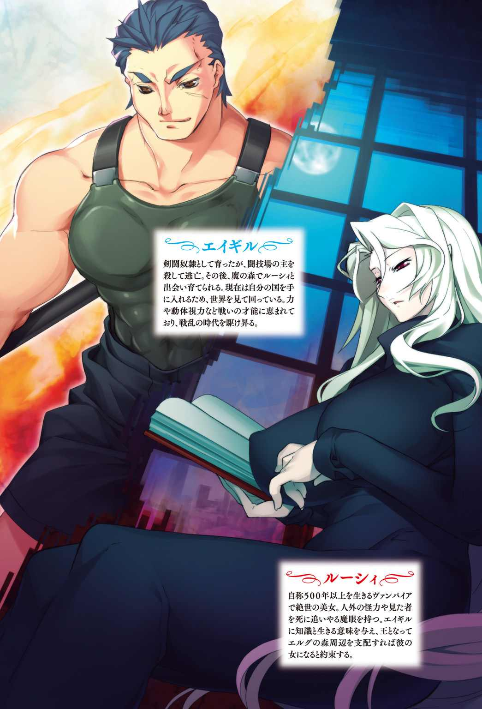
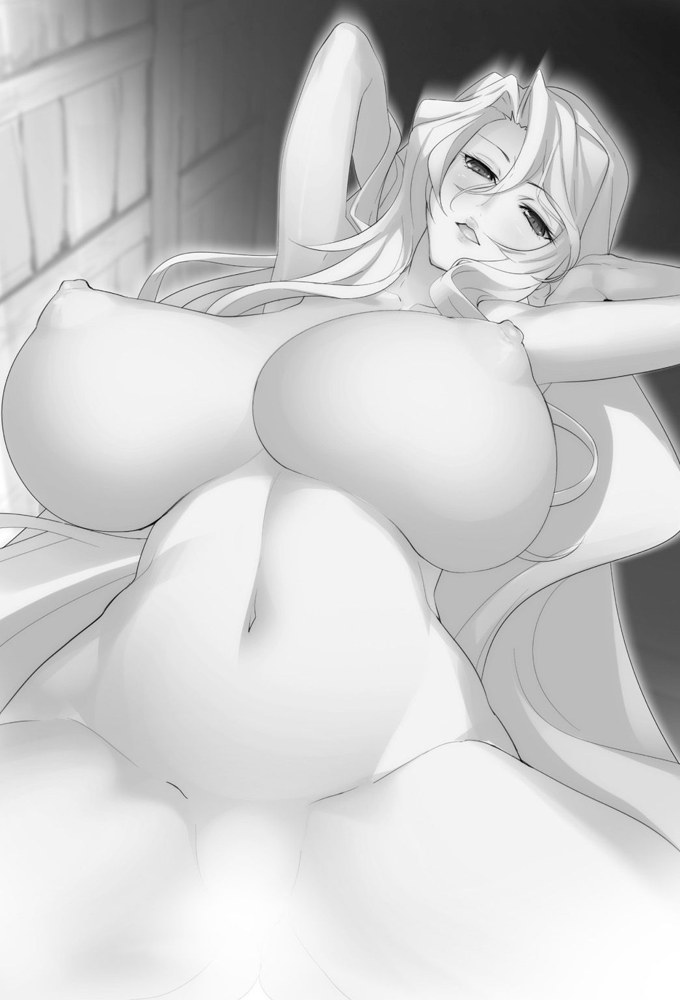
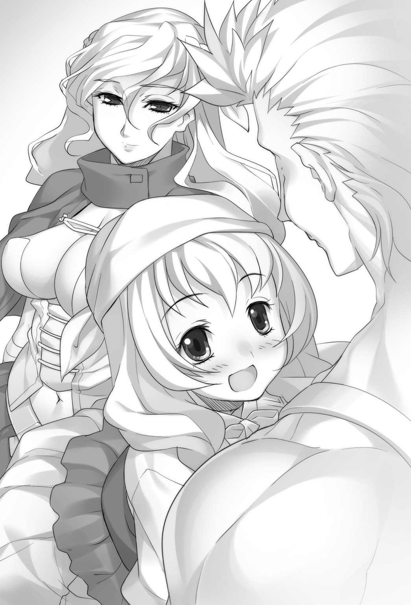

| 王国へ続く道1 (AVALON NOVELS) | |
| I of王国へ続く道 | |
| 湯水快 | |
| (2015) | |
B011QVSAXU EBOK

プロローグ
薄暗い地下、小さな陽取り窓からかろうじて光が差し込むその空間には細かく区切られた小部屋が無数に並び、牢獄のようなその部屋で俺は横になっている。
横になっているだけで眠っている訳ではない。
先程からやかましい騒音が眠りを妨害しているからだ。
うるさい女だ、もっと静かに犯されればいいのに。
響く音は女の声、媚を売ろうとしているのか、快感を得ていることを主張する嬌声だ。
［ここ］ではいつものこと、また監視役が好みの商品をつまみ食いしているのだろう。
誰も気にかけないし、気にしてもどうしようもない。
さっさと終われとばかりに毛布、ダニだらけの薄い布を頭から被る。
やがて甲高い叫びを最後に声はしなくなり静寂が戻った。
起床時間までそう長くはないが睡眠時間は多いほうがいいと俺は目を閉じ、短い安息を満喫する事にした。
俺が「ここ」に来たのはまだ物心付かない時だと思われる。
それまではどこにいたのかは知らないし、何故来たのかもわからない。
自分の歳も体格から十三か十四だろうかと言ったところで正確なところはわからない。
大きくなってから来た奴に聞く限り、親に売られたか盗賊にでもさらわれたのだと言うことだ。
わからない事だらけだが「ここ」がどういう場所なのかは簡単に説明が出来る。
少年少女が集められ、変態に抱かれたり殺し合いをさせられたりして客を楽しませるところだ。
ジャンジャンと鳴らされる喧しい音で飛び起きる。
時間はかからない、準備するのは身体一つだけなのだから。
今日もまた生きるか死ぬかの戦いが始まるのだ。
小部屋から出て食堂で吐瀉物のようなスープを流し込むと、間髪をいれずに革の鎧に身を包んだ大人の男が怒鳴り声を上げた。
「フィニー、上で客が待ちかねてる水浴びしたらさっさといけ！」
「ドラ！ てめえはデブ婦人の相手だ！ 金払いがいい、下手打ったらただじゃおかねえぞ！」
「エイギル！ お前は試合だ、さっさと武器を選んで準備しろ！」
最後に呼ばれたエイギルとは俺のことで、何かの神話に出てくる名前らしい。
以前の試合で相手を脳天から股下まで真っ二つにした時につけられた名だ。
他の奴らの名前はどうでもいい、すぐにいなくなるから覚えるだけ無駄なのだ。
俺の相手として指名された男、といっても十五にもならない少年の顔色が変わる。
試合というのはつまるところ客の前での真剣での殺し合い。客は金を賭け、声援を送り、決着すればその凄惨な光景を楽しむのだ。
一対一の殺し合いだけではなく猛獣と戦わせる、あるいは少女を一方的に嬲り殺すような趣味の悪い試合もある。
それに比べれば今日の試合は見た目だけは対等だろう。
俺は他の奴らと違って客をとらされることはほとんどない。
筋肉はよくつき、身長も低くないので子供を犯す変態の好みではないし、男として年増女の相手をするには愛想も可愛げもないからだ。
俺の「ここ」での役目は試合、そして試合における敗北はすなわち死である。
頻繁に行われる試合、途中から数えていないが一〇〇戦以上を生き残った。
一度でも負ければ死んでいるのだから全戦全勝、その事実が対戦相手の顔色を青く変えている。
手枷、足枷を外されて試合へ向かう。
手に持つ武器は馴染みの大剣、刃渡り一・二ｍ 重さ一〇ｋｇはあろうかという分厚い両刃の両手剣、身長が一六〇ｃｍに届かない俺が持つと明らかに不恰好だが、刃こぼれと血脂だらけのこのなまくらで俺は今まで生き残ってきた。
相手の装備は刃渡り六〇ｃｍの片手剣と革の丸盾のようだ。
剣を振り、感触を確かめている動作からは剣を握るのは初めてと言うわけでもないようだが、お前の装備は間違った選択だぞと、心の中で呟く。
どのみち革の盾で俺の斬撃は防げない、盾など動きと視界を妨害するだけでしかないのに。
勿論声に出したりはしない。
相手が進んで死にやすくなってくれるのだから心の中で感謝するだけだ。
大広間......といってもせいぜい二〇人が入れる場所に過ぎないが、その中心にある鉄製の柵に囲まれた場所が［闘技場］壁際には椅子が置かれ客が罵声とも歓声ともつかぬ声を上げる。
彼らの中心に鎧と槍で武装した監視役と「ここ」の主、肥え太った豚のような男がいる。
奴がいるなら観客の中によほどの上客がいるということなのだろう。
あの豚が女を犯す、飯や酒を喰らう、金を数える、以外のことをするのは相当なことなのだ。
豚は、俺がいかに強いか、相手もそれに劣っていないかを語りたてる。
大げさな語りだが、実際にこれで賭け金が積みあがるのだから笑える。
俺は相手とただ向き合う。
何も難しく無い。
勝てば食事がいくらか豪華になって明日を迎え、負ければここで死ぬ、それだけの話だ。
左脚を前に一歩出して剣を右肩に担ぐように構えた。
相手も盾を上げ、脇を開いて剣をこちらに突き出した。
さあ戦いだ。
殺すか殺されるか、終わってみるまでわからない。
第一章 無知な少年
１
いよいよ賭けも締め切られ会場にピリピリと緊張感が張り詰めていく。
これは正真正銘の殺し合い、観客達の唾を飲み込む音が聞こえるようだ。
対戦相手とは三ｍ程離れているが激しい息遣いが聞こえてくる。
戦いの前から息を荒くしてしまっては勝てるものも勝てないだろうに。
反面俺の心は冷静のようで、緊張もなければ油断もなく、ハンデとなりそうな体調不良もない。
一〇〇以上の戦いを勝ち抜いたいつもの通りの状態だ。
ならば今回も勝てるだろう、もし思いも寄らぬ何かが起きて負けるとするならば死ぬだけだ。
恐れる程の事でもない。
ガーーンと品の無い音は試合開始の鐘、同時に相手は叫び声を上げながら突進してきた。
盾を前に突き出してのラッシュ、距離を一気に詰めて、動きの遅い大剣が反応する前に剣を突き刺すつもりだったらしい。
だが、その前に俺の大剣が相手を盾ごと吹き飛ばした。
奴は武器こそ離さなかったが真横に吹き飛び、二回三回と地を転がる。
観客からどよめきがおこった。
相手は起き上がり、信じられないものを見るように目を俺に向けた。
なんの手品でもない、奴が剣を突き出すよりも俺が大剣を振り払う方が速かっただけのことだ。
これが俺が今まで生き抜いてきた理由だ。
俺の歳で大剣を自在に振り回すことができるのはどうやら異常らしい。
吹き飛ばされはしたが未だ無傷と言っていい相手に向かって俺は駆ける。
体勢を立て直すのを待つ義理はない、苦し紛れに盾を突き出すが重厚な大剣は、一太刀で盾ごと左手と左脚を切り飛ばした。
「うぎゃああ」
凄まじい悲鳴と歓声が上がり勝負は決まった。
「三十の損失だぞ！」
「くそぅ、やはりエイギルだったか」
試合は決まったがショーは終わってはいない。
観客はとどめを、敗者への無慈悲な引導を期待して声を上げるのだ。
敗者を嬲る趣味は無いが、手足を失ったこいつが死を免れる可能性はもうない。
ならば一思いにやってやるのが同じ釜の飯を食った奴への最後の情けだろう。
大剣がうなり、もがく相手の首を斬り飛ばす。
「おおっ首が飛んだぞ」
「さすがエイギルだ。見事見事」
最高潮になる歓声の中、控えの部屋に戻ろうと踵を返した。
俺の仕事はこれで終わりだ。
後は豚の部下が賭け金を回収して回り、客が飛び散った血と人体を見ながら興奮を語らうだけだ。
ところが戻る俺を二人の監視役が遮り、槍の柄で突いて中央に戻るように促したのだ。
ここから、もう一つ余興があるらしい。
一対一の勝負の後に狼が放されたり、三連抜きの勝負となったりすることはよくあることだ。
案の定、もう一人の男が柵の中に入ってくる。
男の顔は憎悪に染まり血走った目で俺を睨みつけてきていた。
単に試合の前の威嚇とは思えない、今斬った男の家族か何かだろうか？
今日の相手は妙に弱いと思ったが、こっちが本命でわざと目の前で肉親を殺させて憎悪を煽る趣向だったらしい。
「さあさあ次の相手は元騎士見習いドイル！ 憎悪に燃える彼の勝利に賭ける方はいらっしゃいませんか！」
次々と金が積まれる中、ドイルとやらは俺からまったく目を離さない。
やがて、賭けが締まり、俺達は中央で向かい合う。
俺は外の世界を知らないので騎士見習いが何かはわからない。
だが百を超える戦いの中で、騎士なんとかと肩書きを持つ奴は往々にして剣さばきが速く正確であったことは知っている。
ガーーーン
開始の鐘が鳴ると同時に奴は腰を落とした姿勢で接近し、素早い一撃を首元に見舞ってきた。俺はそれをバックステップで紙一重に回避し、下がりながらの強烈な斬り上げを放つがドイルも後ろに下がって回避する。
「速いな、大剣を持つ者の速度じゃない」
「そりゃどうも」
冗談めかして言葉を交わす中、ドイルの顔に浮き出る冷や汗を見逃さない。
「せい！」
再び突進してくる奴は身を低くして素早く俺の間合いに飛びこんでくる。
当然俺は剣を横に払って迎撃するが、読まれていたようでドイルは身を捻って紙一重で避ける。
俺の剣は大きく流れ、胴体ががら空きになってしまった。
ドイルの顔に微笑が浮かぶ。勝利を確信しているらしい。
俺の剣は大きく右に流れ、片手一本で持っている状態だ、確かにここから立て直す奴は俺も見たことがないな。
「なんだと！」
そう、俺以外の奴が立て直すのは見た事がない。
大剣を力任せに逆手に振り戻す一撃は正確性を欠いていたが、決着をつけようと飛び込んでいたドイルはうまく避ける事が出来ないはずだ。
轟音が響き、奴の持っていた盾が大きくひしゃげて宙を舞う。
「まるで迅雷だな......咄嗟に盾を手放さなければ腕ごと持っていかれていた」
わざわざ返事をしてやる義理はないので俺は剣を構えなおす。
ドイルの冷や汗は脂汗に変わっていた。
こいつとは対照的に俺の顔は落ち着いているだろう。
突進は二度見た。こいつの速度は速くない。負けることは考えにくい。
俺は剣を上段に構えて停止、その姿勢は余りにも無防備に見えるだろう。
だがそれは誘い。相手の速度を見切ったからこそできる罠なのだ。
次仕掛けてきたら勝負はつく。
一方ドイルも何やら余裕のある顔をしている。
なにやら勝算があるらしい、試して見ようじゃないか。
客も皆、息をのんで決着を見守っているようだ。
一人が小さく咳払いをし、それが合図になったようにドイルが飛び込んで来る。
当然、叩き斬るべく思い切り剣を振り下ろすと、奴は急減速して回避を試みた。
なるほど、そう来るのか。
ズドンと轟音が響き、俺とドイル、そして観客全ての動きが止まった。
ゆっくりと振り下ろした剣を引き上げる。
「あ......ぐ......あ」
ドイルの頭から股下までくっきりと切れ込みが入り、あらゆる臓腑をボタボタと地面に落としてゆっくりと崩れ落ちる。
決着は俺が踏み込んだ最後の一歩、紙一重で回避するつもりのドイルを斬り裂いた一歩だ。
戦術を読んで踏み込んだのではなく、〝回避しようとするのを見て〟更に一歩踏み込んだのだ。
俺が命を繋いでいるもう一つの理由、どうやら他の奴らよりも動く物がよく見えるらしい。
今日もいつもと同じ、勝てる相手と戦って勝ち生き延び、予想外の負けは無かった。
勝利と凄惨な決着に沸き上がる客、満足そうな豚主人の拍手を受けて俺は控え室に戻る。
２
控え室で一息ついていると、監視役が怒鳴ってきた。
まったくやかましい、試合が終わったのだから一息つかせてほしいのに。
「エイギル、ご主人様がお呼びだ！ 早くしろ」
通常なら試合が終わり血を洗うと、すぐに足枷と手枷が着けられるがその時間もないらしい。
「ここ」において豚主人の命令は絶対だ、何をおいても行かねばならない。
もっと試合を長く続けろという文句だろうか。
俺の試合は短い。大抵の場合は一撃、よくて二～三回剣を振ればそれで決まってしまう。
興行主としてはもっと盛り上がる白熱した試合を望むのだろう。
そういう文句をつけられることは珍しくなかった。
命が何より軽い「ここ」で、文句が即処刑に繋がらないのは俺の豪快な殺し方は客の受けが良く、俺の試合を狙って訪れる者も多いかららしい。
豚の部屋にのみ通じる階段を上り、悪趣味な装飾のドアの前で監視役が叫ぶ。
「エイギルをつれてきました！」
「入れ」
返事はやたらに早かった、豚主人も急いでいるのだろうか？
ドアの向こうに居たのは二人。
お馴染みの醜い豚主人と豪奢に着飾った三十半ば程の女だ。
強い香水の匂いとヒラヒラしたスカートはここには到底馴染まない。
「こちらはメディーレ男爵夫人にあらせられる。挨拶しろ」
監視役はドアのそばに下がっていく、彼も許可がなければ話しかけられぬ身分らしい。
大方、今日の試合に豚が同席した理由はこの年増女が理由なのだろう。
「エイギルです」
「うふふ、先ほどの試合を拝見したわ。まだ子供なのに随分とお強いのね」
夫人は一見上品そうな、しかし好色そうな表情で俺の胸板と腹に手を這わせる。
俺は普段の格好、つまり腰布以外は何もつけていない。
「ふふっ子供なのに本当にすごい筋肉ね」
「光栄です夫人」
この手合いにはただこう言い続ければいい、俺が過去の経験から学んだことだ。
「ぶひひ、失礼ですがメディーレ様、こいつでお遊びになる前にまずはお値段のお話をですな」
豚があくまで下手に下品な笑みを浮かべて呼びかけ、夫人は少しばかり顔をしかめる。
「わかっております、金貨二枚出しましょう」
「ぶひっ、それではちと足りませぬ。なにぶんエイギルはうちの試合での一番人気、試合の後は身体を休める必要があります所を夫人のために特別にと」
心の中で嘲笑する、要はこの女は俺を抱きにきたのだ。
それも殺し合い直後の野蛮な男に抱かれたいという変態的な欲望を満たしに来たのだろう。
「金貨二枚も出せば王都の高級男娼でも買えるわよ！ それをこんな汚い......」
「ぶひひっ！ メディーレ様のおっしゃいますこと、正にその通りにございますが、街の男娼にこやつほどの荒々しい男はおりますまいて」
金貨銀貨とはよく聞くが一体どれほどの価値なのか。
金貨二枚ってのがパン一個分だったらさすがに気分が悪いな、などと考えていると交渉が決まらないのか豚が俺に命令する。
「エイギル、裸になれ！ それとお前は下に行ってこいつの剣をもってこい。血のべったりついたやつをだぞ」
俺は文句一つ言わずに腰布を外す、一糸纏わぬ姿になると夫人の眼が熱を帯びる。
「ぶひひっ！ いかがですかメディーレ様、こいつはまだ成熟してはいませんがこちらもなかなかの大きさでございまして」
「こんな少年になんて凶悪なモノが......」
「ぶひ！ ただし、試合の後で滾っておりますので、少々歯止めが利かず、強引なものになってしまうかもしれませんが何卒ご容赦を」
「荒く、強引に、ですのね......」
夫人は俺に近づき、一物をゆっくりと撫でる。
この女は好みではなかったが、血が滾っている所を刺激されると本能が燃えてそそり勃つ。
手の中で硬くなったソレをメディーレと言う女は熱に浮かされたように見つめる。
「ですが金貨一〇枚というのはあまりにもねぇ」
文句を言いながらも俺の一物を擦り上げる手は止まらない。
そこに扉がノックされ監視役の一人が入ってきた。
「ご命令どおりこいつの剣を持って参りました」
「ぶひ！ よしエイギルその剣を持て！ 夫人に体を見せるようにだ！」
先ほどの夫人の様子から見てもう一押しと見たのだろう、変態的な情欲を刺激するように命令する。
だが監視役は俺に剣を渡すのを躊躇っている。
何しろ今の俺には手枷も足枷もついていないからな。
もしこのまま進むなら楽しいことになるかもしれない、笑いそうになる顔を抑え込む。
「ぶひょっ！ 何をしている！ ノロマ！ グズッ！ メディーレ様をお待たせする気か」
主人が怒声を上げた。
「はっ申し訳ありません。エイギル持て！」
一人の監視役が俺に剣を手渡した刹那、血しぶきが舞う。
彼は困惑した表情のまま、床に首を落とした。
バチュンと鳴る音、いつもの命が消し飛ぶ軽い音、監視役の命も俺達と大差ないものらしい。
「えっ？」
「ぶひっ？」
皆が何が起こったか把握する前に状況を動かす。
斬り上げで一人の頭を落とし、返す太刀でもう一人の監視役を肩口から斜めに両断する。
革の鎧など俺の力の前には何の役にも立たない。
「いやぁぁぁ......ぎゃっ！」
夫人が悲鳴を上げようとしたが、俺の剣はその胸に突き刺さして悲鳴を止めた。
夫人の身体は勢いのままにタンスに突き刺さり、血泡を吹きながら前のめりに崩れ落ちた。
当然の結果だ、無抵抗の子供を嬲るしかしていない監視役と毎日死線を潜っていた俺、武器を持って向かい合えば負ける道理が無い。
「おま......ぶひ！ 何故！ どうして......ぶひょ！ あり得ない！」
俺はゆっくり剣を持ち直し豚主人の方に向かう。
「何故だ！ 何故こんなことをする！ 私を恨んでいたのか！？」
豚の口から飛ぶ汚い泡を避ける。
「いや、あんたを恨んだことなどなかったよ」
「では何故だ！ 何故！？」
「やってみたかったから」
一瞬の間ができる。
「な......んだ......と？」
「手枷も足枷もなく剣を手にしたら、ここにいる奴らを皆殺しにできるんじゃないかなって、今なら外に出る事もできるかもしれないと思いついた。それだけだ」
「馬鹿なことを！ 外には武装した部下が何人もいる！ 見つかって殺されるに決まっている」
豚の叫びを聞くたびに俺の心は冷静になっていった。
「そうかもしれない。でもそうじゃないかもしれない」
思わず漏れる笑い、外に出られるのが嬉しいのか、それともこれから起こる殺し合いが楽しみなのか自分でもわからなかった。
「いつもは戦って勝ってもまた同じ繰り返しだったけど」
豚主人と目があう。
「ひいっ！」
「今度の戦いに勝てば外に出られるみたいだな」
単純に楽しみだ、うまくいけば外に出られるかもしれない。
外には何か面白いものがあるのかもしれない。
負ければ死ぬが、それはいつもと同じだ。
豚主人に背を向けて頭をなくした監視役の鎧を剥ぎ取り、下の服も剥いで着てみる。
少しでも生き残る可能性を上げるには鎧でも着た方がいいだろう。
服を着終わった所で豚主人が突然優しげな声を出す。
「ぶひ、まぁあれだ！ 外の世界を見たいと言う気持ちもわかる。俺への恨みもあるだろうにお前は俺を殺さずにいてくれた。主人として多少の思いは持ってくれたのだろう？」
何を言っているのだろうか？
「このまま出て行ってくれたら、俺はしばらくここで大人しくしていようじゃないか。そうすればお前も逃げやすくなるだろう？」
恨み？ 主人としての思い？ 何を勘違いしているのだろう、間違いは訂正しておこう。
「何か勘違いがないか？ あんたに恨みなんてない、主人としての思いも勿論ない」
「ぶひっ！ では何故俺だけ助けて......」
俺は笑顔だったのだろう、豚の顔色が消えていく。
「だってあんたは一番弱い。だから一番最後でいいと思っただけだ」
一番弱い相手だから特に対処する必要がなかっただけ、でもよく考えたら叫ばれでもしたら厄介かもしれない。
俺の中で、豚はどうでもいい小石から鬱陶しい生ごみに変わった。
「よし、やっぱり殺しとこう」
「ま、まて！ 金はあるからそれで......！」
腰を抜かして両手を突き出す豚、脂だらけの首は斬りにくかったが、力任せに叩き斬る。
床に転がった首、豚は死に顔も醜いな。さて逃げることにしよう。
３
片手に大剣、もう片手に監視役の槍を持ったまま階段を下りていく。
扉を開けてまず目に入った男に大剣を一閃、絶叫しながら崩れる男を階段下に蹴り落とす。
そのまま走って階段を駆け下り、何があったのかと上を見上げる男の眉間に槍を叩き込む。
痙攣しながら崩れる男から強引に槍を引き抜くと、長い廊下をただ走る。
出口は知っている、新しい子供が連れてこられる入り口は開く度に明かりが漏れるのだ。
「お前一体......うわああ！」
慌てて槍を向ける男の腹に槍を突き刺し、そのまま槍ごと壁に突き立てた。
その男の槍を奪いまた走る。
「エイギル、頼む、助けて！ 出してくれ！」
駆け抜ける廊下に面した小部屋にいる奴らが一斉に呼びかけてくる。
俺は彼らを助けるために尽力する気はないが、俺が逃げる助けぐらいにはなるかもしれない。
剣を叩きつけると格子が鍵ごと粉砕される。
まるで紙細工のようだな、こんなに脆かったなら素手で引き千切れば良かった。
次々と小部屋が開き、わっと子供達が飛び出して出口へ向かって走っていく。
俺の通り道に当たらなかった部屋からは怨嗟と懇願の叫びが響くがそこまでは知らん。
「自分でなんとかしてくれ」
大勢が一斉に出口に駆け出したのだから隠しようもなく、監視役は全て飛び出してそこら中でもみ合いとなっていた。
槍の柄で打ち据えられてその場に倒れる者、抵抗して串刺しにされ、絶叫している子供。
地下の牢獄は今までとは別の意味で地獄と化し、更に花を添えるのが俺の振るう剣だ。
「どけ、前を塞ぐと叩き斬るぞ」
俺の一振りごとに人が部品となって飛び散る。
剣は人を解体する肉切り包丁、槍は串刺しにした者ごと振り回すハンマーだ。
両手で作り出す死の暴風が十人目の監視役を引き裂いたところで、明かりの漏れる厚い木の扉に行き着いた。
閂がかけられた木の扉を大剣の一閃で叩き壊し、蹴り開く。
そこには見たことの無い光景が広がっていた。
「これが、外なのか？ 眩しい......目が痛い」
地下からでも小さな窓を通じて日光を感じることはできる。
だが柔らかな風と一面に降り注ぐ太陽、そして全力で走っても果てがない程に広がる空間、いずれも生まれて初めて感じるものだった。
他の子供達は飛び出すなりばらばらに逃げていくが、他人がどう逃げるか気にする余裕は無い。
後ろからは誰も追いかけてくる気配はない。あるいは既に殺し尽くしたのだろうか。
「何よあれ」
「ひっひとごろし！」
周辺に居た人々が血まみれの集団が出てきたことで騒ぎ出す。
「警備兵だ！ 警備兵を呼べ！！」
警備兵が何かはわからないが、やばそうなので逃げよう。
「さて、無事に賭けに勝って脱出できたわけだが、これから何をしようか」
俺は脱出すると決めたが、外の世界で何かしたい訳ではなく、単に思いつきで外の世界に飛び出したに過ぎないのだ。
「適当に生きてりゃなんとかなるかな」
自分が無知なのは知っている。
馬鹿がうだうだ考えても始まらないし、適当に歩けば何か面白いことにぶつかるだろう。
奪った服と剣、これだけあればなんとでもなるさ。
血の脱出劇を繰り広げてから半年後、俺は郊外にアジトを張る傭兵団の中に身を置いていた。
何の知識も無い俺にできるのは戦いだけだし、身元の怪しさでは他に並ぶ者がない程だから、まともな兵士や護衛になどなれるはずがない。
結局、同じような奴らが集まった傭兵団兼盗賊団に参加して暴れる他なかったのだ。
「へへ、大人してりゃ命はとらねぇよ」
「金と女房は頂くけどな」
勤しんでいるのはいつもの商売......要は行商人を襲っての積荷と女の強奪だ。
相手は行商人と妻、そして護衛の男が一人。こちらは男五人、人数的には圧倒的に有利だろう。
だが相手の護衛は優秀な男だったらしい。
「ふん！ ゴミ共が、貴様ら如き下賤の者に良いようにはさせん！」
人数差に臆することなく、斬りかかった仲間の剣を受け止める。
「甘い、そんな剣で俺が斬れるか！」
「ぎゃぁぁぁぁ！」
男は鮮やかに受け流し、がら空きになった胴を一閃、仲間は絶叫を上げて崩れ落ちる。
「野郎やりやがったな！」
続いてもう一人の仲間が槍を突き出すが、軽く避けられて剣で穂先を斬り落とされる。
おお、上手いな、大したもんだ。
「へ？ ま、まて！ ぎゃああああ！」
「死ね外道！」
槍を失った男はばっさりと肩口を斬られて絶命する。
死ぬのはいいがもう少し静かに死んで欲しいな、昨日の酒が残っているから頭が痛い。
「どうだ！？ まだやるか！」
残った仲間二人は男の強さに腰が引けている。
「おいエイギル！ お前もぐちゃぐちゃ言ってねーで頼むぜ。俺達じゃ歯がたたねぇよ」
「俺は二日酔いだから見てるだけだと言っただろうが」
「仲間が二人もやられたんだ！ 頼むよ、俺達の分け前も半分やるから！」
やれやれ仕方ない、これも仲間と食い扶持の為かと背中に担いだ大剣を抜き放つ。
仲間二人はさっと俺の後ろだ、大の大人が情けない。
「子供......？ なんのつもりだ」
まぁ俺はどう見てもまだ子供だからな、大剣も不釣合いに見えるだろう。
「次の相手は俺らしいぞ」
背中から「やっちまえ」と盗賊二人が野次を飛ばしている。
「餓鬼の後ろに隠れるとは......魂まで腐っているらしい」
護衛は唾を地面に吐き捨てて言い放つ。大いに同意するよ。
「おい餓鬼、どうせ盗賊共に脅されているのだろう？ お前は追わんからさっさとどけ」
「うーん、説明するのもなぁ」
自分の意思でここにいること、俺は後ろの二人よりも強いのだと説明するのは面倒くさい。
さっさと決めてしまうことにしよう。
「......ふっ」
息を強く吐いてからの突進、剣を上段に振り上げて護衛の男に斬りかかる。
「なに？ は、はやい！」
男は慌てて防御するが力任せに振り下ろした一撃に弾かれ、地面を転がる。
「餓鬼！ お、お前、なんて馬鹿力......」
「悪いな」
よろよろと立ち上がった男を前蹴りで追撃、まだ何か言っていたが、聞くつもりはない。
「こんなもんか、じゃあな」
大きく横に振った剣が男の首を刈り取ると噴水のように血が飛び出し、頭を失った胴体がフラフラと歩き回ってから前のめりに崩れ落ちた。
おっと危ない、返り血を浴びたら臭いが残ってしまう。
「やった！」
「やっぱエイギルの野郎はつええぜ！！」
沸き上がる盗賊の二人。
「な、なんてことだ！」
反対に商人達は悲鳴を上げる。
「言う程強くもなかった。こんなのに歯が立たないなんてお前ら大丈夫か？」
俺の嫌みも聞かず、盗賊二人は無防備になった行商人を滅多刺しにし、泣き叫ぶ妻を捕まえて草むらに連れ込んでいた。
「おうエイギル、お前の手柄だ。この女先に乗ってもいいぞ？」
「やめてぇぇぇ！ いやぁぁぁ！」
女の絶叫が二日酔いの頭に響く、これを聞きながら犯す気には到底なれないな。
「いらない。それより口をおさえて犯ってくれ、頭に響く」
「まったく、お前でかいモン持ってるのに勿体ねぇ。使ってなんぼだぜ」
女の悲鳴と仲間の笑い声、気分のいいものでもないが、俺だけ帰る訳にもいかない。
「終わるまでひと眠りしようかな」
犯される女のくぐもった悲鳴がやけに不愉快だった。
４
荒んだ生き方がしばらく続き、俺が団の中で自分の居場所を作り上げた頃、団が今までになく騒がしくなった。
「じゃあお頭、俺達全員でその行商の隊列を追うってんですか？」
尋ねたのはジェミーと言われる仲間で軽業を得意とするお調子者だ。
何でも大商会の隊商がアジトの近辺を通ったらしい。
「おうよ、あの規模の隊商なんかこの辺じゃめったに出ねぇ、その上奴らは給金で揉めて護衛の大半を切り離したらしいぜ。こいつをモノにすりゃ一発大儲け、女も酒も食い放題よ！」
豪快に笑う男はこの傭兵団の頭ロバーノと言う名前だったと思う。
本人は山賊崩れと言っているが、この団自体が現役の山賊のようなもの、要は山賊の頭だ。
ロバーノ達はワイワイと言い合っているが俺に話しかけて来る奴はいない。
俺が大きな儲け話や女の話にあまり興味を示さないのを知っている。金は生きられる分あればいいし、女にも特に興味は無い。
一方で俺の実力はロバーノ他、全員が認めているので荒事では頼りにされている。
「でもよお頭ぁ～その隊商ってのはここだろう？ 今から追いかけてもちっと厳しいぜ」
一人が地図を指す、確かにそこまで進んでいるならとても追いつけない。
隊商と言えば鈍重な印象があるが、馬車を潤沢に装備した隊商は貧乏な行商人とは違って結構な速度で移動するのだ。
「んなことはわかってる。街道を追いかけるんじゃねぇ。エルグ森を突き抜けて近道するのよ」
ロバーノがそう言った瞬間、周りが一瞬にして静まりかえる。
「お頭......あそこはやべえぜ」
ジェミーの言葉に他の盗賊達もコクコク頷く。
「なんでも森の奥には悪魔の巣があるとか」
「俺は悪霊が湧き出す沼があるって聞いたぜ」
仲間達はそれぞれに自分の知ってる噂を語り始めたが、どれも適当なものだ。
俺は武器を磨きながら笑う。散々人を殺し、犯しておきながら自分の身になるとこうだ。
「馬鹿野郎！ くだらねぇ噂なんか信じてるんじゃねぇ！ そもそも今聞いただけでも同じ噂がトンとねぇ、好き勝手ホラ吹いてるだけじゃねーか」
ロバーノは完全に噂を信じていないようだったが、仲間の一人が即座に反論する。
「でもよお頭、噂は確かにいい加減なのばっかだが、実際入って出てこない奴が多いってのはマジなんだ。あの森は本気でなんかやべぇんだよぉ」
なお食い下がる部下をロバーノは一喝する。
「うるせぇ、俺はもう決めたんだよ！ ガタガタ言う奴は潰して悪魔とやらの餌にしてやるぞ」
これが鶴の一声となって傭兵団二〇名はエルグ森への侵入を決定し移動を開始したのだった。
俺たちは呪われているらしい森に侵入、ロバーノの怒鳴り声に急かされながら戦々恐々と森を進んでいく。
だが強張った顔はすぐに元に戻り、やがて笑顔に変わっていった。
「なんて快適な森なのか」
それがエルグ森に入ってからの全員の考えだ。
既に森に侵入して丸一日、悪魔どころかどこにでも転がっているゴブリンのような雑魚魔物や狼や熊さえもまったく見ない。
一方、果実やウサギ等、食料になりそうな生き物はやたら豊富ときている。
「これが悪魔の森なら、俺達のアジトは地獄の一丁目にちげえねぇや」
全員が笑って同意する。
「これならアジトをここに移しちまってもいいかもしれねぇな」
「ちげえねえ そうしようぜ」
下品な笑いと声が上がる中、先行したジェミーが怪訝な顔で戻ってきた。
「お頭、前方にその......民家がありやす」
「はぁ？ お前は何を言っているんだ」
一番近くの町から丸二日も離れたこんな場所に民家なぞあるはずもない。
しかも村ではなく家が一軒だけだという。
山小屋にしても奇妙だ、この森は呪われた森、狩人も入らない場所なのだ。
警備隊の拠点か、それとも別の盗賊のアジトか。
皆の雰囲気が引き締まる。しかしジェミーの次の一言で雰囲気は一変した。
「家の中も覗いて見たんすが、とんでもねぇ美人が住んでるようです」
途端に警戒の声が嘲笑に取って代わられた。
民家があるのは奇妙な話だが、美女が住んでる、とまで行くと怪しさを通り越して妄想だろう。
女に飢えて木の股でも見間違えたのだろうと皆が笑う。
それでも必死に訴えるのでロバーノは笑いながらジェミーの後をついていくことにしたらしい。
「へ、何もなかったら大笑いしてやろう」
「俺達の分の荷物を持たせてやろうぜ」
周りの盗賊達もニヤつきながら文句を言わずについてくる。
一行は笑いながらあるはずの無い家へ向かい進み......そして見つけてしまった。
森の中にぽっかりと開けた場所にそれはあった。
うっそうと茂った森の中、円形の草地が広がりその真ん中に建つ家が一つ。
木製の小奇麗な家は大きくはないが、物置では無く人が住んでいる気配がする。
家の周りには井戸と小さな畑があり、周辺の風景と完全に溶け込み、のどかな農村の雰囲気をかもし出している。
だがここは魔の森、あってはならぬ光景だった。
「おいおいマジかよ」
ロバーノが思わず呟き、他の盗賊も目を丸くしている。
だが彼らはすぐに動き出す、ここでぼけっとする集団ならば傭兵稼業も盗賊も務まらない。
すぐに全員が剣を抜き、数人が家に張り付いて木窓を薄く開けて中を覗き込む。
俺も戦闘要員として剣を抜いて窓に近づいた。
「はて、珍しい。お客人でありましょうか？」
鈴の鳴るような美しい声
雪のような白い肌
そして美人と言うのが冒涜と思えるほどに整った顔立ち
美の女神とも思える女性が窓から覗く男に語りかけた。
白い、あまりにも白い肌に鮮明に浮き上がる真っ赤な唇、そこから紡がれる美しい音色。
武装した複数の男という異常事態を前にしても一片の怯えもなく、ゆったりと上品に話かける。
これで山姥でも出たのならば心の準備もできているが、人生で見たことのないような美女。
あまりにも美しい女の前に盗賊達は意味のない音を発することしかできない。
俺も言葉が出ない。
好みや嗜好など飛んでしまう、問答無用の美しさ。
女に興味の無かったはずの俺も視線が彼女から離れない。
「ふふ、訪ねていらっしゃったのはそちら様でしょうに。何を驚いていらっしゃいますか」
口に手をあてて美女が微笑する。
「見れば他にも大勢のお客人がいらっしゃるご様子。貧相な住まいにございましては到底お迎え入れること適わず、本来なればわたくしが門前にてお迎えするが礼儀と存じますが、なにぶんひ弱な身の上にて陽の下はご容赦頂きたく」
「そ......そうで存じまするのか！」
「も、勿論容赦してや......いたす......いたしましょうだっけか？」
コロコロと鈴の転がるような声に盗賊達も応えるが、生まれてから敬語など縁のなかったものばかり、滑稽な返事でただ慌てふためくことしかできない。
それを聞いては美女がまた口に手をやりクスクスと笑う、盗賊達の鼻の下は伸びきって、もはや会話はなりたたなかった。
停滞を打ち破ったのは部下の様子に業を煮やして駆けつけたロバーノだ。
窓の周りで硬直する仲間を掻き分ける。
「てめえら何グダグダやってやがる！ さっさと何があったか言いや......が......れ」
ロバーノもしばしあっけにとられたが、すぐに欲情を含んだ視線を美女に向けた。
「こいつはすげえ......見た事もねぇ程のいい女だ」
「あら、ありがとうございます」
立ち上がり窓越しに微笑みかける彼女は全身を黒生地の服で覆っており、肩には同じく黒のショール、そして足首近くまであるロングスカートを身にまとっている。
露出はまったくなく、顔以外に肌が見えるのは手の先だけであるにも拘わらず、大きく押し上げられた胸部は彼女が動くたびに柔らかく動き、張り詰めたロングスカートの中にはむっちりと肉の詰まった尻と太ももがあることは疑いようもなかった。
ロバーノはいやらしい笑いを浮かべ、許可を得ることなく家の中に踏み込んでいった。
追いかけるように俺と数人の仲間が同行する。
室内は思いのほか暗かった。
薄い木と丸太で出来ている外見からは隙間から日光も入りそうに見えたが内側は灰を混ぜた蝋か樹液のようなものが塗りつけられ、隙間はなく壁色は黒一色と言っていいだろう。
昼間であるにも拘わらず、手元を見るにも苦労するほどに暗い室内には灯りは一切なく、薄く開いた窓から差し込む光のおかげでかろうじて視界は確保できている程度、窓を閉じればこの家は月の無い夜と同じように真っ暗になってしまうだろう。
テーブルの上には油火も蝋燭もない。
この女、俺達が近寄るまでは窓も開けていなかったはず、真っ暗な中で何をしていたんだ？
俺は形容しがたい悪寒を感じたが、事が起こってから考えればいいと思考を打ち消す。
美女は俺のほうをチラリと窺ったように見えたが、強引に押し入った男達に対してなんら態度を変えることはなかった。
「女一人の家ですので大したおもてなしもできませんが」
「いや、いらねぇよ。あんたみたいないい女を眺めるってのが最高のもてなしだぜ」
ロバーノは美女の全身を遠慮せずに眺めている。
家の周りには自分の部下がいて相手は女一人、もう逃げられることもなく、遠慮は無用ということだろう。
「あら、嬉しいことをおっしゃいます」
女は視線を気にもせずに軽く微笑むと柔らかに続ける。
「さてこのような辺鄙な場所に何をしにおいでになったのでしょうか？」
「ちっとばかし近道をしたかったからよ。そしたらこんな森の中に家が一軒ポツンと建ってるじゃねーか。そりゃ確かめたくなるのが道理ってもんだろ」
ロバーノが身を乗り出して美女に迫る。
彼が色欲を抱いていることは俺にもわかったし、美女に逃れる術がないこともわかっている。
「で、お前の名はなんてぇんだ？ 是非ともお聞きしたいね」
「名乗りを忘れるとはこれは失礼を、わたくしは［ルーシィ＝ユークトヴァニア］と申しますわ」
全員に一瞬緊張が走る。
家名があるということはこの女は貴族、もしくはそれに近い存在であったということだ。
しかし都市では力を持つ貴族の名もこんなところでは何の役にもたたない。
今までも街道で貴族の一行を襲撃して財産と娘を頂いたこともある。
しかしますますわからない、名字を持つような女がこんな所で一人暮らしをするものか？
「事情がございまして、大層な名を名乗っておりますが、ただルーシィとお呼び頂きたく」
女は姓について深く語るつもりはないのか、話題を切り替えた。
「で、ルーシィちゃんはこんな場所で一人で何をしてるんだ？ ここいらにゃ店どころか人も寄り付きゃしねぇ。到底女一人で生きていけるとも思えないがな」
ロバーノはわざとらしく美女の肩に手を乗せる。
「女一人なれば、食事も慎ましく済みますし、周りの畑を耕し、森に出ては命を頂き、かろうじて生きてこの家を守っております。」
だが美女は怖がるそぶり一つ見せずに微笑みながら答えた。
「ほぅ、狩りが出来るってか！ 見た目に合わず案外にたくましい嬢ちゃんじゃねぇか！」
ロバーノが豪快に笑い、今度はわざとらしく豊満な胸に触れる。
それでもルーシィはただ微笑むだけで何の反応も示さなかった。
だが俺はより一層の違和感を感じていた。
女だの貴族だのは関係ない。狩りをするための弓も矢もこの家にはない。
おまけにかまどに張ってる蜘蛛の巣は一〇日程度のものではなく、この家では相当な期間火など起こされていないはずだ。
ロバーノを睨んで警戒を促すが、美女の色香に溺れた彼には届かなかった。
「決めたぜルーシィちゃん。お前は俺の女になるんだ」
ロバーノはルーシィの手をつかみ抱き寄せ、体に密着したドレスの上から尻を撫でる。
「あら、左様なことを申されましても、わたくしこの家を守らなければなりませんので」
未だ平静を崩さないルーシィに他の者も違和感を感じたようだ。
盗賊に囲まれた女がとる行動は無駄と知りながら抵抗するか、泣いて懇願するかのはずなのだ。
だが、肉付きのいい豊満な女体の感触に溺れるロバーノは気づかない。
「聞けねぇな。お前はもうどうやっても逃げられねぇよ。どうしても嫌というならこの家を焼いてお前さんを引きずって行くだけの事だぜ」
「それは困ります、ここは大切な場所ですので」
初めてルーシィがわずかに眉をひそめ困ったような表情を作る。
ロバーノはルーシィの尻を撫で回しながらも続ける。
「そもそもお前みたいな女がこんなとこでくすぶってんのは世界の損失ってもんだぜ。いい女ってのは男に抱かれてなんぼってもんだ」
ロバーノはもう辛抱たまらんとばかりにドレスの胸元に手を伸ばし、破ろうと力を込める。
美女は仕方ないと溜息を吐き、観念したようだった。
「乱暴をされて服を破られては困ります。お抱きになりたいのでしたらお相手致しますのでせめてお一方ずつでお願いできませんでしょうか？ 荒いのは嫌いですわ」
ルーシィはロバーノの首に手を回して訴えた。
「大人しくしてりゃ乱暴な扱いはしねぇよ。綺麗な宝石に傷つける奴はいねぇからな......おい！ てめぇらちょっと外に出てやがれ！」
辛抱たまらんとばかりにロバーノは鉄の鎧を脱ぎながら俺達に退室を命じた。
古参の二人は笑いながら外に出て行くが俺は少しばかり躊躇する。
「得体の知れない女だ。二人きりってのはあまりいい選択とは思えないぞ」
この女は奇妙だ。何をとってもどこから見てもおかしすぎる、ここでロバーノと二人きりにすれば何がおきるかわからない。
だが情欲の高まったロバーノは怒鳴り声を上げる。
「エイギルてめぇも出ていけ！ この女が欲しいなら俺の後で味見させてやる。外に出たら他のクソ共が覗かねぇように見張っていろよ」
やれやれ本人の選ぶことだしな。どの道俺が何か言っても聞き入れる訳もない。
ロバーノが早速ズボンから取り出した汚いソレを見る趣味はないのだ。
「まじで一人ずつって言ってたのかよ」
家の周りを囲んで待つ盗賊達の話題は言うまでもない先ほどの美女のことだ。
「俺達もあの女を抱けるのか！」
「どうせ俺達に回ってくる頃にはボロボロになっちまってるよ」
「ボロボロでも街の娼婦なんかとは比べられねぇよ」
騒がしい周りを気にせずに俺は扉の前に立ちふさがる。
ロバーノの命令通り、覗きを潰すためにだ。
仮にも半年、俺の戦い方を見ている盗賊達は俺を押しのけての覗きをあきらめ、思い思いに妄想話を語っているのだ。
室内から連続して壁に何かが当たる音がすると盗賊達は視線を移すがすぐに笑い声になった。
「おいおい、お頭激しくやってんなぁ」
「なんとか大切に扱って欲しいぜ、俺達に回ってくるまでよ」
「前の貴族の娘なんか上玉だったってのに俺の番には潰れた蛙みたいになってたしなぁ」
悪寒は高まり説明はできない何かを感じて俺は大剣を握る手に力をこめた。
地下の戦いでも感じたことのない悪い予感だ。
扉がゆっくりと開き、盗賊達が喜色の浮かんだ目で一斉に注目する。
そしてロバーノが扉から飛び出し......地面に激突し真っ二つに折れた。
「なに！」
あり得ない。
ロバーノが死んだこともありえないがそれ以上に死に方が間違っている。
彼の死体はまるで焼き菓子のように乾いた音を立ててぽきりと折れたのだ。
人の体にどんな力を加えても、潰れたり引きちぎれることはあっても、綺麗に折れることなどあり得るはずもない。
ガチャガチャと鉄の鳴る音が聞こえる。
全員が緩めていた装備をしっかりと付け直し、剣を鞘から出す。
リーダーの突然かつ衝撃的な死、しかしこれで混乱して秩序を失うようでは生き残れない。
良くも悪くも修羅場を潜った傭兵兼盗賊団だ、やるべきことははっきりしている。
敵は明白、あの場所には二人しかいなかったのだから。
全員の武器が扉に向けられた。
俺も扉から後ろに跳躍し、大剣を上段に構えていつでも飛び込めるように準備する。
そして予想通りの人物が予想外の格好で静かに姿を現した。
美女は豪奢な金髪を揺らしながら一糸まとわぬ姿で扉前に姿を現したのだ。
巨大な胸はまったく垂れることもなく、張りのある尻は思わず抱え込みたくなる美肉だった。
全員が一瞬呆気にとられるが、すぐに戦闘態勢に戻る。
絶世と言ってもいい美貌も黄金比ともいえる肉体も健在ながらおかしな点が二つ。
一つは口元から胸までが血に染まっていること。
そしてもう一つは人にはあり得ない爛々と輝く真っ赤な瞳だった。
本来ならば一番初めに斬りかかるのは俺の仕事だが、本能と勘が警鐘を鳴らしている。
「これはだめだ」「こいつと戦ってはならない」と本能が叫ぶ。
俺は飛び掛かるのではなく逆に後ろに下がり美女との距離を一〇ｍまで空けた。
しかし全員が優れた勘を持っているわけではない。
恐怖を感じる事の出来なかった一人が槍を持って突きかかる。
「ダメだ、行くな！」
俺は叫ぶが間に合わない。
美女は槍の穂先をまるで蝶々でも捕まえるように軽く摘まみ、引き寄せた。
「な、なんだ！」
突き出される槍の穂先を掴むのも脅威だが、引く力は完全に人外のものだった。
男はまるで逆から吹き飛ばされたかのように美女に飛び込んでいく。
そして美女は男の胸に向けて左手を突き出す。
バキン
男の下半身は引き寄せられるまま美女に吸い込まれ、上半身は彼女に押されて反対へ飛ぶ。
男は背中側に［く］の字に折れて血反吐を吐きながら地面に落ちた。
確かめるまでもない即死だった。
「人間じゃない！」
人間の女はどんなに訓練しようが才能があろうがこんなことはできない。
俺も人間離れした怪力と言われるがあんな真似はできない。
俺達の......いや、人の勝てる相手ではないだろう。
逃げる以外に生き残る可能性はない。
だが逃げられるか？ やつの身体能力は怪力だけか？
思考は巡り、美女には十分次の攻撃の時間があったはずだが動かない。
扉前の日よけ屋根の下から出てはないのだ。
好機とばかりに弓やクロスボウを持つ数人が矢を射掛ける。
ほとんどは軽く手で払われてしまうが、隙をついたのかクロスボウボルト一本が胸に突き立った。
歓声が上がる、クロスボウは非常に強力だ、至近距離から当たったならば甲冑の上からでも内臓に達し即死させることも少なくない。
ボルトは美女の胸に突き立ち、まず致命傷、生きていたとしても立ち上がれるはずがない。
だが美女の微笑みは崩れず、胸に刺さったボルトを引き抜いていく。
「うそだろ......げふ！」
空気を切る音が聞こえ、クロスボウを放った男が崩れ落ちる。
彼女が引き抜いたボルトを投げ返したのだ。
美女の胸の傷は瞬く間に癒え、元の美しい肌に戻っていく。
さすがに全体が浮き足立って包囲は崩れ、各人が後退し始めた。
いくら修羅場を幾度も乗り越えたとはいえこんな化け物の相手はしたことがない。
戦場では相手は矢を受ければ倒れ、剣で斬れば死ぬのがルールなのだから。
だが圧倒的優位にありながら美女は扉の前を動かない。
ただ周囲の男に裸体を晒し、にこやかにたたずんでいた。
人外の美貌、暗い室内、干涸びた死体、再生する身体、御伽噺を信じるならば美女の正体は見当がつく。
「包囲して突撃だ！ 決着をつける！」
俺は大声で叫ぶ。十四かそこらの小僧の言葉に全員が従い陣形を組む。
その信頼は血と勝利で勝ち取ったものだ。
美女が大剣を振りかぶる俺を見て微笑み、誘うように軽く舌を出す。
その刹那、彼女の周りを囲んだ一〇名ばかりの男が一斉に槍や剣で、また戦槌で襲いかかった。
全方位からの集中攻撃、しかしそれもまったく通用しない。
武器が届く前に頭を叩き潰される者、武器ごと放り投げられるもの、振りかぶったところで両手がないことに気づく者、一瞬の間に四人が命を失い、二人が天高く放り投げられた。
運よく二名程が武器を突きたてることに成功するが、その代償として頭を手で握りつぶされる。
生き残った者も、余りの惨状に戦意が消し飛んでしまったようだ。
わずか数秒の戦闘で決着はつき、まともに戦えるものはいなくなる。
だがそれで十分、全てが囮で陽動なのだ。
俺は既に跳躍し、大剣を振りかぶっている。
最後の二人の顔面を素手で潰した美女の両手は塞がっている。
両手で振りかぶった打ち下ろしは未だ誰にも弾かれたことも受け止められたこともないのだ。
必殺の一撃が落ちるまで刹那の時間が稼げればそれで良かった。
それでも美女に焦りの色は微塵もない。
顔面を握りつぶした男を俺との間に軽々と引き上げる。
彼女にとって男一人分の重さなど無いも同然のようだ。
俺の一撃と美女を結ぶ軌道に、無残な死体を持ったままの手が掲げられる。
このまま全力で剣を打ち下ろしても間違いなく止められるだろう。
それでも俺は剣を振り下ろす......ことなく右手一本で大剣を横に、美女の頭上をなぎ払った。
破壊音が響き、家の玄関先、扉の上に伸びるせり出した屋根が叩き壊される。
それは分厚い木製の頑丈なものだったが、俺の大剣の前では小枝も同然だ。
自分に振り下ろされるはずの大剣が軌道を変えたことに対応できず呆然と見送った美女の直前に着地し、すぐに後方に飛ぶ。
御伽噺を信じるならばこれでいけるはずだ。
美女は無傷、壊されたのは屋根だけだ。
そして今日は快晴、森の中の開けた空間には太陽の光が降り注いでいる。
「いやあぁぁぁ！！」
悲鳴か叫びか、美女の余裕が初めて崩れた。
ヴァンパイア、永劫に近い時を生き、人の生血をすすり人外の怪力を持つと言う。
生き残った盗賊達も俺の目的と美女の正体に気づいたのだろう。
「ヴァンパイア！ 実在していたのか！」
「これが呪われた森！」
口々に呟き、柄にもなく神に祈る奴までいる。
ヴァンパイアは聖水と日光、とりわけ日光を浴びると瞬く間に燃え上がり骨にかえるはずだ。
「うううぅ！ なんてことを！ なんてことを！！」
だが美女は骨になるどころか、燃え上がることもなく飛び散った木片を拾い集めている。
苦しんでいるというよりも怒っているような声だな。
俺が伝説に悪態をついたその時、ついに美女が立ち上がった。
「よくも......よくも私の家を、大切な家を！」
ああ、やばい、状況は更に悪化したかもしれない。
今日は何をやってもうまくいかない。
思えば朝から水溜りを避けたら馬糞を踏んづけたのだったな、ついてない時はこんなもんだ。
「許さない！！ 絶対に許さないからああぁぁぁ！」
他の者は美女の豹変ぶりに完全に怯えてしまっていて使い物にはならないだろう。
それに今から逃げたとしても、間違いなく俺を追ってくるだろうしな。
皮肉に笑みを浮かべながら覚悟を決めて大剣を構える。
怒りの叫びをあげていた美女が顔を上げた途端、世界が凍りついた。
爛々と輝く目が一層輝きを増し、まるで自分の顔に二つの赤い眼球が張り付いているような圧迫感と質量を伴うような圧力。
体を上から押しつぶされるような感覚に思わず膝をつく。
身体は地面に張り付いたように動かず、強烈な耳鳴りは頭を割るかと思うほどだった。
やがて頭痛のためか視界がどんどん赤黒く塗りつぶされていく。
何か不快で懐かしい......頭が痛み、体が硬直する。
絶望と苦しみと悲しみを一緒にしたような不思議な感覚が渦巻く。
全ての負の感情をごった煮にしたスープのような視線、諦めと絶望が混じった感覚。
そうか......あれに似ているんだ。
俺と試合をしたやつらが最後に見せる眼、病気で処分される奴隷の眼、怪我が腐って助からないと覚悟したやつの眼、これは死に向かう者の眼なのだ。
納得がいくと同時に圧倒的だった圧力が急速に軽くなる。
膝は地を離れ、頭痛は治まり、視界が開けていく。
感覚的には一瞬の出来事だったがそれなりの時間こうしていたらしい。
よくこんな隙だらけの状態で殺されなかったものだ。
敵前で長くへたばっておきながら、今更素早く行動しても仕方がない。
俺はゆっくりと深呼吸した後に周りを確認するが、動く者は何もいない。
「生き残りは俺だけか」
仲間はみな自分自身の武器で自らを傷つけて絶命していたのだ。
武器を取り落とした者は自らの爪でのどを掻き毟って凄惨な最期を遂げていた。
あの眼は死を呼ぶ眼、死ななければならないことを受け入れる眼なのだ。
俺が助かったのはあの眼を見慣れていたからだ。その上で死に向かう者を踏み台にしてでも生き残る覚悟があったからこそ抜け出せたのだろう。
美女の方に振り返るが彼女は先ほどの位置から一歩も動いていない。
一人生き残った所で時間の問題、それでも最後まであがいて見るとしよう。
「全裸の美女に殺されるなんて冗談みたいな人生だ」
大剣を正眼に構えて美女と睨み合う。
しかし彼女の眼にはもう怒りは映っていなかった。
「へぇ、自力で抜け出しましたか」
最初と同じ丁寧な口調に戻り殺気も消えてなくなっている。
「ああいうのは随分と見てきたからな」
「むぅ、まだ大人になりきらぬ子供が見慣れていいモノではないですが」
軽い口調は最初とは違う、子供をからかう言葉に聞こえる。
「あんたの方も随分とお怒りだったと思ったがおさまったのかな？」
美女は腰に手を当てて怒ってます、と主張する。
「いーえ！ 大切な家を壊しちゃって。こんなに壊れたら私はもう直せないんだから。不器用なのですよ」
「俺達の頭を殺して死体をぶん投げりゃこういうことになってもおかしくないと思うんだが」
「そっちが勝手に来たのではないですか。それにあの人、汚い手で私の服や下着に触ってくるし、おまけに血はアルコールまみれ、変な病気まで入って不味くてたまりませんでした」
ロバーノ病気持ちだったのかよ。
「それで俺としてはこのまま見逃してくれるならこれ以上家も傷つくことなく円満に......」
「ダメです」
美女は強い口調で否定するがそこに殺意や怒りは感じなかった。
「貴方を逃がしたら、私一人で家を修理して、死体を片付けないといけないではないですか」
「ヴァンパイアなのだし食事がてら片付けるとかすればいいのに」
「馬鹿なことを言わないで下さい！ 死体の血を吸うなど腐肉を喰らうも同じです。グールやゾンビにも劣る所業ですよ」
どうやら生きたまま血を吸うのは吸血鬼にとって譲れない線らしい。
「今更貴方を殺そうとも思いませんし、条件を飲んで頂けるなら見逃してあげます」
「それは助かる。死にたくはない」
他に選択肢はなさそうだ。
どうやら生き残れそうだと余裕が出てくると全裸の美女は男にとって十分な凶器だ。
股間を反応させ、目を逸らす俺を見て、美女はにやつきながらより一層体を見せ付ける。
「条件一 まず家を直すこと。貴方が盛大に壊したんだから責任取って下さい」
彼女は家にこだわっていた、これは分かっていた条件だ。
「条件二 お仲間さんの死体を処分してきてください。飛び散ってばっちいです」
これもそう手間じゃないな、少し離れたところに穴掘って埋めればいい。
「了解した。だけどあんたが皆殺しにしたんだろうが、ばっちいは酷いだろう」
「条件三 貴方の血を吸わせて下さい」
「ちょっと待て！」
いきなり飛び出した弩級の条件に反射的に声を上げる。
「俺はロバーノみたいなミイラにならない為に、あんたの条件を飲もうとしてるんだぞ。血を吸われちまったら何も変わらないじゃないか」
どうせ殺されるなら無駄とわかっていても戦うしかない。
「吸い殺したりしませんよ。ちゃんと量を考えて支障がないように調整しますから。そうですねぇ、十日に一度ぐらい吸わせてもらえれば満足です」
吸血うんぬんは彼女を信じるしかないが、十日ごとに俺はここにこないといけないのか？
「吸い尽くさないというのは信じよう。だが十日に一度は無理だ。それだと俺が身動きとれなくなる。ここから町まで片道二日かかるんだぞ？」
さすがにここは譲れないと俺は語気を強める。
だが美女はきょとんとしている。
「えっと、何か勘違いをしているみたいですけど、貴方は私と一緒にここに住んでもらうのですよ？ その上で貴方の命は保証しますという条件です」
つまりは俺に血を吸うための奴隷になれってことか、さすが命の代償は安くはなかった。
「随分と過酷な条件だな」
短い言葉だが今までとは重みが違う、場合によっては一太刀浴びせての逃走も視野に入れる。
「はぁ、変に誤解して抵抗されても嫌ですし本音で言いましょうか」
美女......ルーシィは真正面から俺を見た。
「初めて見た時からこの子は美味しそうだなと思いまして。貴方の血が欲しかったのですよ。匂いで分かりますけど童貞でしょう？ 初物の少年の血......うふふふ」
思った以上に直情的で安直な答えだった。
先ほどとは違う、妙な迫力がある目で見つめられ本能的に恐怖を感じてしまう。
強姦されかけている女はこんな気分なのかもしれない。
「......なんだそりゃ」
「ですのでここも譲れませんね。だって考えても見てくださいよ。久しぶりに吸った血が酒浸りの汚い中年、しかも性病持ちですよ、口直ししないとやってられません！」
どんどんルーシィの神秘的で妖艶な雰囲気が崩れていく、もはや殺し合いの空気には戻りようもないことに若干の安堵はあるが、俺にもどうしても譲れない一線があった。
「だがヴァンパイアに血を吸われた人間はヴァンパイアになったりグールになったりすると御伽噺で聞いたのだが。別に種族が変わる事に興味はないが自分の意思がなくなるのは絶対に受け入れられない」
何もわからず人肉を求めて生きるのはごめんだ。
「貴方はグールとかヴァンパイアになりたくないですか？」
「なりたいわけないだろ」
「なら変えませんから大丈夫ですよ」
ルーシィは微笑む、溜息の出る美しさに心臓が締め付けられるようだ。
「吸血した相手を仲間にするか奴隷にするかはこっちのさじ加減一つですからね。嫌なら変えたりしませんよ。だいたい仲間とかグールにしちゃうと、もう血を吸えないので無意味です」
なるほど、血が目的なのに眷属にしてしまうのは無意味か、これは信頼してもよさそうだ。
それでも葛藤がないわけではない。
期限がいつまでかわからないし、下手したらここで永久に血袋として支配されることになるかもしれないとの思いがよぎる。
相手はヴァンパイア、人間とは時間の流れが違うのだろう。
彼らの感覚ではほんの五十年程度と思っているかもしれないのだ。
俺が考え込んでいるのを見たルーシィは目を見てゆっくり語りかけてくる。
「それに貴方には色々と教えてあげたいこともあります。貴方の生き方は色々と歪んでいますし、常識も全然足りてないように思います」
吸血鬼に歪んでるだの、常識だのと言われるとはどんな皮肉だと思わず笑ってしまう。
ルーシィは自分より少しばかり低い俺を胸の中に抱き寄せる。
「これだけの戦いと殺戮を見てあなたぐらいの歳の子が平然としているのはおかしいんですよ。きっと今まで色々とあったのでしょうね」
柔らかい肉に顔が埋もれ、甘い匂いが意識をぼかした。
盗賊達が女の話ばかりしていた理由が分かった気がする。
「ここは何もありません。今まで走って来た分、少しばかり休憩していってはどうですか？」
体温のない背中に腕を回し、少しだけ抱きしめ返した。
「条件四 血をくれるご褒美がありました」
新たな条件の登場に身体がビクリと緊張する。
「吸血と性衝動って連動しています。だから吸血と同じ十日に一度、私を抱いて下さいね」
抱きしめ返す力を一気に強くする。
ルーシィは童貞が見せた分かりやすい反応にクスクス笑う。
悔しいが甘い女体の香りに包まれては抵抗する事も出来ない。
張り詰めた男根はズボンを滑稽な程盛り上げ、彼女の股間に当たっている。
「たっぷり教えてあげますからね♪」
全裸の彼女がその圧迫感に気付かないはずもない。
気付いた上で、わざと薄い金色の陰毛をこすりつけるように腰を動かして挑発してくる。
「はあっ！ はあっ！」
「あらあら、童貞坊やは仕方ないですね。そんなに私の穴が欲しいですか？」
馬鹿にするならすればいい、もう俺はルーシィの穴を犯すことしか考えられない。
性欲処理の為、女の口や手を道具のように使って欲望を放ったことはあった。
だが彼女はまったく違う、俺に理性などもう残っていない。
胸を掴み、腰を強く押し付けてがむしゃらに振りたくる。
自分でも愚かだと思うが、柔らかい感触と甘い匂いに体が勝手に動くのだ。
「うふふ、いくら頑張ってもズボンを穿いたまま入って来れませんよ？」
ルーシィは俺のズボンを下ろし、飛び出したモノをまじまじと観察する。
「あらピンクで綺麗、やっぱり初物はいいですねぇ」
絶世の美女にむき出しの下半身を観察されるのは興奮するが屈辱でもある。
「こんなになってしまってはまともに話もできません。まずは童貞を切ってあげますね」
彼女は「おいでなさい」とばかりに俺を小脇に抱えて持ち上げる。
筋肉質で大人と比べても軽く無い俺が軽々と運ばれてしまい、下半身をそそり勃たせた情けない格好のまま家へ連れ込まれ、ベッドに放り投げられた。
「さあ、男になりましょうね。私を好きなように扱って卒業してください」
俺の隣に転がるルーシィ、だが今まで女に興味がなかったので抱くにはどうすればいいのか。
とりあえず傭兵団に買われていた娼婦や、戦利品として犯された女達が抱かれていた姿を思い出し、見様見真似でやってみることにしよう。
乳房を舐め、尻を撫でて女の穴に指を入れる。
精一杯の愛撫のつもりだったのだが、何度か繰り返した所でルーシィが笑い出してしまった。
「あはは、くすぐったいですよ！ 童貞坊やは変に考えなくていいのです。はちきれそうなソレを女に押し込むだけですよ。自信がないなら私が乗ってあげましょうか？」
さすがに初体験とは言え女に好き放題されるのは男としてのプライドが許さない。
彼女の両手を頭の上で押さえ、股の間に体を入れると一気に男根を押し込んだ。
盗賊達がこれをすると女が泣き叫んでいたはず、ルーシィに一矢報いようと思ったのだ。
「なんだこれ！ うわ！」
しかし出たのは俺の声だった。根元まで押し込んだ途端、彼女の中の無数の襞が絡み付いて痛いぐらいに締め上げてきたのだ。
腰が勝手に震え、種が噴き出しそうになるが、尻に力を入れて何とか耐える。
さすがに繋がった瞬間に終わるのは情けなさ過ぎる。
「あら耐えましたか？ 童貞さんが頑張りましたねぇ。でもこれでお終いです」
ルーシィの足が俺の腰に回り、胸を押し付けながら中の襞を蠢かせる。
今度は声を出す暇もなかった。
「うっ！」
一声呻いた時には既に動脈出血のような射精が始まってしまっていた。
信じられない程の快感に目を見開いていると、ルーシィが俺の頭を優しく撫でてくれる。
「ゆっくり、精が出るのに合わせて揺らすのです。そうすれば気持ちよく出せますからね」
射精は長く長く続き、全てを出し切った俺はルーシィの柔らかい胸に倒れこんだ。
激戦を戦い抜いた後のように息が荒れる。
「すご......かった」
「お疲れ様です。これで童貞卒業、晴れて大人の男ですよ」
大の字にベッドに転がると、満足感と誇らしさがある。
俺は美女を組み敷いて精を注ぎ込んだ、彼女をモノにしたのだ。
仲間が娼婦にしたことを思い出し、腕枕をしようと手を差し出すがルーシィは隣にいない。
「ん？ どこに......うわっ！」
いつの間にかルーシィは俺の竿を口に含んで激しく頭を振っていたのだ。
先ほどの刺激にも劣らない凄まじい快楽、少しも持たずに再度射精しそうになってしまうが、彼女の動きはそこで止まる。
「はい、復活しましたね。若いのですから何度でもいけるでしょう。楽しみましょう」
「望む所だ、無茶苦茶にしてやる」
童貞を切って自信がついた俺は力を取り戻した一物をもう一度入り込ませ腰を振る。
「どうだ！ 気持ちいいか、俺のモノはいいだろう！」
誰かが女に言っていた言葉を真似てみる。
ルーシィは一瞬ポカンとしたがすぐに笑い出してしまう。
「ああーん！ 気持ち良過ぎるわ、死んでしまう！」
わざとらしい演技だがそれでも俺は興奮していく。
「ルーシィ！ お前は俺の女だ、いくぞ、出すぞ！」
「貴方の女にされてしまうわー。ダメぇいま出されたら本当に虜になってしまうー」
ルーシィを思い切り抱き締めて二度目を注ぎ込む。だが終わった所で苦言が入る。
「うーん、さすがに早すぎて楽しめないですね......。まあ若いですし回数でなんとか」
男にとってこれほど情けないこともない、次こそはと死ぬ気でルーシィを満足させるべく挑みかかったのだが、経験の差はいかんともしがたい。
五回目
「はぁはぁ......もうそろそろ」
「まだまだ、足りませんよ、頑張って下さいね」
九回目
「さすがにもう硬くならない......」
「そういう時はこうです」
ルーシィの指が俺の尻に突き入れられる。
「うがっ！ なにをするんだ！」
「さあ、もっとしましょうね～」
十二回目
「......もう、本当に、死んで、しまう......」
「大丈夫です。貴方は頑丈そうですから、こないだの男の子みたいにやり過ぎて死んでしまうことは......いえなんでもないですよ」
十五回目
「お願いだ..................もう許してくれ」
既に体を動かすことも出来ず、ただ上に乗ったルーシィが楽しそうに腰を振るのを眺めるしかできない。
物心ついてから泣くのは初めてだ、それが女の下とは思わなかった。
「そうですねぇ、さすがにもう柔らかくて水みたいな汁しか出ません」
ようやく終わってくれる、よかったもう意識が薄らいで来た。
「最後に一回、激しくいきますね～」
「そんな、誰か助けてくれ......」
最後の一度を最後まで味わうことなく、俺は遂に意識を落としてしまう。
暗く曖昧な感覚の中、ルーシィの声が聞こえた気がした。
「あら？ とうとう気絶しちゃいましたか。十六回ですか、種の量も多いし道具もまだまだ育ちそうですね。きっちり女を教えたら楽しめそうです」
首筋に舌が這う感触、鋭い痛みと体から力が抜ける感覚。
「美味しい！ やっぱり童貞を切ったばかりの少年の血は最高だわ！ あぁ飲み干したいけど......。我慢しないと干からびちゃう、うーんつらいなぁ」
じゅるじゅると首筋から血が吸われていく感覚。

吸血らしき行為はすぐに終わったが名残惜しそうにペロペロと首を舐められる。
胸板には彼女の巨乳が当たって潰れている......このまま死んでも......いいかもしれない。
５
ゆさゆさと身体が揺すられる。
うるさいな、もう少し寝かせてくれ、まだ周りは真っ暗じゃないか。
柔らかなベッド、暖かい掛け布団をかぶって眠れるなどいつ以来だろうか、もしかすると生まれてはじめてなのかもしれない。
今までなら物音一つで飛び起きる、そうでなければ生き残れなかった。
でも今はもういい、ここには危険はない。
危険な吸血鬼はいるがどうせ対処出来ないから気にする必要もない。
「そろそろ起きてください。もう陽も落ちましたよ。いつまで寝ているのですか～」
耳元で聞こえる鈴の鳴るような心地よい声がより眠気を誘う。
「起きなさい！」
大声とともに一瞬の浮遊感、直後に訪れる全身を襲う衝撃で飛び起きる。
「どわぁ！」
慌てて状況を確かめる。
どうやらルーシィの怪力で天井まで放り投げられてベッドに落下したらしい。
「もう少し、優しく起こして欲しかった」
家の主にして美貌の吸血鬼ルーシィに非難の目を向けるが、彼女は腰に手を当てて呆れたように溜息をついた。
「優しくしても起きなかったではないですか。丸一日も眠りこける人に容赦などありません」
丸一日？ そうか、戦いの後彼女にベッドに引き込まれたのだ。
「そして私の中で童貞を卒業したんですよ」
「よく何考えたかわかったな」
ルーシィは黒いドレスを押し上げる胸を自慢げにそらせる。
「Ｈな坊やの考えること程わかりやすいことはありませんから」
「それから一日寝てたのか」
体は快調、特に下半身はすっきりとして気持ちいい。
「はい、昨日は私の下で気を失ってしまいましたからね。女に攻められ泣いて失神などいくらなんでもあんまりだと思いますよ」
そっちのほうも教育が必要ですね、と聞こえるがあえて無視する。
「仕方ないだろう、経験......なかったんだから」
少し拗ねるとルーシィは表情を崩して抱きしめてきた。
「あーん、もう可愛いなぁ。いいですよ、これからいっぱい練習しましょうね」
しばらくの間、頭を好き放題に撫でまくられていたがふっと彼女が体を離す。
「ではお勉強を始めましょうか」
俺が寝ている間に何やら準備したらしい。
促されるまま、テーブルに向かい合わせで座り、灯りは窓から差し込む月明かりだけ。
真っ暗と言っていい室内に白い彼女の顔が異様な程映えた。
どこの秘密会談かという雰囲気だが、悲しいかなこの家には灯りと呼べるものがなかったのだ。
ルーシィにも言ってみたが「暗いほうが目は見えるじゃないですか」と吸血鬼的発言をされた。
「まずは常識として世界の地理のお話ですね。貴方はどこまで知っていますか？」
俺の世界と言えばあの村とあの町ぐらいだなぁ。
「近場にあるあのリンゴみたいな名前の町だな。近くに俺達の野営地があったんだ。北に行くと村があったが何もない貧しい村で名前も覚えてないな。西に行くとそれなりに大きな村が」
「ちょっと待ちなさい」
ルーシィは驚いた顔で俺の頬っぺたを摘まむ、何をするんだ。
「もっと大きな視点で話して下さい。国とか大陸とか」
「大きな視点......大きな町と言うことか？」
ルーシィは困ったように眉をひそめた。
「あなたもしかして......国の名前とか国王とかは知っていますよね？」
「国とはなんだ？ 王、王都なら俺が育った場所らしいが、警備兵が多いし騎士団とかち合っても厄介だっていうんで皆近寄ろうとはしなかったな」
「そうじゃなくて！ 名前！ 国のなーまーえー」
ぱむぱむと机を叩くルーシィは非常に可愛い。
「国は国でそこに王都があるんだろ？ 名前なんてあったのか」
沈黙が流れる。
「まさかこれほどとは思わなかったわ......この子は戦うこと以外何も知らないのでしょうか。こんなことが許されるなんて、あの人が生きていたらどれだけ悲しむか」
「なにをぶつぶつ言ってるんだ？」
「いいでしょう」
ルーシィはすっくと立ち上がって胸を張る、やめてくれ勃ってしまう。
「今から貴方に人として必要な知識をしっかりと教え込みます！ ちゃんと身に着けるまでこの森から外には出しませんからそのつもりでいて下さいね」
「そんなものなくても生きていけるのに......」
「人間として生きていけるようにです。まあ、私は吸血鬼ですけど。さあ始めますよ」
「いらないよ面倒くさい」
「ちゃんと聞いたらこんなご褒美がありますよ」
俺の背中に柔らかい塊が押し当てられた。
「......聞く」
この柔らかい感触に逆らうことなど出来るはずもない。
その後、ルーシィによる地理の授業が延々と続いた。
まずは地理、我々が住むこの大地はただ［大陸］と呼ばれている。
大陸の西は海、その果てには別の大陸があると言われているが、見て帰った者がいないので伝説に過ぎない。
南も海、こちらもその先がどうなっているかはわからない。
北の果ては極寒の地、無限に続く氷の土地と言われているが到底人が行ける場所ではない。
東の果ては蛮族の土地、数多の蛮族がひしめく未開の大地、その先には別の国と文明があると囁かれている。
そして大陸の中央には大山脈があり大陸を南北に分断している。
霞む程に高い山は夏でも解けぬ雪に覆われ、誰も踏破できぬ壁としてそそり立っている。
大山脈は西部の海近くから東部蛮族の領域の更に東まで延々と続くが切れ目が二か所ある。
西の海の手前に一か所、東の蛮族の領域の手前に一か所だ。
それぞれ［西部平原］［中央平原］と呼ばれ、大山脈に隔てられた大陸の南北を陸路で繋ぐ重要な場所となっている。
中央平原には大山脈から豊富な水が流れ込み、それが集まり大河となって山脈の南北に分かれて流れていくのだ。
北が［ノーステリエス］南が［テリエス］と呼ばれ大陸を潤し、物流に欠かせない重要な二大大河だ。
大陸には北と南に二大勢力が存在する。
大山脈北側を支配するのが［オルガ連邦］。広大な土地と二〇〇〇万余の人口を有する巨大国家だ。
国内の移動に数カ月を要するという広大な支配地域を持つが、とくに北部は冬季の環境が厳しく、居住可能な範囲は限られている。
指導者は王が務めるが、広大な領土の中で居住できる地域を選んで街や村が点在することになり、距離の問題から中央からの統制が及びにくく、連邦制を採用して各州の権限が強化され、貴族制の下に封建的制度をとり、長年続く統治機構は安定している。
平時には各州や各貴族がそれぞれに兵力を運用するが、戦時には最高司令官の下に統合され連邦軍を形成する......らしい。
成立から五〇〇年を数える伝統的大国である。
一方山脈の南側地域を支配するのが［ガーランド帝国］。同じく広大な土地に四〇〇〇万の人口を有し、一部砂漠や密林地域を除いては気候は温暖で居住可能領域は広い。
特に河周辺部と海岸部では農商工業ともに非常に発展しており国内交易も盛んに行われている。
皇帝によって統治される中央集権国家で近年、山脈南に点在した国家を次々と併呑し拡張した軍事国家でもある。
貴族制は存在するが現皇帝の方針もあり、貴族の力は弱体化、皇室への一極集中が進んでいる。
大陸最強を自認する国家だが強大化の際に多くの民族、国家を武力によって押さえ込んだため、国内に不満勢力も多く貧富の差も大きく、不安要素も多い......らしい。
「はい、ではこの森はどちらに属するでしょうか？」
一方的に教えられるだけだった俺に突然ルーシィが問題を出してきた。
「うーん......下！」
丁半博打の要領で答えたら頭をパコンと叩かれた。
「ここは中央平原、大山脈東側の切れ目にあるんですよ」
中央平原領域に住む人口は八〇〇万程度と言われているが、多くの小国が度々戦争、同盟を繰り返し領土も人口も変更が頻繁な為定かでない。
中央平原は二大大河の源流でもあり気候も温暖で豊かな地域ではあるが、それなりの歴史を持つ国家が乱立していることもあって統一された大国の出現も考えにくい地域なのだ。
この状況が盗賊まがいの傭兵や価格差を狙っての詐欺師まがいの行商人達の流入を促し、奇妙な発展を促している。
更に細かく見ればこの森があるのは平原西部の［トリエア王国］人口三〇万程度の小国だ。
すぐ北部には人口二〇万の［アークランド王国］があり伝統的に両国は非常に仲が悪いらしい。
「ここまでは理解できましたか？」
「頭の中がグラングランする」
休憩がてらにルーシィの胸を揉むとペチンと叩かれてしまう。
「世界は俺が知っていたよりもずっと大きくてたくさんの国や街があるってことはわかった」
「そう、今までの貴方の世界は小さな平原の小さな国の小さな街だったというわけです」
そう言われると俺が本当に小さな存在と言われているようで落ち込む。
「落ち込まないで下さいよ。私は貴方に大きな世界を知ってほしかったのです。別に知らないからって馬鹿にするつもりはありません」
ルーシィが後ろから抱きつき、胸をしっかりと当ててくる。
「地理のお勉強はこれぐらいですね。文字も読めるようになって頂きたいですし、戦いしか知らない坊やには道は長いですよ」
ここまできて拒むつもりはない。
どの道彼女とここでしばらく暮らすのだ、とことん彼女に指導してもらう覚悟はできていた。
だがその前に重要な問題に直面しているのだ。
「何か食べさせてくれないか？ 昨日から何も食べていないんだ」
昨日ルーシィと戦う前に食べた昼飯から何も食べていないのだ。
だがルーシィはきょとんとした顔で言い放つ。
「食べ物なんかないですよ？」
「なっ！ 食い物無しにどうやって！」
ルーシィの指がこちらに向く、なるほど、食料は俺の血ってわけだ。
「それでも食い物がないと俺が死んじまう。先に飯にしよう」
真っ暗闇の中、ルーシィの助けを借りて家の畑から野菜をとって鍋で煮込む。
食べ物が不要と言っていた割りに、畑は綺麗に作られ、作物も色々と実っていた。
「お料理なんて何百年ぶりでしょうか」
ニコニコしながら鍋をかき混ぜるルーシィを見ているとこんな生活も悪くないと思えてくる。安全な家、食料、そして世話を焼いてくれる美女、これ以上何を望むのか。
傭兵団のやつらには悪いが俺は彼女に拾われて良かったと思う。
元々それぞれが金目当てで集まっただけの集団、それほどの思い入れもなかった。
仇を取るなんて思いは欠片も浮かんでこないし、フケだらけの男と美しいルーシィを比べることが間違っているのだ。
「ん？ どうかしましたか？」
「なんでもない。ただ今日も女性を教えて欲しいと思っただけ」
ルーシィは唇に指を当てて笑う。
「そうですねぇ、そちらも教えることがいっぱいありますし。技術の無さと早いのは経験次第で直るかもしれませんが......うーん、道具の大きさはこれからの成長に期待です」
心を折られて俺はテーブルに崩れ落ちてしまう。
男にとっては一番言われたくない言葉だ。
「......そんなに俺のは小さいか？」
仲間にもでかいと言われて結構自信があったんだけどな。
ルーシィはふふんと馬鹿にしたような悪戯っぽい笑顔を浮かべた。
「子供にしては上出来ですが、所詮子供のモノですね。昨日も私の奥に届かなかったでしょう？」
「畜生、もう一度やってやる！」
一声叫んで俺はルーシィに飛び掛かるが逆にベッドに組み伏せられてしまう。
「これから貴方に女の扱いを教えるわけですから勘を取り戻さないといけません。まずは口取りの仕方から思い出しましょうか」
ぺロリと唇を舐める姿は完全に捕食者のそれだ。
「あら、もう勃ってるじゃないですか？ どうしてですか？」
「さっきからあんたの尻と胸を見てたんだ」
ルーシィは今日一番の嬉しそうな表情を浮かべて舌舐めずりしている。
「可愛いですねぇ、少しご褒美を上げましょう」
自身の胸元を緩めて乳房を出し、俺に見えるように揺らしながら男根を根元まで含む。
激しい縦の動きに加えて、喉奥は蠢いて亀頭を刺激し、舌は妖艶に竿を舐め回す。
わざと下品な音を立てながら上目遣いに俺を見てきた。
「ぐっ！ 出る！」
ルーシィの頭を押さえて喉の奥で放出してしまう。まだほんの三〇秒程だ。
それでも量だけは本格的に出て、彼女は少し驚き喉を鳴らす。
へたをすると奉仕の時間より射精時間の方が長かったかもしれない。
「ぷはっ！ すごい量と匂いですねぇ。若い若い」
出し切った俺はルーシィに押さえられるまでもなく力を失ってベッドに倒れこむ。
「それにしても早いなぁ。そんなに良かったですか？」
合わせる顔もないので布団を被って不貞寝する。
「もー拗ねないの。昨日まで童貞だったんですから仕方ないですって。それに量と勢いはかなりのものでした。しょげないで下さい」
ルーシィは衣擦れの音をたてて黒一色の服を脱ぎ去り、ベッドに寝る俺の下に潜りこむ。
「ほら女体のベッドですよ、遠慮なく使ってください。男の道具は使えば使うだけいいモノになりますから、しっかり練習して長持ちするようになりましょうね」
俺は無言でルーシィに入って腰を振ったが、少しの刺激で大げさに反応してくれる彼女に気分よく行為をすることができた。
悲鳴を上げて悶える彼女を見ているとそれが演技ではなく、本当に俺のモノがたまらないのではないかと思えて気分が良くなってきた。
だが、しつこく続く行為を終わらせようと思ったらしい彼女が反撃に転じた途端、その幻想は崩れてしまった。
「今日はこれぐらいにしてお休みしましょうね」
身を起こして再びの口取り、しかも尻に指まで入れられての猛烈な攻めが俺を襲う。
「うわぁぁ！ ま、待ってくれそんなに激しくされたら......ぐあぁぁぁ」
「ふふ、もう持ちませんよね。おやすみなさーい」
「い......いつか......やり返して......うぐ......」
両手でルーシィの頭を抱え込んだまま目の前が暗くなっていった。
散々な目に遭いながらも幸せな生活は続いて行った。
６
窓から差し込む光で目を覚まし、ガンガンする頭を抱えて顔を洗い歯を磨く。
一年の間、毎日繰り返してきた日課だ。
朝食の準備のため竈に火を入れる。
ここまでが俺の役目。
後は俺の教師兼主人兼愛人を起こして一日が始まるのだ。
「ルーシィ起きろ、もう日が沈むぞ」
差込む光は夕日だ。
俺は彼女と違って、真っ暗な部屋だと周りが見えないので夕日だけは差し込むように窓を付け加えたのだ。
今もベッドで唸っている吸血鬼には大不評だったが、これぐらいは許して欲しい。
生活のサイクルは夕方起床、夜から明け方までルーシィに様々な知識や常識を教わる。
吸血鬼に常識や世界のことを教わるのは不自然に思えるかもしれないが、彼女は血を吸った相手の知識を吸収することができるらしく、つまらない雑学から貴族社会の常識までその知識は非常に幅広かった。
年に数回は森を出て不幸な犠牲者を頂いていたので知識もそれなりに蓄積しているらしい。
もっとも今は彼女の食欲を俺が一手に引き受けているので犠牲者はいないはずだ。
勉強の合間に壊れた物の修理や道具作りを行う。
これは大抵深夜になるので、真っ暗な部屋が問題になったが、菜種を燃やす油皿のおかげで暗いながらも、ちまちまと作業できるようになった。
愛しい吸血鬼は家が燃えるだのと散々文句を言ったが、髪をとかす櫛も、ほつれた着物も自分でなんとかするのか？ と言ったら大人しくなった。
基本的にここにあるものは全て自作だ。
近くの町まで二日はかかるし、ルーシィが、俺が一人前になるまで外に出ることを許さないのだ。
空が白んで来るとルーシィは窓を閉めて閉じこもり、俺は外に出て小さな畑を耕し、必要があれば森で獲物を取る。
周辺の森はまったく荒らされていないため十分も探せば大抵何かしらの動物が見つかるのだ。この狩りは身体訓練にもなるので出来る限り頻繁に行っている。
「貴方は身体より頭を鍛えなさい」
ルーシィにはこう口酸っぱく言われてしまうが、自分では馬鹿じゃないと思うんだけどな。
朝日が昇りきる前には終わらせて家に戻り吸血鬼と夜の戦闘訓練、ベッド上での戦いを行う。
ここに来た当初は決まった性行為は十日に一度の吸血の時だけだった。
後は俺が我慢できなくなり、ルーシィに泣きついて相手をしてもらうか、からかわれて意地になって押し倒して返り討ちに遭うかだけだったのだ。
だが女を覚えた下半身は辛抱が聞かなくなり、最近は毎日のように彼女を抱いている。
こっちもかなり上達したが、勝率は未だに一割程度だ。
ルーシィ曰く、女を知って一年の若造が五〇〇年を生きた自分に挑むなど愚の骨頂だそうだ。
それでも最初の半年は一度も勝利できなかったことを考えるとかなりの進歩と言えるだろう。
他の雑務で忙しくして、時間が遅れるとルーシィの側から誘ってくれることもある。
寝物語に聞いたが、俺が必死に彼女の体を求める様が可愛らしくて仕方ないそうだ。
男になりかけの年頃の少年、まして自分が童貞を切った相手が性欲をぶつけてくると言う状況だけで燃え上がるらしい。
最近はベッドの技術も上がってきたと褒められる。
絶世の美女が嬌声を上げてのたうつ様は男としては至高のひと時だろう。
ルーシィは俺が強く攻めればしっかりと受け止めてくれるし、上手く攻めれば褒めてくれる。
勢い余って乱暴なことをしてしまっても「今のは痛いな、減点♪」と叱った後に、結局は受け入れてくれるのだ。
美しすぎる豊満な教材を使い、荒い行為も受け入れてくれる優しい教師に教えられて成長しないはずがない。
十日に一度の吸血時には更なる快感、魂が飛び出る程の快楽を味わえる。
吸血はルーシィにとって食事であり、嗜好品を味わうといったものではなく、定期的に吸わないと他の食べ物をいくら食べていても死んでしまうらしい。
その間隔が十日と思っていたが、本当は一～二年は大丈夫らしい。
「だってぇ、エイギルの血ってすごい美味しいのだから、出来れば毎日欲しいんですけど倒れても困るので十日に一度で妥協したのですよ」
「じゃあ一月に一回にしないか？ 吸血されると一日体が動かないから結構つらいんだ」
「いやです！ そんなこと言うなら抱かれるのも月一回にします！」
「それは......無理だ。月一回なんて破裂してしまう」
なんて馬鹿なやり取りもあったな。
この閉鎖された森の中に閉じこもってさえ、世界は格段に広がったように思えた。
野菜を作り、道具を作り、獲物を狩って、帰りを待つ女と一緒に食べる。
今ならあの時ルーシィが言った意味がわかる。
「心が歪んでいる」今の俺が１年前の俺を見たら同じことを感じるのかもしれない。
俺の全てはルーシィ、ルーシィ、ルーシィだ。
今の俺の何割が彼女で占められているのだろうか。
彼女のおかげで俺は知識を得て人になり、一人前の男にもしてもらった。
俺は間違いなく彼女に惚れている。
美人だとか抱きたいとかそれだけじゃなく、彼女と一生共に生きたいと思っている。
でもそれは叶わないだろう。
彼女はきっとここから動かない。
過去を聞き出そうとは思わないが、彼女にとってここは大切で、離れてはならない場所なのだ。
そして俺が一人前になれば、知識をつけ心の歪みを直したら、ここから追い出すのだろう。
それは最初から決まっていたことで俺も彼女も納得していたことだったはずだ。
気持ちが変わったのは俺の方だけかもしれない。
森の外に出られなくていい、それよりもずっとルーシィと一緒にいたい。
毎日一緒に笑い、抱きまくり、出来れば子供も産んで欲しい。
口に出したりはしない。
それは俺に色々教えてくれた彼女の気持ちを裏切ることだ。
今までやってきたことを全て無駄に終わらせることだろう。
理想はなんだろうと考える。
俺がここを旅立つ時にルーシーも連れて行く、彼女を引っ張って広い世界を旅して気に入った場所に家を買って二人で暮らす。
寿命の問題があるから俺も吸血鬼にしてもらってもいいかもしれない。
この案だとお互い血が吸えないので二人で人を殺して回ることになるが、だがそれでもいいか。
二人以外のことなどさして重要ではないだろう。
俺がここから出る時には絶対にルーシィを誘おう。
ベッドの横で随分と長く考え込んでしまった。
起きる前に胸を吸わせてもらおうと頭を近づけると、途端に彼女の瞳がパッチリ開く。
「んふ♪ そっちからきてくれましたね～私の勝ちです」
一年の付き合いだが彼女のことはかなりわかってきた。
本質的に彼女は相当のエロ女なのだ。
何も言わずに抱き合ってベッドの上を転がってじゃれあう。
このベッドも俺が改造済み、激しいプレイ中に転落事故が多発したからだ。
しばらくじゃれて、仰向けに寝たルーシィは上に乗る俺の顔を片手で優しく胸に抱き寄せた。
乳首を吸う俺を愛しげに撫でながら言葉を紡ぐ。
「たった一年なのに、こんなに成長して......本当に大きくなりましたね」
この言葉でまた一つ、俺は彼女に母親の影も見ていたんだ。
高まっていた情欲が消えてしまった。照れ臭さを隠すように見栄をはる。
「ついにルーシィを抜いたからな。すぐにあんたを見下ろすことになるかもよ」
思わず嫌みな返しをするのは我ながら反抗期の子供のようだ。
「えっ？ 私を抜く？ 見下ろす......あぁ！ そうですね、そっちもそうですね」
困惑する声に我に返り、下半身の感触に気づく。
母性を感じた女の手が俺の股間にあった。
「成長ってこっちのことか！ この淫乱女！」
「うふふ、大きさだけじゃなくて使い方は上達したかしら？」
「やってやる！」
仰向けに寝るルーシィの体を曲げて、結合部を見せ付けるように挿入し、最初から彼女の弱点をこすって腰を振る。
「あん♪ そうそう、激しいだけでは駄目ですよ。女の弱点を狙えばゆっくりでも......あうっ！」
たっぷりと弱点をこすり上げてから横向き、後ろからと角度を変えて擦り上げ、大洪水になったのを確認してから、一番奥まで刺さる後ろからの獣の交尾で一番奥を乱暴に突く。
「んぐっ、そこで、女が高まってきたら奥を突くんです。体への愛撫とキスも忘れないで」
言葉通り、キスを繰り返し、激しい動きと裏腹に優しく胸をなで上げる。
ルーシィの中が変化し、絡みついて来る動きから搾り取るようにきつく締まった。
「うふふ、ピクピクしてきました。もう出ちゃいますね」
「何を！ まだまだやれる」
このままではすぐに発射させられると見た俺はルーシィを正面から持ち上げての派手な体位をとり、意表をついて優位に立とうとしたのだが、相手は一枚上手だった。
「あははっこれ楽しいですね！ 揺れる揺れるぅ」
ルーシィからまったく余裕は消えなかった。
逆に大きな乳房が目の前で激しく揺れたせいで俺の余裕がなくなってしまう。
必死に耐える俺に冷酷な吸血鬼が無情にも止めを刺す。
「エイギルは大きいからすごい場所まで入ってしまうわ。一番深い所でびゅって種付けしてね」
耳元での甘い囁き、更に耳の穴に長い舌を入れられて全ては決壊した。
「うがあああ！」
断末魔のようにも思える絶頂の声を上げる。
自分の耳にも発射音が聞こえる程大きな音をたてて、彼女の中に射精する。
「あっは！ すっごい量、見て見てエイギル、ほら！ お腹が膨らんでいきますよ」
ルーシィは楽しそうにはしゃぎながら妊婦のように膨らんだ腹を見せ付けてきた。
完全敗北だが、笑うルーシィを見ているとどうでも良くなってしまう。
行為が終わると、彼女は俺に腕枕を求めてきた。
「まだまだ技術は半人前ですね。せっかく道具も育ったのですからもっと頑張りましょうよ」
楽しんだ割には辛口だったが少なくとも大きさには満足だったらしい。
それだけでも男としてのプライドが満たされる。
「種の量と発射の勢いはすごいですよね。これはきっと一番です」
なんであれルーシィに褒められれば気分はいい。
愛する女に全てを出し切り、心に油断が出てしまったのかもしれない。
彼女の胸に埋もれて眠る中で心の声が漏れてしまったのだ。
「大好きだ母さん」
しまったと顔を上げるが至近距離で彼女に聞こえないはずがない。
ポカンとした彼女の顔がニンヤリと緩んでいく。
「ぷははははは、そうですよ。母さんですよー」
「うわぁぁぁ、言わないでくれ、違うんだ！」
「あははははは！ 大好きなお母さんですよ、いっぱい甘えて下さいね」
その日からルーシィは俺をどこか温かい目で見るようになってくれたが、同時に事あるごとに母さんですよ、とからかわれる事にもなってしまったのだ。
甘い甘い日々は続いていく。
ある日、またも起きないルーシィを優しく揺すって起こす。
彼女が俺を起こす時はもっと豪快かつ乱暴にやってくるのだが、こちらは惚れた側、優しく甘く触れる以外に打つ手がないのだ。
一〇分程構うだけでぐずり始めた今日は素直な方だろう。
「むぅ......寝起きはいつも憂鬱ですねぇ」
愛しい美女は大きく伸びをしてベッドから起き上がる。
一糸纏わぬ姿でフラフラと歩く美女に溜息をつき、野菜のスープを渡す。
「んー、エイギルの作ったスープは美味しいですね。えらいえらい」
「頭を撫でないでくれ、俺はもう子供じゃない！」
「まだまだ母さんにとっては子供ですよ。可愛い可愛い」
にやにやとした顔のままテーブルに座ってスープをすする彼女を尻目に家の外に出ると、ちょうど周囲は闇に包まれつつあった。
「さあ始めるか」
毎日の日課、腕立て伏せや腹筋、そして剣の素振り、地下の部屋にいた頃からの日課だが、栄養が良くなった事もあって俺の体は毎日のように大きくなっている。
「筋肉もかなりついた、ここに来た頃とは比べ物にならないと思うんだがな」
残念なのは比較対象がいない事だ。
「また鍛えているの？ あんまり筋肉つけると脳みそまで筋肉になっちゃいますよ」
スープを飲み終え、服を着たルーシィが顔を出す。
「なあルーシィ、ちょっと力比べしないか？」
「いいですよ、服を破らないでね」
俺は鍛え上げた筋肉を盛り上げ、力の限りルーシィに掴みかかる。
そしてコロコロと転がり、水たまりに飛び込んでようやく止まった。
「大丈夫？ 水浴びしてから家に入ってね」
手を振る彼女が小さく見える、片手で投げ飛ばされてこれだけ飛んだ。
相手がルーシィでは俺が少しばかり強くなったかどうかなんて分かりやしない。
仕方なくいつもの水浴び場、森の小川が集まる湖に向かう。
水に浮かぶ月を見ながら体中の泥を落としていると、ポチャンと小さな音がする。
「えへへ、私もきちゃいました」
彼女は遠慮なく服を脱ぎ捨て、俺の胸に飛び込んできた。
「ごめんね、ちょっと投げただけのつもりだったんだけど飛んじゃった」
「いや、いいんだ。俺が弱いだけだから」
「もう、いじけないの。坊やは人間なんだから私に敵う訳無いんだから」
彼女の怪力に挑む方が間違っているのは分かっている。
薪集めの協力をお願いしたら大木を引き抜いて持ってきたし、庭の邪魔な大石を遥か彼方に投げ飛ばし、狩りの手伝いではイノシシを素手で一口サイズに分解してしまった。
「それでも俺はルーシィの男だから女より強くありたいんだ」
こういった常識も彼女に教えてもらった事だ。
「え？ エイギルって私の男のつもりだったの？」
膝から力が抜けてばしゃりと体が沈む、毎日愛を交わしていたのにあんまりだ。
「うそうそ、もう可愛いなぁ。エイギルは私の可愛い坊や兼恋人ですよ」
正面から抱きしめ合う俺達、自然に唇が重なり体が密着する。
「体より頭を鍛えなさいって言ったのに、こんなにムキムキになっちゃってもう」
言いながらも顔は笑い、キスは唇から首、胸、腹と下がっていく。
もちろん俺はその下も期待して、目を閉じたまま僅かに腰を突き出すが刺激はこない。
もどかしくなって目を開けるとルーシィは湖の真ん中にある岩の上に乗っていた。
「あはは、腰突き出しちゃって変な格好」
「ううう......」
ルーシィには遊ばれてばかりだ。
それでも全く腹が立たないのは既に俺が心の底まで彼女に惚れているからだろう。
「ここまで来て私を捕まえられたら好きにしていいですよ」
言うが早いか俺は勢いよく泳ぎ出す。
俺が泳ぎを覚えたのもこの湖、ルーシィの体に釣られてだった。
「待て、捕まえてやる」
「きゃあ捕まっちゃいます」
こちらを振り返りながら逃げるルーシィ、必死に追いかける俺、彼女が本気を出せば絶対に追いつけないのだから頑張るだけ無駄なのかもしれないが、体が目の前の女体を追って勝手に動いてしまうのだから仕方ない。
「あははは、こんなに楽しいのいつ振りだろう。綺麗な月に気持ちいい水、可愛い坊やぜーんぶ大好き」
「止まってくれればもっと楽しくなるぞ」
「まだだめー。もっと頑張って追いかけてね」
まだまだ逃げようとする彼女、俺は追跡を諦めたように見せかけて深みに潜る。
「あれ、沈んじゃった。おーい、大丈夫？」
ルーシィの逃げ足が止まる。
「今だ！」
俺は水底を蹴って一気に浮上し、水中を覗き込んでいた彼女に体当たりした。
「きゃあ！」
絶対に逃がしてはならないと全力の体当たり、俺と彼女は重なりあって湖に沈む。
「ぷは、もー乱暴なのですから。私じゃなかったら怪我していますよ」
「ルーシィ以外に飛びかかったりするもんか」
「まったくもう力ばかり強くなって」
ルーシィは俺を引き剥がすとゆっくり泳いで再び湖の中央にある岩によりかかる。
捕まえたのに、ルール違反だ。
「ぷっ、嘘はいいませんよ。ほーら」
彼女は岩に乗らず手だけついてこちらに尻を向けた。
「そこを動かないでくれよ！」
俺は今までで一番速く泳ぎ、彼女に後ろから抱きついて一つになる。
「うわきつい......大きくなったね。こんなになったら他の女の子と良い事する時大変ですよ」
「他の女なんて興味ないよ。ルーシィさえ居てくれればそれでいい。俺はお前の男なんだから」
精一杯気持ちを訴えたのに彼女はやや曇った顔をしている。
「うーん、それもいけないんだけどなあ。どうしたものでしょうか」
煮え切らない彼女の表情に何とも言えない不安を感じ、打ち消すように激しく腰を振る。
「あはは、ごめんね。今は楽しみましょうか」
「好きだ......好きだルーシィ！ 何よりも......世界中の誰よりも大好きだ！」
ルーシィと出会ってから二年余が過ぎ、その時は突然訪れた。
「貴方に教えるべきことがもうなくなってしまいました」
いつも通りの美しい声を初めて不快に感じた。
「ですので近いうちに貴方にはここを出て行く許可をあげます」
ついにこの時がきたのかと、俺の心は落ち着いている。
二年以上一緒にいるのだ、様子の違いはさすがにわかる。
ルーシィは他に教え忘れたことはないか、伝えなければならないことはもうないかと、何回も考えた上で結論を出したのだろう。
だから俺も迷わない。
「わかった、すぐにでも出て行くことにする」
ルーシィの顔が僅かに歪む。
この言い方だと出て行く日を待ちかねていたようにも聞こえるだろう。
身体も重ね、心も通じていると思っていた彼女には酷い言い方に聞こえたかもしれない。
ルーシィのそんな顔は見たくないからすぐに続ける。
「だからルーシィも一緒に来て欲しい」
歪んだ顔がポカンと間抜け顔に変わった。
「貴女がこの場所を大切に思っているのは知っています。それを押してお願いしたい、俺は貴女と離れたくないのです」
彼女に教えられた、今まで使ったことのない敬語を使う。
使ったことのない敬語、間違っているかもしれないが気持ちは伝わるだろう。
混乱するルーシィの百面相を観賞、ようやく彼女は口を開くことに成功したようだ。
「気持ちはとても嬉しいです。ですが一緒には行けません。私にとってここは最後に残った思い出の場所ですから」
普段のからかうようないたずら口調とは違うはっきりとした拒絶だった。
俺の想いと二年余の生活は彼女の過去の大事なものに勝てなかったのだ。
「わかった」
ぶっきらぼうにそれだけ絞り出す。
俺の目元にはきっと涙が浮かんでいるだろう、鼻水も垂れてくる。
わかっていた結末とは言え、最愛の女を失うのは思った以上のダメージがあったようだ。
「ぷぷっ」
ルーシィが表情と声を崩す。
「うふ、本当に可愛い反応です。私がここから離れないことはわかっていたでしょうに」
「貴女は俺のかけがえの無い女だから、なんとしてでも一緒に来て欲しかった」
男らしく言い放ったつもりなのに格好の悪い涙声になってしまう。
「それなら、ここから出て行くのを拒否したらよかったのじゃないですか？ 私は出て行く許可はあげましたが、出て行けとは言っていませんよ？」
ルーシィと一緒にいたい、でも彼女の優しさを無駄に出来ないからその選択は無かったのだ。
「本当にそうか？ ここから出て行かず、ずっとルーシィのそばに居ると言ったら喜ぶのか？」
ルーシィはフッと小さく笑った。
悪戯な表情はどこにも無い、威厳すら感じる大人の笑い。
「そうですね、喜びません。私はあなたに世界を見て欲しい。広い世界で自由に生きて欲しい。そう思って今まで頑張ってきたのですから」
「だから俺はここをすぐに出て行くんだ。一日でも早くルーシィの望む俺になる為に」
「本当に、知識を得ても歪みを直しても、一直線なところは変わりませんね。それは貴方のいいところですけど、人生の楽しみを逃しますよ」
彼女はくるりと回って俺の胸の中へ飛び込んでくる。
「今の貴方なら大丈夫です。好きなように生きなさい。自分が望むことをして、自分が正しいと思う道を歩みなさい。貴方が自分で決めた道を楽しく歩くことが私の望みです」
既にルーシィとの身長差は歴然、彼女は俺の胸板にちょうど納まる。
それでもその言葉は上位者のそれ、俺を引っ張ってくれる人のものだ。
返答は必要ない、抱きしめ返せばお互いに理解できる。
そして長い抱擁の後、俺は颯爽と去ろうとして......。
ルーシィに腕を引っ張られてその場にひっくり返った。
「おバカさん。どこへ行こうというんですか？」
あきれた声とジト目で愛しい人に責められる。
「このまま旅に出るんだけど」
「食料も水も武器も防具も無しに手ぶらで行くの？」
「むぅ」
言葉も出ない。
「最寄の町までの道中に行き倒れてそこで終わりですか？ 随分と広い世界になりますね」
何も考えていなかった。
「はぁ......ちゃんと準備はしてます。少し待ってくださいね」
ルーシィは物置からゴソゴソと荷物を取り出す。
随分前から準備してくれていたらしい。
並べられたのは、革を張り合わせた鎧と籠手とブーツ、そして鎖を巻いた盾、全てが高級品ではないが状態はよく、彼女が手入れしてくれていたと思うと感動がこみ上げる。
「これ、前にここに迷い込んで私が食べちゃった人のなんですけど、綺麗だったので何かの役に立つかなと思って」
思うところはあるが、最低限の防具は手に入った。
後は乾燥肉や水を入れる革袋などの小物が並び、旅をするには十分な装備が揃っている。
そしてここに来たときに全滅した盗賊達の財布から頂いた分とルーシィが持っていた分合わせて金貨が三〇枚並べられる。
ここで暮らす限りお金など使いようもないので遠慮なく頂いておく。
最後に肝心な装備が二つある。
一つは槍。
長さは二ｍ強だが先端についているのは鋭い穂先ではなく半月の斧、刺すことも切り払うこともできるバルディッシュ、重量一五ｋｇはあるだろう槍は鉄柱に斧がついたように見える。
「かなり昔のものですが状態も綺麗ですし、重さもすごく重いですが貴方なら使えるでしょう」
「ありがたく頂くけども、左手一本で差し出されても説得力がないぞ」
二つ目はマント。
一見ただの真っ黒い生地で作られたマントだが、よく見ると染めた跡がある。
「そのマントは私の特別仕様です。ただの白生地にあるものを染み込ませてあります」
ふふんと胸をそらせるルーシィ、あるものを想像する。
「好色と言っても限度があるだろう、なんてものを染み込ませるんだ......」
「ちがいますスケベ坊や！ 血です。私の血ぃ！」
これはルーシィ特製、吸血鬼の血染めマントのようだ。
ただの生地よりも遥かに頑丈そうなのに重さも普通の生地と変わらない。
ルーシィによれば多分燃えないし、獣を威嚇する効果もあるそうだ。
そして何よりも素晴らしいのが、羽織るとルーシィの香りを感じられることだ。
準備は全て整い、いよいよ俺たちは無言となった。
長く居ても名残惜しくなるだけだ、俺は立ち上がろうと腰を上げた。
「出発は三日後にしましょう」
かくんと拍子抜けする。
「なんでまた三日も空けるんだ」
「もしかしたらもう会えないかもしれないのですよ！ ですから最後に」
顔を赤くし、俯くルーシィを抱きしめる、それが男の役目だと思ったから。
「無茶苦茶にいやらしく交尾しましょう！」
「どうせこんなことだろうと思った」
文句を言うが俺の顔はだらしなく緩んでいるだろう。
愛しい人の抱き納めかもしれない、魂が出るぐらい抱きまくってやる。
「吸い納めです。たっぷりと頂きましょう」
これを等価交換と言うのかもしれない。
俺はルーシィに二日間休み無く血を吸われた。
大量に吸っては出発前に死んでしまうと体中に歯を立て、滲み出る血を少しずつ舐められる。
特に酷かったのは一物にも彼女の牙の跡を付けられたことだ。
「ぎゃあああああ！」
ねっとりとした口技で絶頂する直前の仕打ちに俺は悲鳴をあげて精を撒き散らした。
それでも彼女は口を離さず、本当に男根からじゅるじゅると血を吸われたのだ。
「あぁ美味しかった。こんなに良いならもっと早くやっておけば良かったなあ」
「お、男の象徴になんてことを......」
吸血で付けられた傷はすぐ塞がり、すぐに穴は目立たなくなるが、俺の怒りは治まらない。
「怒っちゃいましたか、ならなんでも好きなことをしてあげます。それで許して下さい」
「うう、無茶苦茶にしてやるからな！」
迷わず彼女の尻を抱えて不浄の穴を指で広げ、虐待された哀れな男根を押し当てる。
「お尻？ まぁいいんですけど、あまり激しくしないで下さいね」
そうはいかない、強引に押し付けて力任せにねじり込む。
「ちょっとぉ、うわぁ痛いです！」
可哀想な一物よ、仇は討ったぞ。
ルーシィは今まで尻は頑として使わせてくれなかったのだ。
最初で最後かもしれない尻穴をたっぷりと楽しんで射精し、彼女を腕枕に乗せてまどろむ。
尻をさんざんに掘られて不満気だったルーシィも腕枕を気に入って機嫌を直した。
「どうだった？」
「まったく乱暴な癖は直りませんね......でも良かったですよ」
ルーシィは腕枕に乗ったまま男根に手を伸ばす。
「はっきり言いましょう。貴方のコレは相当な巨根です。よくぞここまで大きくなりました」
女に大きさを称えられて喜ばない男はいない。
誇らしげにモノを突きつけるとペンと叩かれてしまった。
「貴方の歳ならまだ大きくなるでしょうし、将来はとんでもない大槍になるかもしれませんね」
「ルーシィも満足できるぐらい？」
彼女はぷっと吹き出した。
「そうですね。私でも悲鳴を上げちゃうような巨根さんになっちゃうかもですね。でも人間の女の子には丁寧に使うのですよ？ さっきみたいな乱暴なお尻攻めなんて絶対やっては駄目です。私だって治っただけでしっかり切れましたから」
ポカリと頭を叩かれる。
「さあ、少し休みましょう。目が覚めたらまた激しく交わりましょう」
ルーシィは俺の上に乗り、多少柔らかくなった一物を女の穴に咥え込み、倒れこんできた。
「言っている事とやっている事が違わないか？」
「いえ、このまま寝ます」
ルーシィは俺の首筋に噛み付いて血を吸うが、食事の時のように一気には吸わず、舌だけを動かして舐め取っているため意識が飛ぶ事はなかった。
「乳房、噛んでください。一気に吸うと毒だからゆっくりと......」
ルーシィの意図を読んで真っ白で柔らかい巨乳に歯を立てる。
多少罪悪感はあるが、彼女の欲情した喘ぎを聞くとそれもなくなる。
俺達は繋がったまま、お互いの血を舐めるように吸い合う。
腰を動かす事もなく静かな射精を繰り返し最後は絡み合ったまま眠りに就いた。
その後も俺達は愛欲の沼の中でまぐわり続け、お互いの水分が全部入れ替わったと思える程に体液を交換しあった。
７
そして遂に別れの時は来る。
吸血鬼との別れはやはり深夜、月明かりの下で鎧を着込み、黒い血染めのマントをはおり、槍を肩に担ぐ。
「二年など私の生きてきた時に比べれば刹那、でもこれほど濃厚な時間はありませんでした。本当に楽しかったですよ」
「俺にとっては人生の全ては貴女と共にあった。ありがとう愛しい人」
地面に膝をついてルーシィの手の甲にキスをする。
「ふふ、いい男になりましたね。女の勉強も合格です。いやらしい坊やはどうせこれから数多の女を抱くでしょうね。でも人間の女の子を私のつもりで攻めては死んでしまいますよ」
最後まで艶でからかうところは彼女らしいと思った。
「最後にもう一度、俺ときてくれないか？」
「ダメです♪」
軽い口調、これで終わり。
ルーシィに唇を重ねる。
今日まで数え切れない程交わしたキスもこれが最後かもしれないと思うと長くなる。
やがて唾液の橋を引いてキスが終わった。
「貴方と一緒にはいけませんが、永遠の別れでもありません」
俺が目を見開くのを見て彼女が囁く。
「出世して、貴族になって、王になって、この地を貴方の物にしたらおいでなさい。その時は妻にでも、愛人にでも、あるいは母にでもなりますよ」
平民が貴族にましてや王に。それは妄想だ、あり得ざる戯言だ。
「あるいは月日が流れて、貴方が孤独のまま病気や老いに倒れ、自らの死を悟ったらおいでなさい。せめて膝枕で最後の看取りをしましょう」
どうせ世界を生きるなら王でも目指せ、高みを目指して頑張って力尽きたら戻っておいでと隠れた声が聞こえる気がした。
もしも奇跡を起こして登り詰めたら、永遠に貴方だけの女になりましょうと声は続く。
もちろんルーシィのテレパシーではなく、俺が勝手に想像しているだけだ。
彼女の言いたいのはきっとこういう事だろうなと身勝手に妄想しただけだ。
最後のキスを交わして俺は二年余を、地上に出てからのほとんどを過ごした家を後にした。
もしかしたら後ろから呼び止める声かあるいは本人が抱きついて来るかもしれないなどと思いながら振り返らずに進んだが、結局朝日が昇り何事もなく俺はこの森を歩いていた。
「さよなら母さん」
誰にも聞こえないように小さな声でこっそり口に出す。
思っていたよりしっくりくるな。
ルーシィは去る男の背中を見送っている。
いつかもこんなことがあったなと思い出を探りながら微笑む。
知識と愛を与えて育てた少年が男になって去っていくのは感慨深い。
「これでまた一人かぁ」
そう考えると少しばかり悲しくなるがやがて悲しみも癒えるだろう。
何せ時間だけは無限にあるのだ。
「でももし本当に坊やが王になったらどうしましょうか」
ルーシィは下腹部に甘いしびれを感じて身震いする。
そうなったら彼は自分の全てを支配しようとしてくるだろう。
「わくわくが止まりませんね」
抱いてくれる男はもういないけれど家中に染み付いた匂いが一人寝にも満足感を与えてくれる。
彼の痕跡がこの家からなくなったら困るかもしれない。
今までのようにここに来る男や、遠出して好みの少年を吸い殺しても満足できないだろう。
あれ程の男は......心も体も一物も、そうそう見つかりそうにない。
「期待しないで待っていますよ、可愛い私の坊や」
ルーシィは必要なくなった室内の灯りを吹き消そうとし、少し考えてせめて油がなくなるまではこのままにしておくことにした。
第二章 新しい旅路
１
森に来た時とは反対方向に進む俺は、二年余り前に襲撃するはずだった隊商が着いた町［ロレイル］に到着した。
盗賊団の拠点の近くだと昔の顔見知りもいるかもしれないので避ける。
なぜ今頃一人生きて帰ったと言われるのも面倒だからな。
俺はロレイルから更に北へ向かい、トリエア王国からその対抗勢力たるアークランド王国に入り、更に北へ抜けてオルガ連邦の領土にまで行こうと考えていたのだ。
元々国民だなんて自覚は微塵もない。
そして国境は広くて長い。身一つの俺は馬鹿正直に街道を進む必要はない。
ルーシィ情報によると旅人や行商人、傭兵が中央平原を抜けて連邦に出入りするのは珍しくないのだ。
特にオルガ連邦は城砦化された各都市以外の荒野は治安が良いとは言えない。
軍だけでは手が回らない為、各町が戦士を集めて盗賊や蛮族の討伐を任せることも多い。
大型の武器を担いだ男も悪目立ちしないし、食いっぱぐれもないだろう。
そして広大な連邦領土を旅することは世界を知るには最適だ。
だが、壮大な計画の前にまずは一晩の宿を探さなければいけない。
森を出てから四日間野宿を続けている。
二年間毎日水浴びをしていた身としては臭いも汗のべたつきも気になるしベッドで眠りたい。
ロレイルの町は人口は三〇〇〇人と中規模の町であり、簡単な石垣と防壁を持っている。
隣国との戦争で度々拠点として利用されているため、王都と周辺の農村集落の物資が集まり、町はそれなりの活況を呈していた。
町の入り口に向かうと木製柵の前に槍を持った衛兵が二名立っている。
「止まれ！ 名と目的を言え！」
「エイギル！ 傭兵だ！」
堂々と本名を名乗る。
俺が脱走した王都トリスニア......例の施設は王都の周辺区にあったようだ。
王都に近いこの町では偽名を名乗っておくことも考えたが、「エイギル」というのは割と有名な神話に出る神の名前らしい。
伊達で名乗る傭兵や盗賊は多く、名前で特定されることもなさそうだ。
「個人傭兵か......えらく物騒な得物を持っているな」
「そろそろ北の平野で餓狼狩りをやる。それだろ」
もう一人の衛兵がやる気なさそうに茶々をいれる。
彼にとっては一人の傭兵が町で騒ぎを起こそうが興味が無いのだろう。
「だが、狼狩りにはでかすぎる武器だな。マントの下に鎧も着込んでるようだし余計なことを考えてんじゃないだろうな」
こちらの衛兵は職務熱心らしく、重厚なバルディッシュが気にかかっているようだ。
「つまり俺は入れないということか？」
入れないのならば不本意だが今日も野宿しかないだろう。
「本来ならば入町税銀貨１枚を払えばいいんだが、正当な理由無く強力な武器を携帯しての入町は禁止しているのだ」
俺は太古からある伝統的な方法を使うことにした。
衛兵に向けて金貨１枚を差し出すと、途端に二人の目の色が変わる。
「おいおい金貨だぜ！」
「間違いねぇ、王国金貨だ！」
どうやら町に入る許可は貰えそうだな。
「俺は通ってもいいのか？」
「狼狩りで魔物とかち合うこともあらぁな、槍と鎧は必要だな」
「何言ってんだグイン、こいつは槍なんて持ってねぇぜ、隠して持ち込まれちゃわからねぇな」
衛兵から焼印された木片が渡される。
どうやらこれが入町税を払った証明になるようだ。
「市内での武器の抜刀、恫喝はいずれも懲罰！ 相手が素手なら正当防衛でも懲罰だ」
「誰かぶっ殺したいなら、証人の多いところで先に武器を抜かせるんだな」
話は終わりと思ったのか衛兵達は俺から視線を外し、金貨の取り分について騒いでいる。
金貨一枚は暴利だが今日はゆっくりと休みたいし、どうやら稼ぎ口もあるようだ。
大陸での貨幣単位は統一されている。
金貨一＝銀貨一〇＝銅貨一〇〇〇だ。
この比率は本来オルガ連邦における貨幣の交換比率なのだが、大陸において最も古くから続き、一度も絶えたことのない安定した貨幣制度のため各国が自国鋳造貨幣の重量を全てオルガ連邦貨幣にあわせて鋳造しているのだ。
過去、独自含有量の貨幣を発行した国もあったが貨幣自体の信用が疑問視され自国民にさえ受け取りを拒否される事態となったらしい。
つまり貨幣の種類は発行している国の数だけあるが使われる金銀の量は同じなのでどの貨幣でも金貨一枚、銀貨一枚として取引されている。
支払い通貨を気にするのは王家や大貴族相手に支払う時ぐらいだろう。
金・銀・銅以外の貨幣......大抵は銅貨以下の通貨を各国が独自に発行している場合もあるが、こちらは共通性はなく自国内でしか使えない。
町に入り大通りを歩くと宿泊所と屋台の物売りが見えてきた。
「うさぎの丸焼き銅貨三枚！ 鳥なら一羽一枚だ！」
「リンゴ一つで銭貨三〇枚。最高に熟れてうまいよ～！」
「今朝出来立てのパンがたった銅貨一枚だ」
物売りは声を張り上げ、なかなかに賑わっている。
陽は天頂を越えて随分経った。
暗くなるまでそう時間はなさそうで、夕食を済ませるものが出てきているのだろう。
物の価格までルーシィに教わったわけではないが、売り子の叫びを聞くと食料品は銭貨や銅貨が主体で、まとめて買っても銀貨に届かないだろう。
壊滅した傭兵団の持ち金を集めた時もほとんどのやつらが銀貨すら持っていなかった。
隊長のロバーノが隊の運用資金か金貨数枚を持っていただけだった。
今の所持金のほとんどはルーシィがくれた金貨なのだ。
まずは宿だ。
夕暮れも近い、町の中で野宿になったら本末転倒だ。
「お兄さん、何か探してるのかい？」
近場の宿にでも入ろうかとしていた時、後ろから声をかけられ振り返る。
十を越えたぐらいだろうか、身なりの汚い生意気そうな子供だった。
「駄賃をくれたら案内してやるよ。初めての人にとっちゃここは結構迷うからね」
ちょうどいい、片っ端から宿に入って条件を聞いていくのも骨が折れる。
「そうだな、湯浴みのできる宿と両替商に案内してくれ」
俺は金貨しか持っていない。
露店の叫びを聞いているともっと細かい単位の通貨が要りそうだ。
少年の目が僅かに輝いたことに気付いたが、こんな子供に警戒するまでもない。
「いいぜ、すぐそこだ。付いてきなよ」
少年の後について歩いていく。
俺がどうもおかしいと思い始めたちょうどその時、少年の足が止まる。
そこは壊れかけた家が建ち並び、両替商どころか人も住んでいないような場所に見える。
「店なんかどこにあるんだ？」
「お兄さん、ぼんやりしてるねぇ。まだわかってないのかい？」
廃墟と化した家からゾロゾロと子供が出てくる。
歳は十歳から一五歳ぐらいまで様々だが一様に身なりが汚い。
なるほどそういう訳か、俺は罠にはめられた訳だ。
「案内する気がないなら早くしてくれ、宿屋と両替商を探してると言っただろ。早くしないと陽が落ちてしまうじゃないか」
少年達は顔を見合わせている。
「お兄さん本当にぼけてるなぁ、もう逃げ場なんかない。さっさと金を渡しなよ。両替商に行くってぐらいだから結構持ってるんだろ？」
「はやくださねーと、ひどい目にあうぞ！」
「痛い目をみるぞ！」
周りのガキは棒切れ、屋根に上がった奴は石を構えている。
盗賊時代の勘はまだ生きているようで、瞬時に状況は流れ込んでくる。
「それと大層な槍を持ってるみたいだけど、こっちは石と棒だけ、言ってみりゃ素手なんだ。そんなもん抜いたら衛兵にとっ捕まってひどい目にあうぜ」
そういえば入り口の衛兵がそんなこと言っていた、危うく忘れるところだった。
「そうだった。忠告してくれて助かったよ」
少年達が激昂する、どうやら気に障ったらしい。
「いいからさっさと金を出せ！」
「やれやれ、怪我したくなけりゃ帰って寝てろクソガキ共が」
これ以上言い合うのも面倒くさいので挑発してやると見事に乗ってきた。
「やっちまえ！」「叩きのめせ」
屋根から一斉に石が投げられ、棒を持った奴らが殴りかかってくる。
頭の当たる軌道の石のみ避けるか手で払い、後は放置だ。
そもそもしっかりと作られた革鎧には生半可な投石など効果がないのだ。
「うりゃあああ！」「てりゃあああ！」
殴りかかってくるガキは棒を掴んで後ろに放り投げる。
まだ子供の身体は体重も軽く、面白いように飛んでいく。
それでも傷を負わせなかったせいか少年達の士気は萎えず、次々と襲いかかってきた。
いい加減埒があかないので投げられた石でも掴んで一人ぐらい頭を叩き割ろうかと考えていると屋根の上でリーダー格と思われるガキが叫んでいる。
「どけーーー！ こいつで叩き潰してやる」
どうやって持ち上げたのか、大きな丸太が横倒しのまま三人がかりで落とされる。
丸太は転がりながら勢いを増し俺の頭上に落下してきた。
なるほど大した迫力だが、所詮は丸太に過ぎない。
「おうっと、こんなもんか」
転がり落ちてくるそれを左手一本で受け止める。
落下した分、少々重かったが勢いさえ止めてしまえばそれほどの重さではない。
この程度で俺が潰れるはずもない。
そして、同時襲撃のつもりならタイミングが甘い。
俺が丸太に打たれた隙を狙うつもりだったのだろう、棒を振りかぶって突っ込んできた少年の顔面を右手で掴みそのまま力をこめる。
最初は怒声をあげていたが、すぐに苦しげなうめき声に変わり、やがて絶叫に変わる。
だが哀れな少年の頭が潰れる前に救いが訪れた。
「クソガキども！ 何やってやがる！」
「地下牢送りにされたいか！」
随分と派手に騒いだせいで誰かが通報したのだろうか、衛兵数人がこちらに向かってきた。
「やべぇ逃げろ！」
少年達は蜘蛛の子を散らすように一斉にいなくなった。
頭を掴んでいた少年にも情けをかけて離してやると、小便を漏らしながらフラフラと仲間の後を追っていく。
「あのクソガキども、いつかまとめてぶちこんでやる！」
「で、随分やられてたみたいだがあんた怪我は無いのか？」
「あぁ、問題ない。所詮は子供のすることだ」
掴んでいた丸太を地面に置き、埃を払う。
「子供とはいえあれだけの人数相手によく無事だったなぁ。得物も抜いていないようだしな。一応聞くがなんでこんな場所にきた？」
「声を掛けてきた子供に案内を頼んだらこうなった」
衛兵達が俺を見て一斉に笑う。
「こりゃ傑作だ！ ボロ着たガキについてノコノコくるなんてバカは聞いたこともねぇよ！」
「あいつらは人目のあるとこじゃ、スリしかできねぇが、スラムの中だと徒党を組むからなぁ」
鬱陶しい悪ガキ共だな、元盗賊の俺が言えた義理でもないだろうが。
「なんにせよ、無事ならいい。あいつらは我々がいつか相応の報いを受けさせる。それであんたはどこに行きたかったんだ？」
一人の男が前に出る。
周囲の兵士が大人しくなったところを見るとこいつは隊長か何かなのだろう。
「湯浴みのできる宿を探している。後は両替商もだな」
「あいにく、この町じゃ風呂なんてあるのは貴族の屋敷か娼館ぐらいだな。だがそれなりの値段の宿に泊まれば、湯で体を拭くぐらいはできるだろう。大通り沿いの店なら大丈夫だ。両替商は同じ並びにある商館がやっている。野良にもそれらしいのはあるが、贋金を掴まされたくなかったら止めておくんだな」
ああいうのはいくら取り締まっても湧いて出るんだと隊長はため息を吐く。
彼は信用の置ける人間なのだろう、衛兵と言うものはもっと偉そうなものだと思っていた。
「ありがとう助かった。俺はエイギル、個人で傭兵をやってる。もしよければ名を聞かせてもらってもいいか？」
「なに、この町がクズだらけと思われたくなかっただけだ。俺の名はグレイ＝マギルス。衛兵第二小隊の隊長をやっている」
本当に隊長だったか。それに姓持ちにしては偉ぶるところもない、人間のできたやつだ。
「姓は気にしないでくれ。騎士爵家の三男でね、名はあるが俺自身は貴族でもなんでもないのさ。それよりあんた背中のはすごい槍だなぁ、ハルバード......いやバルディッシュか？ 刃の太さもうちの倍はありそうだ。全体が鋼製、そんな化け物背負ってどこに行くんだ？」
「この町で狼狩りがあると聞いたもんで、稼ぎになるかと思ってな」
咄嗟に町の入り口で聞いた事を思い出す。
「なるほど、確かにそいつなら餓狼の頭でも両断できそうだな」
グレイは合点がいったのかそれ以上追及してくることはなかった。
「ならそろそろ宿へ向かったほうがいい、餓狼狩り目的で傭兵やら周りの村の出稼ぎやらで人が集まってるからな。へたしたら宿が埋まっちまう」
それは困る、今日はベッドで寝ると決めているのだ。
「わかった、ではこれで失礼させてもらう」
「お前とは気が合いそうだ。俺は普段大通り東を巡回してるから見かけたら声をかけてくれ！」
俺は勿論と手を上げると宿に向けて足を速めた。
「いらっしゃいませ。ようこそミランダ商店に」
店の扉を開けた途端、店員が一斉に頭を下げる。
店内には露店で売られているよりも明らかに高級と思われる商品が並んでいる。
値札にも銀貨がメインで金貨以上の価格の商品も珍しくない。
扉の前にいる少年が目の前で頭を下げた。
「失礼ですがお持ちの武器はこちらで預からせて頂きます。」
抵抗する意味もないので武器を大人しく手渡す。
受け取った少年が槍を抱えてひっくり返ったのは俺のせいではない。
「ようこそ、本日はどのような商品をお求めでしょうか？」
「ここで両替ができると聞いてきた」
店員の顔に一瞬影が出る。
両替だけというのは余りいい客ではないのだろう。
しかし、それも僅かの間だけですぐに愛想のいい顔に戻る。
「承知いたしました。こちらへどうぞ」
店の奥まったテーブルに通される。
両替専用の席なのか、天秤や各金貨の絵柄と思われる紋章の図など鑑定用の器具が置いてある。
「本日はいかに両替致しましょうか？」
「金貨五枚を銀貨に換えて欲しい」
ふところをじゃらじゃら言わせるのは好きじゃないし、スリを呼ぶ鈴になってしまう。
「かしこまりました。では念のため金貨を確認いたしますのでお出し下さい」
店員は連邦金貨と重さを比べその後、光に照らして刻印を確認していく。
金貨の規格は事実上統一されているので贋金でなければ種類は関係ない。
店員も重さと大きさが問題ないことを確認し、紋章は一応確認しているだけのようであった。
だが一枚の金貨を手に突然店員の動きが止まる。
紋章図鑑らしきものをせわしなくめくり、見比べているようだがどうやら見当たらないらしい。
「申し訳ございませんが、少々お待ちいただけますか？」
店員が早足で店の奥に消えていく。
贋金とでも思われたら厄介だな、誰にもらったか答えるわけにもいかないし。
だが悪い予想に反して出てきたのは衛兵ではなく小奇麗な格好の中年の男だった。
「大変失礼致しました。私この店の主人、オギル＝ミランダと申します。先程はうちの者が失礼を致しました。」
「構わないが、金貨に何か問題があったか？」
「いえ、贋金ではないようなのですが、なにぶん見たことのない金貨と言うことですので、再度わたくしめが鑑定させていただきたく」
オギルは金貨を布ごしに掴むと目を見開く。
「これは......失礼でありますが、この金貨をどこで手に入れられましたか？」
吸血鬼に餞別でもらったとも言えないので誤魔化すことにしよう。
「エルグ森に入り込んだ時に手に入れたものだ」
何も嘘は言っていない、俺はルーシィに教育されて清廉潔白になったのだ。
「魔の森から無事に戻られたとは驚きですな。それならば理解もできます。あそこならば」
「結局どういうことだ？」
勝手に納得されても困る、森で色々と教えられてから自分が無知であることに落ち着かない。
「これは、遥か昔に滅んだ王国で作られた金貨なのですよ」
オギルは胸の前で手を組んで話を始める。
「今から四〇〇年程昔、現在のエルグ森周辺に王都を置き、トリエアとアークランドを含む巨大な領域を支配していた大きな王国がありました。これはその国で使われていた金貨です」
四〇〇年前の国の金貨ならば店員が知らないのも無理はない。
「金の比率は今のものと同じようです。いやぁ連邦金貨を基準とした鋳造が当時から行われていたことが確認できる歴史的な史料ですよ、この金貨は」
「では使えないと？」
「そうですね。比率は同じですが誰も知らない刻印では贋金と間違われることになるやも知れませんからお使いにならないほうがいいでしょう。私がこの紋章を知っていたのは昔、祖父の通貨コレクションを見た覚えがあるからです」
金貨を大事そうに机に置く。
「祖父の持つ金貨は戦火のせいか裏側が半ば溶けひどい状態でしたが祖父は自慢げに語っていましたよ『この金貨は過去の偉大な王国の遺産なのだ』とね」
ここに新品同様の現物があるわけですがとオギルは苦笑いする。
「ご提案なのですが、この金貨をお譲り頂けませんか？ 通常の金貨で一〇枚出しましょう」
俺はとっさに袋を確認したがやはりそうだ。
袋の中に同じ刻印の金貨がまだ九枚あった。
ルーシィから渡された金貨の半分近くがこの金貨だったのだ。
あいつは一体どこでこれを手に入れたんだろうか、長生きだから昔拾ったのかな？
「いや、今回は普通の金貨を五枚だけ両替してくれないかな。この金貨には思うところがある」
「そうですか、残念ですが承りました。気が変わりましたらいつでも当店にお持込下さい」
「手間をかけてすまない」
「いえいえこちらこそ良いものを見せて頂きました。そのお礼と申しましょうか、両替の方本来は手数料一割を頂くのですが、そのままの比率で交換させて頂きます」
思いがけなく得をしてしまったようだ。
「こちら金貨五枚を王国銀貨五〇枚と両替致しました。では例の金貨お売り頂く気になりましたら是非とも当店優先でお願い致しますね」
オギルと握手をして少年が必死に持ってきた武器を受け取る。
結局のところ金貨については大した考えなどなかったのだ。
単にルーシィからもらった特別なものを他の人間、まして男の手に渡したくなかったのだ。
我ながら随分と嫉妬深いものだと思う。
ルーシィのニヤけ顔での高笑いが聞こえるようだ。
最後に見送りに出た店主に聞く。
「そういえば、滅びた王国の名前というのはなんて言うんだ？」
「歴史文献も余り残ってないので確かなことはいえないのですが、その道に詳しいものによると［ユークトヴァニア王国］と言う名であったとか」
俺はミランダ商店を出て宿屋を探す。
［ルーシィ＝ユークトヴァニア］
愛する女の名前を忘れるわけがない。
偶然はあり得ないだろう、彼女があの森に住んでいること、あの金貨を持っていたこと、そして名前、全てが肯定している。
特にショックはなく、むしろやる気が出たと言っていいだろう。
絶世の美女にして五〇〇年を生きる吸血鬼、そして失われた王国の名を持つ美女、謎の多い女が男を惹きつけるというのは本当らしい。
貴族になって自分の国を持ちルーシィの森を傘下に治める。
幸いにルーシィは老いることがない。
何十年かかっても絶対に迎えに行く、そして俺の女にしてやる、いやなってもらう。
「大望の前にまずは湯のある宿を探さないといけないんだけどな」
小さすぎる目的にため息が漏れた。
カラン カラン
「いらっしゃーい」
若い女の声が明るく迎えてくれる。
「聞きたいんだがこの宿は湯で体を洗うことはできるかい？」
「できるよぉ、うちはおっきなかまどがあるからねぇ、結構いっぱいお湯沸かせるんだぁ。でも薪代もかかるし別料金かかっちゃうよ？」
一軒目でいきなりあたりを引いたようだ、ここに決めよう、若い女がいるのもいい。
「じゃあ頼もう、部屋と料金はどうなっているんだ？」
「うーん、今あいてるのは八人部屋が一泊銅貨一〇枚、一人部屋が四〇枚だよぉ。いい部屋もあるけどこっちは母さんに聞かないとわかんないや」
別に殊更いい部屋に泊まるつもりはない。
一人部屋であれば十分だろうが湯の方が重要だ。
「ごめんねぇ今は餓狼狩りの季節だから結構混んでてさ、値段上がってるんだよ」
「構わないさ、俺も参加しようと思ってるしな。一人部屋でお湯のほうを頼む」
「ありがと♪ お湯は普通の桶でいい？ たっぷり使いたいならちょっと高くなるけどおっきな桶で持っていくよ？」
「大きな方で頼む。旅の間水浴びもできなかったから、しっかりと洗いたいんだ」
「お兄さんそんなに臭わないけどなぁ。中にはすんごく臭い人もいるからねぇ」
そんな人に限ってお湯を使わないんだよと女性は笑う。
美人ではないが愛らしい女だなと思った、胸は貧しいけどな。
「じゃあ一人部屋で大桶にお湯だね。熱々を持っていくから楽しみにしていてね」
「期待しとくよ。では二泊で頼むよ」
「まいどありー、宿帳に名前書いて下さいね～」
俺がスラスラと名前を書くのを見て女性は意外そうに声を上げた。
「エイギルさんかぁ、若い傭兵さんなのに綺麗に字が書けるんだね」
書き取りを何万回もやらされたからな。
「昔、色々あってな。君の名前も教えてもらってもいいかい？」
手がはやーいと笑われる、間違ってはいない、可愛い女とはお近づきになりたい。
「私は［マリア］だよ。この［小鳥亭］の娘なんだ～」
「マリアと呼んでいいか？」
「いきなり呼び捨てだ～、私もエイギルって呼ばせてくれるならいいよ」
あまり細かいことを気にしない性格のようだ。
「この時期は人の出入りが激しくて手が足りないの、だからご飯はやってないから大通りの露店とかで買ってきて食べてねぇ」
「そうするよ。それと餓狼狩りってのは具体的にどういうものか知ってるかな？」
知らないで来たんだ。とまたケラケラと笑う。
「私も行った事なんてないけど、明け方に北口で衛兵さんが馬車並べて何かやってたと思うよ」
なるほど、餓狼って言うからには狼退治だろう、夜に狼を相手にするのは愚か者だな。
「助かったよ、それじゃ今日はもう休もうと思うが準備はどれぐらいだ？」
「すぐにやるよ～。部屋の仕度とお湯沸かしとくからご飯でも食べておいで～」
日は既に赤く日没も近い、外の露店にも人が増えてきている。
そういえばこれまでは夕方のこの時間に起床する吸血鬼仕様の生活習慣だったのだ。
早く人間の時間にも慣れないといけないな。
それに明日に備えてしっかりと腹に入れておかねばならない。
市場を回って集めたパン一個、鳥の串焼き二本、締めて銅貨三枚也。
野菜のたっぷり入ったシチューがあれば完璧だろうが贅沢は言えないだろう。
ルーシィの家に作った畑が懐かしい。
串焼きを口に咥えながら宿へ帰ろうとしたところでマントが横から引っ張られる。
「トマトを買ってくださいませんか？」
小さな少女がざるいっぱいに入ったトマトを差し出す。
悲愴な顔をしているのは日没近くになっても未だざるがいっぱいだからだろうか。
よく見るとトマトは傷があったり、形が悪い。
こんなちっこい少女だ、大方卸す奴が悪いのを売ったんだろう。
少年なら次から気をつけろと言う所だが、女には優しくしろとルーシィにも言われている。
「いくらだ？」
「買ってくれるんですか！ ひとつ銭貨三枚です！」
俺はざるの上に残っている八個を全部買い銅貨三枚を渡す。
「あ、ありがとうございます！ お釣りはえっとえっと」
少女は計算ができないのかわたわたと慌てて指を折っている。
計算ができないなら釣りもきっと騙されているんだろうな。
「釣りはいらないよ。お前の晩飯の足しにでもしときな」
少女は驚き、ペコペコとしつこいぐらい頭を下げる。
「あのっ本当に、あり、ありが、むぐっ！」
買ったトマトをひとつ口に押し込んでやる。
「落ち着け。お前のトマトだ、味は悪くないだろ」
俺もかぶりついて見るが見た目に反して案外に熟してうまい。
少女は売り物が完売して余裕ができたのかハグハグと小さい口で頬張っている。
よくよく観察してみると歳は十を越えたところ、まだ完全に子供で女と呼べるものではないが整った顔立ちと金髪が合っている。
格好が薄汚れているから可愛さが目立たないが、成長すれば美人になるだろう。
今のうちに唾をつけておくのもいいかもしれない。
「嬢ちゃん名前は？」
「ひゃい！ ルウといいます」
少女は見てるこっちも落ち着かないぐらい緊張している。
そんなに俺の外見は怖いのだろうか、長らく普通の人と話していなかったからわからない。
「俺はエイギル、そこの小鳥亭に泊まってる。明日の明け方頃、軽く食えるものがあれば朝食に買っていくぞ」
「ありがとうございます！ 明け方ならここにいますから、お願いします」
子供とはいえ明け方に商売を開始するのは普通のことだ。
「結構な逸材だとは思うけども、収穫にはまだ数年はかかりそうだな」
頭の中でルウの裸体を想像するが完全な子供で食指は動かないな。
「帰ってくるなりなんです？ 部屋とお湯の準備はできてますよ」
看板娘マリアに目線を移す。
「こっちはもうすっかり食べごろだよなぁ」
なんなんですか？ と変な顔をするマリアに先導され、尻を眺めながら部屋に入る。
部屋はなかなか広く、机とそれなりのサイズのベッドがメインで鎧を入れる為の木箱まである。
部屋は全面木製だが一部石をはめられている床があり、体を洗うのはここで、と説明された。
落ち着く暇もなく直径一ｍはある空の大桶と、小さいが深い湯がなみなみと張った三つの桶が運んでこられた。
マリアによると大桶の中に入って三つの桶から湯を浴びて体を洗い、湯を石床のそばの雨どいに流すそうで、床が腐るから石の部分以外にはこぼしてくれるなと念を押された。
森の家でも床に飲み物を零すと床が痛むとルーシィが激怒したな。
「銅貨五〇枚で私が背中を流すサービスがあるよ」などと言うから即座に銀貨を差し出したら真っ赤になって冗談だと言われる。
「俺は大歓迎なんだけど」
「明日は餓狼狩りに行くんでしょう？ エッチなこと考えてないでしっかり稼いできてね、我が宿のためにも」
「わかった。明日しっかり儲けたら改めてマリアにお願いするよ」
マリアはクスクス笑いながら逃げていく。
「私は嫁入り前の娘だから、いやらしい男の部屋にはいられないよ～。明日は起こしてあげるから湯浴みしたらしっかり体を休めてね」
マリアが出て行くともうすることもない。
体を洗い、すっきりしたいい気分のまま柔らかいベッドに飛び込む。
「普通の一人部屋らしいが快適だなぁ。これならしばらくここに居てもいいかもな」
金貨は思ったよりも大金で当分金銭に苦労することもないだろうが、戦いの勘を取り戻すのに狼程度を相手にするのはちょうどいい。
何しろ俺はここ二年余まったく戦闘をしていないのだ。
森ではせいぜい体を鍛えるぐらい、ルーシィは滅茶苦茶なのでまともな訓練は出来なかったし、今日のガキとの騒動は遊びの域をでない。
実戦の勘がすぐにもどればいいなぁと思いながら久しぶりのベッドで俺は眠りに沈んでいった。
２
光を感じて眠い目をあけると扉を叩く音と声が聞こえる。
「おーい！ エイギルさーん、もう夜が明けたよ～。はやく起きて～」
そうだ起きないといけない。
随分とぐっすり眠れたのはやはり湯を浴びてすっきりしたからだろうか。
「やっと起きた。おはよぅござ......うわあぁぁ！」
突然叫びだすとは何事だと自分の姿を確認する。
昨日服を洗ってそのまま眠ったのだから当然全裸、しかも寝起きの宿命で俺の男根はドンといきり勃っている。
「ちょ、なんで裸！ 早く何か着て......っていうか太い！ 大きい！ なんなのそれ！」
マリアが盛大に混乱する中、俺は服が乾いているのを確認してゆっくりと着ていく。
女に自分のモノを見せつけるのに特に恥じらいはない。
ルーシィにはかなりの巨根とのお墨付きをもらっているのだ。
とはいえ晒して喜ぶ趣味もないが。
「はやく服着てぇ、なんで上から着るんですか！ 先に肝心なのを隠してくださいよ」
「すまないな、膨らんじまうとズボンが入らないんだ。先に顔洗うから水を頼む」
「もぉ～信じられません！ 何でそんな平気なんですかぁ」
マリアは顔を逸らしながら水の入った桶を渡してくる。
しかし悲鳴を上げながらも最初からずっと視線は俺の股間から外れていなかった。
顔を洗うとそれなりに収まってきたのでズボンを穿く。
「もっと見るか？ 構わないぞ」
「見ません！ 変態！」
それは残念と、本物の槍を担ぎ鎧をつけてマントを羽織る。
マリアは拗ねて奥に引っ込んでしまっていたので「行って来るよ」とロビーで手を上げる。
店の奥から手だけがフリフリと振られていた。
外に出たところで再び声がかかる。
「あのっ！ おはようございます！」
ルウは昨日の約束を信じて小鳥亭の前で待っていたようだ。
「これっあの、リンゴです。今朝とれたばかりだから新鮮で」
昨日もそうだがいつも慌てふためいている子だな。
二つで銅貨一枚らしいので四つ買って一つを頭に置いてやる。
照れた笑顔で頭を下げる姿はなかなかに愛らしかった。
リンゴをかじりながら、着いた時とは反対側の北口に向かうとそこにはマリアの言葉通り衛兵と二頭立ての中型馬車が何台か並んでいた。
見知った声が響く。
「やあエイギル！ お前も今日から餓狼狩りに参加希望か？」
昨日ガキを追い払ってくれた衛兵隊長だったか。
「おはよう。グレイのおかげで無事に宿も見つけられた。助かったよ」
「何、構わんさ。早速だが出発時間まで時間がない。入町札を見せてから乗り込んでくれ」
本来、詳しい内容も報酬も聞かずに参加するなどあり得ないのだが、恒例の仕事のようで他のやつらも詳しい話は無しに次々と乗り込んでいる。
それにこの男が騙しの類を行うとは思えなかったのでおとなしく馬車に乗り込む。
「よーし！ 出発だ！」
六台の馬車に一〇人ずつが分乗して一斉に走り出す。
幸いにしてグレイも同じ馬車だった。
「グレイ、実は俺は餓狼狩りについて狼を狩るってこと以外何もしらない。教えてくれないか？」
「初めてだったのかよ！ 随分と風格があるから常連かと思ったんだが......まあいい移動にしばらくかかるし、その間に説明してやるよ」
「すまんな、手間をかける」
「まずこの狩りの目的だが名前の通り狼狩りで間違ってない。ただ、より重要なのは半魔物化した狼、つまり［餓狼］を駆除するのが大目的ってことなんだ」
野生動物が魔物化することはそう珍しいことではない。
純粋な魔物は木っ端のゴブリンを除いてはめったに現れないが、動物由来の魔物は街道でも割りと見ることがある。
その分、強さも大したことはなく脅威としては低い。
「完全に魔物化してしまうと単体で行動することが多いんだが、餓狼の段階だと狼達もまだ仲間と認識するらしくてな。それでいて普通の狼より段違いに強いから、巨大な群れのリーダーになることが多い」
つまりは魔物がリーダーの狼集団となるわけか。
「そして冬になると森に獲物が少なくなってくる。餓えた狼達は普段は別々の群れ同士が、次々と合流して巨大な群れになり、街道や集落のある平野部分に餌を求めて出てくるってわけだ」
狼の集団ね、良くある話だと思っていたが。
「もちろんただの狼の群れならばそれほど問題はない。この辺の人間なら皆知っていることだし、行商人も町を渡る民間馬車も武装した護衛をつけたり数をまとめたりして対抗してる」
「だが餓狼が率いる群れだと不十分だと言うわけか」
「その通りだ。五〇人規模の隊商が壊滅したり、開拓村が全員食い尽くされたりしたこともある」
五〇人規模の隊商となると武装した護衛も両手の指では利かないはずだ。
それを壊滅となると餓狼自体の強さは未知数としても率いる狼の数は二桁ではないだろう。
「だから冬になる前に完全武装の傭兵や力自慢を森の近くに送り込み、やつ等を誘い出して叩くわけだ。まだ餌のあるこの時期なら群れの大きさも知れてるしな」
「それなら狼共が群れを組んで平原へ出てきてからまとめて叩いた方が楽なんじゃないのか？」
「冬になってからだとすごい規模の群れになってこっちにも大損害が出るのさ。しかも軍隊が大人数でドカドカ向かって行ったら奴等はさっと逃げちまう」
まさか狼に走って追いつけるわけもないしなと笑う。
「だからこそこの時期にできるだけ狼達を減らしておく必要があるのさ。特に餓狼を叩ければ冬になっても巨大な群れができにくくなるから最優先だな、餓狼は数が少ないから代わりの個体もそうすんなりとは出てこない」
ボスを叩けば戦に勝てるのは人間でも狼でも同じらしい。
「但し、今の時期は群れの規模が小さいからな。こっちの人数が多いと警戒して攻撃してこない。だからこそ少人数のパーティを広く配置するわけだ。勿論少人数の分危険も大きい」
そりゃそうだ、狼の群れは統率のとれた軍隊みたいなもの、少人数で相手するのはそれなりの力がいるだろう。
「怪我人は毎日のように出るし、日によっては死人も出てる。全滅ってのは滅多にないがな」
グレイはやはり嘘のつけない性格のようだがこの馬車に乗っているのは二人だけではない。死人に反応して横のやつの肩がビクリと震えたのには気づいて欲しい。
「その分報酬も危険手当込みだぞ。何もなくても朝から夕までで日当は銅貨五〇枚だ。狼を殺したらこっちも一体当たり銅貨五〇枚。両方の牙を抜いて証明してくれ。あんまり砕けていたり短かったりしたら無効とされるから気をつけろ」
「なるほど一日の参加で俺の宿と飯代が出るな」
装備も自前って条件だからなとグレイは笑う。
「で、肝心の餓狼なんだがこっちは最低金貨二枚だ。強さによって上乗せがある。餓狼は強い程、牙が大きく赤くなるから牙を抜いてきてくれれば一発で強さがわかるのさ」
「なるほど、餓狼をドンドン狩れば一財産だな」
「そう上手くはいかないさ。飢狼狩りと名前はついているが餓狼に出会うことってのは実はほとんどないんだ。会えれば運が......いいのか悪いのか。餓狼と会ったパーティは大抵けが人が出るし死人が出ることもままある。おまけにしとめ損ねて逃げられるなんてことも多いからな、お前の武器なら当たれば決まりだろうが」
「そうありたい。餓狼と普通の狼の見分けはつくのか？」
「答えは見ればわかる、だ。でかくて速くて目が赤く光る。見間違えることはあるまいよ」
赤く光る目には恐怖よりも愛情と情欲しか感じない、全部ルーシィのせいだ。
馬車が速度を落とし始めた。
「もうそろそろ到着だ、他に聞きたいことはあるか？」
「もう一つだけ。さっきから仲間で行動するみたいな話だが一人で参加しても構わんよな？」
馬車の中の空気が凍り、グレイが思わず仰け反った。
「おいおい！ お前パーティを組んでなかったのかよ！ こういうのは事前に組んどくか、最低でも出発前に北口で交渉しとくものだろうが。組めなきゃ参加見送るってのも常識だぞ」
マリアにモノを見せたり、リンゴを食っている間に他の奴は交渉してたらしい。
「一人だけで担当するってのも可能なんだな？」
「そりゃ、こっちとしてはダメとは言わんが狼が出たら命がなくなるぞ。俺はお前を無駄死にさせたくはないのだが」
町の衛兵にすれば傭兵など使い捨ての駒のはずなのだが、グレイは本当にいい奴だな。
「問題ないさ。俺は一人でも......」
「ねえ、ちょっといいかしら」
横から女の声が割り込む。
「あたいら色々予想外のことがあってあたいとそっちの奴の二人しかいないのさ。そっちも一人なら一緒にやらないかい？」
話しかけて来た女は歳は二十を越えたぐらいだろうか、赤毛のセミロングで背は俺より少しばかり低いが女にしては高く、全身が筋肉質で引き締まっている。
乳はまぁこんなもんだろう。
仲間と思われる女性は赤毛と同じぐらいの歳、栗色の髪を肩下まで伸ばし背はやや低い。
体は女性らしく柔らかそうで、胸と尻もしっかりと出っ張っている。
女はこっちを見て不満とも興味なしともとれる表情で軽く会釈してきた。
こっちの女性はそれほど乗り気ではないようだ。
「どうする？ 相手は女二人のようだが」
グレイの目が暗にやめておけと言っている。
生死がかかった状況において仲間が比較的非力な女性というのはあきらかに不利だ。
助力されないどころか負傷でもされれば足手まといを抱えて戦うことになるからだ。
「誘ってくれて感謝するよ。よろしく頼む。」
そしてグレイに親指を立てる。
戦闘においては屈強な男の方がいいだろうが、一緒にいるなら断然女だ。
しかもこの二人、タイプは違うがなかなかの美人、断るなんてとんでもない。
この町で知り合ったマリアは貧乳だし、ルウは子供だ。
大きなおっぱいが身近にあるのとないのとでは精神面で段違いなのだ。
「ま、そういう選び方をできる余裕があるならば大丈夫だろう。さあ！ 目的地についたぞ。一組ずつ降ろしていくから馬車の後ろに乗ってる奴から準備してくれ！」
言葉に出さずともグレイは俺の考えを読んだようで、それ以上何か言う事はなかった。
「あたいはミレイ、シーラ村の出身で傭兵をやってる。得物はこの剣さ、よろしく頼むよ！」
ミレイの掲げたのは刃渡り八〇ｃｍ程度の両刃剣、材質は鉄のようだが刃は薄くなく一般的な男性が使う片手剣と同様の重さに見える。
一般的な革の鎧に金属製の盾か、女が持つには重いだろう、力には自信があるみたいだな。
「あたしはカーラ、狩人やってた。弓で戦うから敵がこっちにきたら逃げるから」
カーラの持つ弓は比較的大型で取り回しは難しそうだが、狩人ならばうまく扱えるのだろう。
隣に置いた矢筒には色違いの羽をつけた矢が十本程度入っている。
獣の皮をなめしただけの簡単な鎧は白兵戦を想定していないのだろう。
だがそのおかげで豊かな胸と尻のラインがはっきり出ていて見た目がいい。
「俺はエイギル。傭兵だ。出身地はわからん。武器はこいつだ」
特大のバルディッシュを見せるとさすがに二人の顔色が変わった。
「化け物みたいな槍？ 斧？ 本当に振れるのかい？」
「もちろん、使えない武器は持たないさ」
「壁になってくれるならなんでもいいけど。ひっくり返って勝手に死ぬとかやめてよね」
自己紹介も終えたところで俺達の受け持ち場所に到着したらしい。
馬車はいったん町に帰り夕方にまた迎えにくるのだ。
グレイは馬車の護衛を行うために降りずにそのまま町へ帰るらしい。
グレイの話では狼は森の前に到着した時点で既にこちらを完全に把握しているらしい。
後は油断していることを見せるために無駄話でもしていれば現れる可能性が高いとのことだ。
俺としても女性二人と話をするのは勿論歓迎だ。
「さて、後は話でもしながら狼共が出てくるのを待つしかないわけだな」
「おっとその前に。今更なんだけど報酬は狩った数を山分けでいいかい？ 止めを刺した奴ってんでもいいんだけど揉めると厄介だしさ」
ミレイによると前のパーティはそれで分解したようだ。
「これであんたが見掛け倒しの愚か者でも臨時収入確定よね」
「カーラ！ 嫌み言うんじゃねえよ。お前が挑発したせいで分解したんだからな！」
「随分と信用されてないな。早く狼が出てきてくれたら証明もできるんだが」
カーラはプイと顔をそらして「どうだか」の一言。
相棒のフォローをするつもりかミレイは積極的に話しかけてくれる。
「あんた、随分とすごい武器持ってるけど。どっかの軍隊にいたのかい？」
「いや、傭兵団にはいたことがあるが正規の軍隊ってのは知らないな」
「へぇ、それにしては随分懐に余裕があるんじゃないか？ その鎧、普通の革じゃないだろ、張り合わせ方が上手いし使ってる革も上物さ」
へぇ、そういえば昔つけていた鎧よりもずっと快適だな。
「こいつも人にもらった物だから詳しくはわからないんだが、随分詳しいんだな」
「まあね、前に革の加工場で少しばかり働いてたのさ。あたいのこの鎧もほとんど自作さね」
ミレイの革鎧は見た目こそ粗い仕上げだが急所や狙われやすい腹などが分厚く、より実戦的に作られている。
「自分で鎧をなんとかできるってのはいいな。俺の鎧も悪くなったら見てもらえるか？」
「いいけど当然手間賃をもらうよ」
「今日の報酬でそれぐらい稼ぎたいもんだ」
「そうなんだよなぁ。あたいらも結構カツカツでさ。参加代があるから宿代はなんとかなるけど冬も近いし、しっかり稼いで保存食と毛皮を買って帰らないと家族もきついだろうしねぇ」
結構切実な事情を抱えているらしい。
「家族がいるのか、傭兵は出稼ぎ？」
「まぁそんなもんだね。出稼ぎといってもここらから遠く離れるわけじゃないし。結構家にも帰ってるね......ここいらの農村はたいした名産もないし土地も肥えてないから出稼ぎでもいかないとつらいのよ。あたいは一五の時に家をでたんだけど、傭兵ごっこで金稼ぐか町の路肩で男捕まえて腰振るかって話でね。媚売るのも趣味じゃないしこっちの道を選んだわけさ」
「カーラはどうなんだ？」
彼女は少し離れて矢をいじっていたが、一人でいるのもつまらんだろうと声をかけてみる。
「あたしは生まれた時から狩人。獲物が動物か人間かなんて些細なことよ」
それっきり黙ってしまう、話は終わりらしい。
「あいつははぐれの狩人一家でさ。父親が病気で死んでから一人で狩りして、たまに獲物を交換したりして生活してたらしいのさ。んでなぜかあたいとウマがあってここに至るってわけ。ひねくれモノだけど弓の腕は確かさ。そこは信頼していいよ」
「ああ、俺は美人は信頼することにしてる」
カーラがこっちを振り返り悪態をついて後ろを向いた。
話はきっちり聞いているらしい。
「ずばっと来るね。でもカーラに乗るのは結構ハードル高いと思うよ」
再びカーラが振り返りミレイを睨んでから後ろを向く。
「今度はこっちから聞くけどさ、あんた出身地はどこだい？」
「わからない」
「わからないってなにさ！ こっちも色々話したんだ教えてもバチは当たらんだろ！」
「そうじゃない、本当にわからんのさ。物心ついた時は奴隷みたいなものでね。売られたかさらわれたかとは思うんだがその前のことはとんと覚えてない」
「あぁ......わりぃ、んじゃいいわ」
乱暴な言葉遣いをするわりに意外とこういうことは気にするようだ。
「別になんとも思ってないよ。その後、色々あって逃げ出して山奥の家で育ててもらってな。つい最近出てきたもんで世情には疎いんだよ」
「へぇ随分運がいいんだね」
「そうだな。運がいいよ俺は」
荒んだ盗賊団と引き換えに母と恋人を同時に得たんだからな、運が悪いはずが無い。
「なら今日もきっと......」
「きたっ！」
カーラが立ち上がり弓に矢を番えて俺達の後ろに走りこむ。
ミレイも剣を抜きカーラの視線を追う。
俺も槍を右手に盾を左手に構え、カーラと同じ方向をみるが何も見えない。
「いる。草に隠れて伏せながら来てる。中央四、右手に二、左手二」
これが狩人の目と言うやつか、大したもんだ。
やがてカーラの声が小さくなり、ささやく様な響きに変わる。
「もうすぐ近くまできてる。多分中央の四が先に来るよ......三......二......一......今！」
カーラが叫ぶと同時にひざ上程度の背が高い草から四匹の狼が飛びだす。
同時に一匹の眉間にカーラが放った矢が突き刺さり甲高い声を上げて絶命、そしてミレイの剣も飛びかかる狼の腹を割いて草原に臓腑を撒き散らせる。
奇襲が破られた狼は慌てて態勢を立て直そうとするが、一番危険な俺に対して無防備だった。
反転しようとした一体の背中に鋼の刃が振り下ろされ、前足のつけねで両断、狼を「破壊」した俺は振り下ろした体勢のまま軸足を踏ん張り槍を回転させる。
四匹目の狼は先端部分の刃を咄嗟に回避し、柄に当たったことで両断されることは免れた。
しかし、頭を潰れたリンゴのように破壊されて一言も発することなく地面に倒れこんだ。
「次、両側！」
カーラの叫びよりはやく左右同時に二匹ずつが攻撃に移る。
ミレイが盾を構えて左の二匹に対処するが、右の二匹は思ったよりも後ろまで回りこんできており、一番前方にいる俺を無視してカーラに突進していく。
「思ったよりも入り込まれた！」
カーラは思わず声を上げる、もう弓は間に合わない。
慌てて腰のナタを抜くが小柄なカーラが狼の一撃を防げるかどうか。
そして狼がカーラの柔肌に牙を突き立てようとする。
「せっかくの美人に傷をつけるわけにはいかないだろ？」
彼女に食らい付こうとしていた狼の体を巨大な刃が貫通する。
なんとか間に合った、畜生共よ美女は大切にするものだぞ。
穂先に突き刺さった狼ごと槍を持ち上げ、もう一匹の頭の上に振り下ろすと、ぐしゃりと音が響いて二匹のスクラップが完成した。
これで残りは二匹、ミレイは二匹相手に盾をうまく使って安定した戦いを行っているが、狼の連携の前に攻撃の決め手に欠けるようだ。
俺は戦いを続けるミレイの前に出て任せろとばかりに槍を振り上げる。
ミレイは少しばかり疲れたのか俺のバックアップに回り呼吸を整えることにしたようだ。
一気に槍を振り下ろし地面に叩きつける。
当然狼達はさっと飛んで回避するが空中にいる時間、そして着地し足を踏み揃える隙ができ、穂先を返して振り上げる槍が一匹を捕らえ空中へ撥ね飛ばす。
追撃は必要ない、狼程度が俺の打ち上げを受けて生きているはずはない。
もう一匹に振り返った時には、既に狼の喉元にミレイの剣が突き刺さっていた。
「いやー危なかったねカーラ」
ミレイがカーラの肩をぽんぽん叩く。
もはや緊張感はない。
先程の狼の群れは八匹で終わりのようだった。
そして狼は仲間の血の臭いを敏感に察知し、その方向には近寄らないのだ。
更に狼狩りをするならば場所を移動せねばならないが、そろそろ夕刻も近く本日はこれで十分ということで意見が一致したのだ。
「狼八体で銀貨四枚か三人で割れないな、一人分銀貨一枚で余りはツケにしとくか？」
計算ができるんだと感心するミレイ、横にいるカーラは何も言わない。
「んじゃ明日の分で清算と行こうぜ」
「あたし......いらない」
カーラが先程までとは違うぼそぼそとした口調で語りだす。
「何言ってんだ。ちょっとやばくなったぐらいで報酬辞退してたら今頃餓えて死んでるよ」
「そうじゃない！ あたしは狩人で一番狼に詳しいはずなのに結局一番足引っ張ったのはあたしだった......これで山分けじゃ納得いかないのよ！」
「変なとこで強情な子だねえ......」
妙にプライドの高いカーラにミレイも手を焼いているようなので三人が全員幸せになる提案をすることにした。
「お前は俺に助けてもらったと思ってる、だから報酬は受け取らないと？」
「あんたがいないときっとひどいことになってた。だからあたしの分はあんたが取ればいいよ」
よし、なら問題は素晴らしい方法で解決できる。
「じゃあこういうのはどうだ、報酬は均等にわける。そしてカーラは助けてもらったお礼として迎えの馬車が来るまで俺に胸を触らせる」
「んなっ！」
「ぷっ！」
カーラが目を剥き、ミレイは吹き出す。
「カーラは俺に借りがなくなってプライドを保てるし、報酬は均等で禍根がなくなりパーティは安定、そして俺は柔らかい大きな胸を堪能できる。どうだ？ 誰も損しない」
「あんたは戦闘狂って感じの男かと思ってたんだけど、すんごいスケベ野郎だったんだねぇ」
女が嫌いな男など歪んでる。俺の歪みはルーシィによって完治したのだ。
「で、どうする？ 俺としては早く決めて貰ってできるだけ長く楽しみたいんだが」
「くぅう！ いいわよ、好きに触りなさいよ！ 揉めばいいでしょ！ でも服の上からだからね、それと胸以外の場所触ったら手を切り落とすから！」
「こうしてカーラのおっぱいはスケベ男に陵辱されるのであった。めでたしめでたし」
「うるさい黙れミレイ！ って服の上からって言ったでしょ！」
「服に鎧は含まれないだろ、せめて鎧の中に手を入れるぐらいはいいじゃないか」
「ちょっと、あたし鎧の下は下着だけなんだってば！ ああん乳首摘むなぁ！」
「約束は約束だ、馬車が来るまでよろしくたのむぞ」
カーラの後ろに座り、脇から手を回して立派な胸を揉みほぐしていく。
乱暴に掴むのではなく、こね回すようにゆっくりと揉みほぐしていく。
「随分と汗をかいてる」
「あれだけ動いたんだから仕方ないでしょ！」
「匂いもなかなか良い。香りたつような濃い匂いだ」
「かぐなぁ！」
風呂にも満足に入っていないのかカーラからは汗の他にも色々な匂いがする。
臭いとも言えるが美女のカーラから漂うとそう不快でもなかった。
両手で胸を揉みながら耳に息を吹きかけると彼女は大きく反応する。
乳房の真ん中には既にしっかりと立ち上がった乳首を感じる。
彼女が感じているのに嬉しくなり、わざと荒い息を耳に吹きかけて乳首を摘まむように擦る。
「ちょっと、いい加減にしてよ！」
「約束通り胸を触らせてもらっているだけだ、馬車が来るまでだろ」
「胸って言ったけど......そんな敏感なとこまで......」
最初は笑っていたミレイもカーラが蕩けていく光景に生唾を飲んでいる。
静かになった場所で聞こえるのはカーラと俺の荒い息と規則的な衣擦れの音、俺が下着の上から乳首をこする音だけだ。
「んっんっんっ............ってちょっとぉ！」
観念して大人しくなっていたカーラが突然大声をあげる。
「どうした？」
「あんたわざと当ててるでしょ！ それは約束違反よ！」
女を感じさせてこっちも平気ではいられない。
男根が大きく立ち上がってズボンを押し上げ、密着したカーラの尻に食い込んだのだ。
「女の乳を触ってるんだ。別におかしなことじゃないだろ、こすりつけてる訳じゃなし」
「でもぉ！ うぅぅ......大きいわよ、何よこれ」
議論する気はないので胸への愛撫を激しくして、耳に至近距離から息をかけ、勃ち上がったモノを彼女の割れ目にあくまで偶然を装って押し当てる。
カーラの声が変わり、歯を食いしばる音が聞こえてくる。
そろそろ決着をつけてやろう。
コルク栓のようになった乳首を強めに摘まんで引っ張り、約束を破って首筋を舐める。
「んあぁぁぁぁ！」
カーラは大声を上げた後、ビクビクと痙攣して体を伸ばし脱力してしまう。
乳首はみるみる小さくなり、ぐったりと頭を俺に預けてきた。
「カーラ？ ......お前まさかイッちまったのか？」
「そんな、わけ......ないで、しょう......」
驚くミレイにカーラは荒い息で必死の言い訳で立ち上がるが、腰が砕けてうつ伏せに倒れた。
彼女のズボンの尻は水溜まりに腰掛けていたかのようにずぶ濡れになっていた。
「良かったよカーラ、ありがとう」
俺が礼を言った時、ちょうど迎えの馬車が見えてきたのだった。
「へぇあんた小鳥亭に泊まってるんだ。あそこの個室って結構な値段するけど綺麗なのよね」
「あんたらはどこに？」
「あたいらは○○亭ってとこよ、そこの二人部屋。カーラが知らない人間が近くに寝てると眠れないって言うからさ。おかげで一泊銅貨二〇枚よ雑魚寝なら一〇枚なのに」
「いいじゃないか、寝るとこと食うものには金を惜しむべきじゃないさ」
「そんなの金持ってる奴の理屈だよ。ところでエイギルは明日も参加するのかい？」
「やってればいくよ。毎日じゃないみたいだしな」
「ほいじゃ明日も一緒に組んでくれるかい？ カーラも名誉挽回に燃えてるだろうしね」
「あぁ、よろしく頼む」
俺たちはギュッと握手をする。
ミレイの手は一見タコだらけの荒々しい手だが女の手だけあって柔らかい。
「んじゃ、明日また北口でな。カーラも、ってまだふらついてるのかい？ まぁあんなすごい胸の触りかた見たことなかったけど」
結局カーラは帰りの馬車ではぐったりとミレイにもたれてほとんど口を利かなかったが、俺が隣に座っても拒絶しなかったことだし、それほど怒っているわけでもないだろう。
屋台で飯を買い、ルウからトマトを買い、宿に戻って湯浴みをして寝る。
まだ二日しか繰り返していないことだが日課になっている気さえもする。
明日も女二人と共に戦うわけだから格好をつけるためにも寝不足は避けたいが。
「ちょっときついな」
カーラへの愛撫でさすがに獣欲が高まっている。
そもそも森を出てから一度も解消していないのだ。
「情けないが自分で何とかするしかないな」
湯浴みをしながら半端に硬くなったそれを握って激しくこする。
頭に浮かぶのはルーシィの裸体とカーラの胸の感触だ。
妄想の中でルーシィとカーラが俺に攻められて嬌声を上げる。
「ぐ......そろそろ......」
「お湯の追加だよー。今日はいっぱい動いたからしっかり洗って......」
突然入ってきたマリア、目の前では俺が一物をゴシゴシとしごいている。
「うわぁぁぁぁぁ！ 何してるのよぉ！」
「ちょっと溜まってしまってな。自分で絞り出そうとしていたんだが」
俺は行為を続ける。目の前に本物の女性がいるからより捗るだろう。
「なんで続けるの！ やめなさいよぉ！」
「ここで止めたら悶々として寝られなくなる。マリア、君も結構な美人だな......うぐ」
「ちょ、ちょっとまさか私でしてるの！ やめて、変態だよぉ」
「ぐおっ！」
ぎゃあぎゃあと騒ぐマリアの前で俺は精を放つ、しばらく出していなかったから我ながらすごい量が飛び出て行く。
「なにこの量......嘘......桶がいっぱいになりそう」
マリアは悲鳴を上げていた割には射精を続ける俺から眼を逸らさない。
そんな彼女の表情もおかずにして俺は全ての獣欲を出し切った。
「ふー、出た出た。追加の湯を持ってきてくれたんだったな。ここへ持ってきてくれないか？」
「知りません！ おいとくから勝手に取って！」
マリアは怒声を上げて出て行ってしまった。
やはり自分で出しても満足度が足りない、娼婦でもいいから女に出したいものだ。
そして翌日。
「じゃあ行って来るよ」
マリアに呼びかけるが返答はない。
今日は起こしにもきてくれなかった。
さすがに昨夜の衝撃が大きかったのだろうか。
誰もいないカウンターに追加の宿泊料金を置き、延長を伝えるとカウンターの下から手だけが伸びてきた。
「そこにいるのなら顔見せてくれよ。あの程度でそんななら結婚したら死んじまうぞ」
「変態はさっさと仕事にいきなさい」
明日までには機嫌も直るだろう。
今は気にせず餓狼狩りに向かうとしよう、もちろんルウからリンゴを買うのも忘れない。
リンゴもうまいが、少女に今から水を撒いておけば育った後で美味しく収穫できるのだ。
「ようエイギル！ 昨日は八匹を無傷で片付けたらしいな」
今日も馬車の護衛はグレイ担当のようだった。
「俺一人でやったわけじゃないさ。それに仲間に鋭いのがいたからな。奇襲さえなきゃ狼などただの犬だよ」
「だが、一人でもできたんだろう？」
ニヤッとグレイが笑う。
俺も笑い返す、が口には出さない。
あいつらの機嫌を損ねてもつまらないしな。
「やあ、今日は早いんだね」
「おはよう」
カーラの態度が昨日よりも心なしか柔らかい。
「おはよう、今日もよろしく頼む」
「さあ、パーティが揃ったなら乗り込んでくれ、今日も楽しい餓狼狩りだ！」
昨日と同じく馬車に揺られて森の近くで無駄話に花を咲かせる。
違うのはカーラも俺の近くに座っていることと、彼女の方からもたまに話を振ってくることだ。
「あんた一昨日ここに来て早速騒動を起こしたって聞いたわよ」
「グレイから聞いたのか、あれはガキのいたずらに付き合っただけだ」
人の死なない争いなど遊びに過ぎない。
「そう、ところであなたの泊まってる宿って小鳥亭の個室よね、どうなの？ いい感じ？」
「ベッドも部屋も清潔で何より湯を持ってきてくれるのがいいな」
「贅沢してるわねぇ......町にきたらお金なんてすぐなくなるのよね。狩りの獲物なんて大した額にならないし、猪一頭が二日の宿代で消えるなんてあり得ないわ」
「それはカーラが雑魚寝を嫌がるからだろうがよ」
カーラは口を挟むミレイをきっと睨む、口出しするなと言いたげだ。
ミレイはにやけ顔で「ハイハイ頑張って」と草の上に寝転んだ。
「おほん、あたしも一応女だし何日も水浴びしないってのは問題よね、汚れるし臭いもするし」
「お前、前に泥沼にはまった時はこの方が獲物に気づかれにくいとか、うわ！ ぺっぺっ！」
カーラが寝転ぶミレイに足で土を飛ばす。
「それで昨日の狩りで差し当たって余裕もできたし、このパーティならきっとこれからも稼げそうだからさ、あたしたちも小鳥亭に移ろうかと思うのよね。ほらお湯もあるみたいだし」
聞いてないぞ！ と騒ぐミレイを完全に無視してカーラは更に続ける。
「今日狩りが終わったら、小鳥亭まで一緒にいってさ......どうせだしご飯ぐらい一緒に食べない？ 同じパーティなのに別の宿っていうのも変だと思うし」
「俺は構わんさ。女が綺麗になるのはいいことだし、一緒に飯を食うのも酒を飲むのも、ベッドで遊ぶのも大歓迎だ」
「そこまではしないわよ！ ってことだからミレイ今日は小鳥亭で部屋探すからね」
「ったく、勝手に決めんなよな。あんないい宿泊まったらよほど稼がねえと割りにあわねーよ」
「いいじゃない、お金のことばっかり気にしてたら人生貧しくなるわよ」
「実際貧しいんだけどな、まぁいいさ」
何故か俺を見てニヤついているが、これは俺にカーラを食えということなのかもしれない。
それも期待出来るし、新しい客を連れて行ったらマリアの機嫌もよくなるだろう。
「おっときたわよ！」
カーラの声で俺たちは一斉に立ち上がり武器を持つ。
本当に彼女がいると楽だ。
「五匹が横一列よ！」
「ならこちらから行く！」
俺は槍を右に振りかぶり、手前のいかにもな草むらをなぎ払う。
ぎゃいん！ と悲鳴が響き、血が飛び散る。
手ごたえは二つ、続いて左に気配を感じて盾を勢いよく突き出す。
まさに飛び掛らんとしていた狼が顔面に盾を受けてひっくり返り、ミレイの剣の餌食となった。
残る二頭は慌てて逃げ出すが、一度場所が判ればカーラの弓からは逃げられない。
急所に矢を受け、たちまち仲間の後を追った。
「これで宿代は確保ね、どうせだし皮もはいでご飯の足しにでもする？」
「うーんこの時期、狼の皮は市場に溢れるし大した額になんないぜ。それよりまだ昼にもなってねぇ。場所を移動して次の群れを狙おうぜ」
「その辺は任せた。俺は昨日が初めてだったしな」
俺達が場所を移動してもう一儲けと準備している時にカーラが妙なものを見つけた。
「ねぇ......あれ見える？」
「どれだい？ んーあたいには見えないな」
カーラの視力は異常だ、本人曰く昼でも空に星を見ることもできるそうだ。
俺も目はいい方なので細めて彼女の視線を追うとうっすらと白い煙のようなものが見える。
「あれは火事......煙......いや狼煙か！」
餓狼狩りでは通常朝に馬車で狩場に送られ、夕方前にまた迎えにくる。
だが、緊急時、すぐに迎えにきてもらわなければいけない時は狼煙を焚いて知らせるのだ。
狼煙を焚くと参加費は経費として没収される為、ちょっとしたことでは焚いたりしない。
更に、強力すぎる敵に遭遇して救援を求める場合はある粉を狼煙に混ぜて色をつける。
「一刻を争う重傷者でも出たのかね......距離的に別の馬車組のようだが」
呑気なミレイに対してカーラは厳しい表情だ。
「いえ、どうやらもっとまずいみたい。赤煙が出たわ！」
「深刻な脅威に直面している増援を連れて助けに来てくれ」赤煙はそういう意味だ。
「移動は中止だ！ 多分我々の馬車も戻ってくる！」
俺達は駆け足で元の場所に戻ろうとするが事態は更に進行していった。
「そんなうそっ！ 左手方向にも赤煙、さっき出てたやつの隣でも出たわ！」
「俺達に一番近いパーティからも出てる、すぐ近くだ警戒しろ！」
「何が起こってるってんだ！」
「しらないわよこんなの初めてよ！」
状況はわからないが一つだけわかる。
餓狼狩りは全てが危機に瀕しており、我々の前にも遠からずそれは現れるということだ。
「前方来るわ、数......は、えっと......」
「いっぱい、だろ？ 俺にも見えてる。すごい数だ」
前方にいるのはどう見ても五〇頭以上の狼の群れ、以前と違って隠れて近付こうという気もないのか堂々と一列に並んで駆けてくる。
これだけの赤煙が上がっている以上、狼煙など上げても救援はこない、やるかやられるかだ。
「この数、多分餓狼がいやがるな。エイギルとあたいは前に出る！ カーラは下がって援護してくれ。矢が足りなくなるから、近い奴を集中的に狙うんだ。背中にも気をつけな、多いぞ！」
「わかったわ！」
良い作戦だが却下だな。
「ミレイはカーラの傍で守ってやれ」
俺は槍を担いで狼の正面に出て行く。
「何言ってんだい！ 一人じゃ無理だよ！」
「あたしは大丈夫よ、こないだみたいなことにはならないわよ！」
「女が後ろにいればやりがいがあるってもんだし......」
盾を地面に放り投げ、バルディッシュを両手で掴んで頭の上に振り上げる。
「周りを気にせずこいつを思い切りぶん回すってのも悪くない！」
数十頭の狼が襲いかかってくる。
標的は孤立している俺、狼はまず数が少なく孤立している者を狙う。
だが孤立ではない。
単純に戦力としてだけで言うならば後ろの二人は邪魔なのだ。
俺が全力でこの大槍を振り回したら彼女らを巻き込んでしまうだろう。
彼女たちが離れた今、俺を縛るものは何もない。
思えば全力で戦うのはいつぶりだろうか。
相手が狼というのはちと寂しいが、それでものど元に食いつかれれば死ぬかもしれない。
俺は心が燃え上がるのを感じながら狼達に笑いかけた。
周りには一面狼の死体が転がっている。
数は数えていなかったが、既に生きている個体は数えるほどだ。
すると狼達が一気に下がり一頭がゆっくりと、かつ堂々と前に出てくる。
「おいでになったか」
他の個体よりも二回り程大きい体は狼というより熊にも見える。
そして何よりも爛々と輝く赤い目はこいつがただの獣でないことを示していた。
ストンと餓狼の首に矢が刺さるが、怒りの声を上げるだけで大した傷にはなっていない。
それでも気に障ったのか餓狼がカーラに向けて一気に駆ける。
その突進を横腹への体当たりで阻止し、強引に俺と相対させる。
バルディッシュを槍として構える、必要なのは一撃だけなのだから。
低くうなり今にも跳躍せんと身構えている餓狼に話しかけた。
「ここは通せん。あそこにいるのは俺の女だ！」
「は、はう！」
突進する餓狼に放たれる強烈な突き、渾身の一撃は狼よりも遥かに分厚い頭蓋骨を貫いて背中の中ほどまで突き刺さる。
一呼吸おいて斧のような刃に切り裂かれた上顎が真っ二つに割れて崩れ落ちた。
「一撃かよ！ とんでもねぇなお前は！」
女に称えられるのは悪くない、もっと褒めてくれ。
「カーラ、あんたも言ってやれって」
カーラを振り返るがペタンと地面に座り込んで顔を赤くし、弓も地面に置いてしまっている。さっきの餓狼の突進に腰が抜けたのかと思ったが、呆然としているのとは少し違う、俺に視線は固定されている。
「なるほど......完全に惚れちまったって訳ね」
ミレイがやれやれと首を振る、なんのことかね。
とりあえず一息つくにはまだ早い。
「他のパーティも同じことになってたんだろう、隣が全滅でもしたらこっちにくるかもしれない、カーラ、見張りを頼む」
「は、はいっ！ わかりましたぁ」
顔を真っ赤にしたまま敬語で答えるカーラ。
「話し方がおかしくなってんぞ？」
「うるさいわね！」
ミレイの指摘には今まで通りの反応だ。
「ともかく、カーラはエイギルの言うとおり周りを警戒してくれ、エイギルはカーラの尻でも撫でながら体を休めときな。あたいは牙を集めとくから」
「お尻？ ......いいわよ、好きにして」
ミレイは自分ひとりで狼の牙を集めてくれるらしい。
あいつらの口は死ぬほど臭いから正直やりたくなかったのでありがたい。
「ま、見てるだけで報酬にありついた身としてはこれぐらいはね」
仕留めた狼は実に六〇頭、餓狼一頭を含めて周辺は地獄絵図を呈していた。
せめて美女の汁でも撒いて中和することにしようか。
カーラの尻を撫で、隙を見て服の中に手を滑り込ませたが、彼女は悶えるだけで抵抗せず、俺の指は容易に柔らかい桃尻にたどり着いた。
どうせだから大事な穴にも指を入れてしまうか。
「うん、いいよ。指ぐらいなら......ってそこは違う！」
おっと間違えて後ろの穴に指が入りそうになってしまう。
「エイギル！ マジで尻触ってんじゃねぇ！ カーラもちゃんと見張ってろ！」
二人揃って怒られてしまったな。
やがて騎乗した衛兵を伴って馬車がやってくる。
「おお！ エイギルお前らは無事だったか！」
グレイは馬車ではなく馬に乗り、槍まで持った完全武装だ。
「あぁ、俺達にけが人はいない。狼煙は上げても仕方ないと思ってな」
「言うまでもないが今日の狩りは中止で全隊撤退、これは衛兵隊の命令で拒否権はない」
「大丈夫だ、もう十分狼共と遊んだからな。これ以上はお腹いっぱいだよ」
グレイは散らばる死骸に目を丸くする。
「こいつはすげぇな......餓狼の群れもおかまいなしか」
「うちはエイギルのおかげでなんとかなったんだけど他のパーティはどうなったんだい？」
グレイの顔が曇る。
「他はひどいもんさ。六人パーティの連中でも死者を出してるところもある。最初に狼煙をあげたところは三人だったんだが、駆けつけてみたら全員やられて食い荒らされてたよ」
「こういうことは結構あるのか？」
「とんでもない！ たまに死者が出るってのはあるが、今日は参加した奴らの二割がやられてる。俺の経験には無いし、記録にも残ってないだろう」
なるほど、なかなかの非常事態らしい。
「とにかく、頭使うのは町に帰ってからだな、今は早く馬車に乗ってくれ、特に餓狼の牙は忘れんなよ」
馬車に乗り込むとそこに居る全員が憔悴しており、血を流している者も多かった。
御者の掛け声も心なしか焦っている。
「う......水、水をくれ......」
入り口近くの男は腹を破られて口から血を吹いている。
こいつは助からないだろう、腹の傷は狼に噛まれたものではなく鋭利な刃物で切られたようだ。
餓狼の爪にやられたのかもしれない。
俺は馬車の側面から顔をだし、併走しているグレイに話しかける。
「餓狼は他でも結構出たのか？」
「あぁ、俺も全体は把握できていないが、少なくとも拾った四つのパーティには全部出てる」
「四体同時とは豪勢だな」
「衛兵も共同で攻撃して追い払ったんだが、仕留めたのはお前ら含めて二頭だけだよ」
言うほど強くもなかったんだがな。
「まったく、こんなことになったら明日から餓狼狩りはしばらく中止だろうなぁ」
「そうだろうな、だが明日のことを心配するのはちょっとばかり早いかも知れんぞ」
町へ向かう街道上、先に帰路についていただろう馬車が二台横転し、周りには人らしきものと、多分その一部と思われる部品が散乱していた。
「何！ 総員警戒態勢、円陣を組め！ 戦える奴は全員馬車の外に出ろ！」
騎馬隊が一斉に集結し三六〇度警戒に入る。
狩りの参加者も自らの武器を手に次々と馬車から飛び降りる。
そこに待ち伏せしていたのか馬車の陰からぬっと餓狼二頭が顔を出した。
大きさは先程仕留めたのよりも更に一回り大きい。
「嘘だろ二頭も相手にするのかよ」「なんでこんなところにいるんだ！」
次々と罵声が飛ぶがこの本質はそんなことではない。
餓狼とは狼よりもはるかに強力なので彼らを支配し大きな群れを作ると聞いた。
その餓狼が二頭仲良くしている。彼らが支配しているのではなく、支配されているということ。
つまりいるのだ、餓狼達を支配する存在が。
オオォォォォォォォォオオオオオォォォォ
太く、かすれた遠吠えが響く。
前に立ちふさがる二頭の餓狼の脇から更に四頭が顔を出す。
全員が凍りつくなか［ソレ］は現れた。
体高は二ｍを超え、足は人の胴回りに等しく、体毛は純白だが犠牲者の血でまだらに赤く染まっている。
そして燃えるような赤い目と異様に長く、口から飛びだす巨大な牙は真紅と言えるほど真っ赤に染まっている。
「ハードレット......」
誰かが呟く、この地域に伝わる神話。
森を荒らした愚か者を引き裂き、魂を地獄に送る狼の化身にして森の番人、御伽噺の狼。
「馬鹿なことをいうな！ 奴はただの馬鹿でかい餓狼だ。戦わなければ生き残れん、恐れるな！」
グレイは大声を上げて部下を鼓舞しているが、大型の餓狼が六頭に化け物サイズが一頭。
狩り組は勿論、衛兵達も絶望に顔を歪ませていた。
当然そうなるよなと思う。
一頭でも苦戦する相手がこれだけいれば腰が引けるのも仕方がない。
しかも散らばる死体を見る限り完全武装の衛兵もあまり役には立たなかったようだ。
それでも俺には恐怖がなかった。
理由は簡単、奴等はそれほど強くない。
先程の餓狼を仕留めた突きも実は牽制だったのだ。
かわされるだろうが、その後の攻撃に繋げよう、そんなつもりで放った突きは奴の頭を両断した。
俺は思った以上に戦いの神に愛されているのか、それとも魔の恋人のご加護か。
奴等の中心に突進するのにそれほどの覚悟はいらなかった。
餓狼達は突進していく俺を視界に納めているはずだ。
俺の腹を割いて湯気の立つ臓物を味わうべく爪を振るってくる。
「残念、そんな攻撃じゃ無理だ」
逆にすれ違いざま、首を飛ばしてやる。
大した知能のない餓狼達の混乱が見えるようだ。
どうしてひ弱な小さい人間に仲間が殺されるのだろうか......とでも考えているのだろうか。
だが、奴等は逃げることはない。
俺よりも重大な脅威があるのだ。
自分達を一噛みで殺してしまう絶対のボスが居る限り、逃げることなどできるはずもない。
二頭目の頭を叩き割ったところでグレイが叫んでいるのが聞こえる。
衛兵と狩り組みがそれぞれ何人かで一頭の餓狼に襲い掛かっていた。
ふむ、こちらに来る数が少なくなるのはありがたい。
死なない程度に頑張ってほしいな。
餓狼の鋭い爪の前に革の防具などたやすく切り裂かれる。
なので爪は刃の腹で受け、柄で殴り体勢を崩して頭を叩き割る。
三頭目を仕留めたところで強い衝撃を受け押し倒された。
どうやら側面から体当たりをされたようだ、槍は至近距離では使えない。
赤い目が俺の喉笛を食い破ろうと口を開ける。
赤い目に押し倒されて首に噛み付かれるとは、なにやら連想して股間に滾るものはあるが、彼女はこんな臭い口はしていない。
噛み付く口を両手で押さえ、渾身の力をこめる。
ミチミチ肉が裂ける音が聞こえ、最後にベキリとなって下顎が引き千切れた。
のたうち回る頭を捕まえ、拳で何度も殴りつける。
一発、二発、三発目で頭蓋が砕けて絶命させることができた。
どうやら他の奴らも二頭を仕留めたようで大きな歓声が上がっている。
だが歓声は断末魔の絶叫に打ち消された。
ついにデカブツが動き出したのだ。
衛兵の一人がその巨大な口に捕らえられ金属製の甲冑ごと噛み砕かれる。
やがて悲鳴はやみ、ちぎれた上半身は地上に、下半身はデカブツの胃に落下していく。
咆哮が轟き死闘が始まった。
傭兵らしき男が挑みかかるが爪の一閃で体を斜めに両断されて崩れ落ちる。
衛兵隊が槍や剣で突いているが分厚い毛皮に阻まれて出血させることすらできていない。
カーラだろうか、矢も射られているがまるで効果は見えない。
グレイが馬を走らせ助走をつけての斬撃を見舞う。
デカブツは苦悶の声を上げ僅かに毛に血がにじむ。
だが奴はその巨体から想像できないほどの俊敏さでグレイの馬に喰らい付き、首を引きちぎる。
馬を失い、落馬したグレイを守らんと衛兵達が前に出るが爪の一振りで吹き飛ばされた。
「お前は死なすには惜しいな」
デカブツの肩に振りかぶった強力な一撃が入った。
初めて怪物が地面に倒れこむ。
「前にお前が俺に言ったっけか」
「そうだな、今考えれば馬鹿な話だな」
グレイは笑うがそれも一瞬、すぐに表情を引き締める。
「こいつは貸しだ、生き残ったら町の娼館でお勧めをおごってくれ」
「残念ながら当てがなくてね、部下の尻なら貸してやる」
「ならここで全員死ぬのも悪くないな」
俺は死んだ誰かの剣だろうか、鋼で出来たそれを左手に持つ。
この怪物相手に盾など邪魔なのだ。
生き残った全員で囲み、連撃を加えるが決定打にはならない。
防御を優先しているが、それでも一人、一人と奴の爪に倒れていく。
「きゃっ」
間抜けな悲鳴はミレイだった。
血糊に足を滑らせたのか転倒してしまっている。
それは致命的な隙で、怪物がそれを逃すはずもなく彼女自身よりも太い腕が振り下ろされる。
間に合え！
ガギンと金属音が響き、剣と槍をクロスした俺がミレイと怪物の間に割って入った。
「怪我はないか？」
彼女にとって俺が股を開きたい英雄に見えることを祈ろう。
「あぁ、すまない！」
「こいつは俺が片付ける。下がっていろ」
ミレイは何も言わずに後退する。
自分の歯が立つ相手ではないと分かったのだろう。
それっきり言葉はない。
デカブツは爪を振るい、俺はそれを剣で叩きつけるようにして弾く。
更に弾いてできた隙に右手の槍を振るい足を切りつける。
何合も打ち合いが続くが、奴の足は確実に傷を負っていった。
業を煮やしたデカブツは牙で噛み砕くつもりになったのだろう、強引に突進してくる。
だがそれを待っていたんだよ。
俺は剣を投げ捨ててバルディッシュを両手持ちで振りかぶり、奴の額に叩きつけた。
ガチンとあり得ない音が響き俺の槍が下に流れる。
これはまずった、奴の頭蓋はまるで鋼のように硬く、刃が弾かれてしまったのだ。
無論無傷ではない、皮膚がめくれ頭蓋骨が露出している。
脳にもかなりの打撃を与えただろう。
だがそれでも即死でなければ意味はなく、牙が届くほうが奴の死よりも早い。
俺は奴に押し倒され、槍は飛ばされて地面に落ちた。
「エイギル！！」「いやあ！！ だめぇ！」「くっ」
悲鳴が上がりミレイとカーラがこちらに来ようとしているのが見える。
格好悪いところを見せるわけにも行かない、英雄として彼女達をベッドに誘うつもりなのに。
俺を噛みくだこうとする牙をかわしつつ、奴の両手を持ってそのまま起き上がる。
「さすがに重いなぁ！」
奴の胸の毛を掴み、自分も倒れこみながら回転を利用して投げ飛ばした。
まさか投げられると思っていなかったのか、頭から落下したデカブツは数秒ばたつき起き上がれない。
それだけの時間があれば十分だ。
バルディッシュを拾い上げて両手持ちで跳躍、奴の無防備な胸へ全体重を乗せて叩きつける。
臓腑が潰れる感触があった。
その位置にある臓腑は間違いなく心臓、これで終わりだ。
デカブツは苦しげに一声鳴いて動かなくなる。
あぁ疲れた、案外強かったな。
槍を掲げて勝鬨を上げると、全員が爆発したように歓声を上げ、カーラが泣きながら胸元に飛び込んできた。
良い感じだ、鎧越しだが巨乳が押し当たっているのが素晴らしい。
こうして、今回の餓狼狩りは大損害と大きな戦果を上げて終わりを告げたのだ。
さすがに疲れたので馬車に乗り込んだ後はカーラの膝枕で居眠りさせてもらう。
町に帰り着き、グレイから今回は特殊ケースなので正式な報酬は明日伝えることになる、こちらから迎えに行くから宿にいてくれと言われて解散となった。
「あぁ疲れた。さっさと宿に帰って眠ろう」
「あたし達も一緒に行くわ」
そういえば一緒に泊まると言っていたな、これでマリアの機嫌も直る。
小鳥亭に戻るとマリアが俺を見て頬を膨らます。
「よぅ機嫌は直ったか？」
「もう変なもの見せないでよねぇ～」
目を逸らさなかったじゃないか、本当は見たかったんだろう？ とは言わない。
「今日は新しい客二人連れてきたから部屋のほう頼む」
「あたしたちは二人部屋でお願いするわ」
「うーん、二人部屋は空いてないんだよなぁ、八人部屋しか・・・」
俺はマリアが確認している宿帳を覗き込む。
「あぁ大丈夫だ、二人部屋とってた男達、エイラとアリーだったかな、あいつらは今日餓狼に食われたから戻ってこないぞ」
「えーエイラさん常連なんだよ......嫌な事聞いたぁ」
カーラとミレイは部屋が空いたと喜んでいる。
傭兵はそれぐらいでないとやってられないのだ。
湯を浴びてすっきりしたところでベッドに寝転びながらトマトを齧る。
最近ルウの売るトマトの質が上がっている気がする。
毎日トマトを仕入れているおかげで目利きが上がっているのかもしれない。
今回は狩り参加者だけではなく衛兵達も多数死亡した為、グレイは領主への報告や後始末に大騒ぎで今日は徹夜だそうだ。
それに比べたら女と飯食って酒呑んでの俺は楽をしているんだろうな。
実は娼館にでも行こうと考えていた俺にとって、部屋での宴会はありがた迷惑の面もあったのだ、楽しかったけどな。
思い出せば森を出てから一度も女を抱いていない。
明日こそは娼館にでも行こう。
今日はもう寝てしまうかと、灯りを消そうとした時、扉がノックされる。
こんな時間にマリアだろうか？
前の教訓から腰に布を一枚巻いてドアを開ける。
「誰だ......カーラか？ どうしたんだ」
「えぇ、部屋に入れてくれる？」
「構わんが一体何の用か聞いてもいいか？」
カーラはひざ下まである裾を腹が見えるまでめくり上げた。
下着はつけておらず、栗色の毛と女の一番大事な場所が全て見える。
野性味の強い彼女だが、下の唇は使いこまれていない上品なピンク色をしていた。
「言わせたいのだったら言うけれど」
「いや、必要ないよ」
これ以上の問答は無粋なだけだ。
俺も腰布をとり、素晴らしいものを見せてくれた礼に彼女に男根をしっかりと見せ付ける。
「す、すごい......こんなに大きいなんて」
女の予感に膨らみ始めた男根を見てカーラが目を見開いた。
マリアと同じ反応だが、違うのは悲鳴をあげるのではなくゆっくりと手で擦ってくる事だ。
カーラの服を静かに脱がすと横抱きにしてベッドまで運び、少しばかり乱暴に放り投げた。
「貴方のコレ本当にすごいわね。あたしに入るのかしら......壊れるかも」
「壊れても俺に抱かれ続ける分には問題ないだろう？」
俺はカーラにのし掛かり、両手を押さえつけて突入体勢を取る。
彼女は覚悟を決めたのか目を閉じて息を荒らげる。
「恥ずかしいけど、あたし経験が無いの。貴方は女の扱いがうまそうだし、任せてもいいかしら？」
「あぁ、全部任せろ。というよりもう手遅れだ。今更抵抗しても俺はお前を犯す」
カーラは微笑んで俺の背中に手を回してきた。
「んふ、いいわ。処女を奪ってあたしをあなたの物にして頂戴」
経験豊富と見られているが実は経験人数は一人だけで処女の相手などしたことが無い。
格好悪いから今更言えないけどな。
そのまま押し込もうとも思ったが準備の出来ていない女に押し込んでも痛みしかないと、口すっぱく言われたものだ。
まずはモノを女の入り口にこすり付けて女体をその気にさせなければ。
「あっ、また大きくなるの？ 男ってこんな......」
女の入り口と肉の芽をこすり上げるとカーラは快感に震えだす。
随分と反応がいいな、それに演技にも見えない。
モノを女穴に押し当て、力を込める。
「あっ痛っ！」
カーラの女穴と処女膜は抵抗するが、ルーシィお墨付きの巨根の前にはなんの障害にもなりはしない。
一瞬も持ちこたえられることなく、カーラの純潔はぶちりと音を立てて引き裂かれた。
「ああああぁぁーーんぐっ！」
鋭く叫んだカーラの唇を奪う......口付けは女を手懐ける最高の媚薬なのだそうだ。
彼女も最初は目を見開いていたがすぐに舌を絡めてくる。
カーラの中はきつく締まり、あまり大きくは動けない。
正確には動けないことはないがあまり激しく動くと女の穴が裂けてしまうかもしれない。
俺はゆっくりとした律動で感じる壁と一番奥を同時に攻めた。
正常位から座位へと移行しゆっくりとした動きのままで延々と動く。
声が漏れないのは最初のキスから、唇をまったく離していないためだ。
二人の唇からだらだらと唾液が流れ落ちる。
唐突にカーラの側から唇が離された。
「ぷはっ、イイよ、すごいイイ！ もうだめ飛んじゃう！」
破瓜の痛みも消えたのか、あぐらをかく俺の上で何度か跳ねたカーラは大きな嬌声を上げてそのまま後ろに倒れてしまった。
眼は虚ろで体はびくびくと震え、明らかに絶頂を迎えている。
随分とあっけないな。
今までルーシィしか経験が無かったが彼女はこの程度ではイってはくれなかった。
俺が必死に攻めて二～三回射精し、ようやく達してくれるかどうかと言う所なのだ。
今、俺は半分も高まってはいない。
「はぁはぁ、最高だったわ。ごめん、あたしだけで......もう慣れたから乱暴にしてもいいわ」
ならばお言葉に甘えて全力で相手してもらおう。
「えっ！ ちょっと激しすぎ！ ああぁぁぁ！」
先ほどのはお遊戯みたいなもので、ここからが本番なのだ。
俺が全力で攻めると一〇分と経たずにカーラは意識を飛ばしてしまった。
力が抜けた彼女を強く抱き締めて、一気に種を注ぎ込む。
「ぁぁぅ......ぅぅぅ......ひぃ......」
意識を無くしながらも俺から手足を離そうとしないカーラを抱き締めて俺は種を注ぎ続けた。彼女の熱い潮を腹に受けながらこれで彼女は完全に俺の女になったと確信したのだった。
３
朝日が昇りきり街の住民が働き出す頃、グレイがやってくる。
「おはようエイギル、早速だが昨日言っていた件だ。衛兵団の本部まで行く、付いてきてくれ。......ところでこの部屋は異様に臭いな、窓を開けないと体を壊すぞ」
臭いのはついさっきまでカーラを可愛がっていたのと失神した彼女が色々垂れ流したせいだ。彼女はミレイの手を借りて着替えさせ部屋に寝かせてきた。
あの状態ではとても同行はできないだろうし一日体を休ませてやろうという配慮だ。
馬に乗ったグレイの後を俺達はゾロゾロと徒歩で付いていく、どうやらあの日の狩りに参加した全員の報酬を別の場所で受け渡すらしい。
普段は余り縁の無い町の中心部、ロレイルをはじめ周辺の集落を支配するトリエアでも有数の貴族フェイエルティン伯爵の館や町議会、王国代理人の館などが集まるエリアに向かう。
「この辺りはでかい家が多いな」
「そりゃそうだ、ロレイルは我が国でも大きな町だから、大きな商人や貴族も集まる」
とは言え、とグレイは苦笑しながら付け加える。
「アークランドと戦争になったら補給だなんだとごたつくし、国境の要塞が抜かれればこの町までは小さな集落ぐらいしかないからな、有力な商人や貴族の子弟なんかは来たがらないさ」
「それで［この町までの小さな集落］がやられてる間に防備を固めて守りきるってんだろ？」
そういえばミレイも小さな村の出身と言っていた、何か思うところがあるのだろうか。
「おいおい攻めてくるのはアークランドの連中だぞ、俺達に当たっても仕方ない。それにそうならないように国境の要塞があるんだ」
グレイが怒鳴ることもなく穏便に返したのは奴自身の人徳のためか、それとも何か後ろめたい思いがあるのだろうか？
そうこうしているうちに俺達一行は衛兵隊本部に到着する。
石造りの建物の周りを大人の背丈程の石壁が取り囲み、戦争や暴動の際にはここが城としての役目を担うことが見て取れる造りとなっていた。
「ついたぞ、諸君にはこれから証拠品の提出を行ってもらい報酬の受け渡しを行うが、今回の狩りでは衛兵隊にも多大の損害が出てしまった。そこで衛兵隊長と町議会が直々に今回の状況の説明を経験豊富な君達から聞きたいとおっしゃっているのだ、是非協力を願う」
集まった面子の間からため息と不平が漏れる。
当たり前だ、誰が好き好んで面倒くさい説明等をしたがるものか。彼らはただ金をもらえればそれでいいに決まっている。
「そういう話なら報酬はさっさと渡して何人かだけ呼びだせばいいだろうにさ」
ミレイも不満なようで声を上げて不平を垂れるがグレイは涼しい顔で返す。
「先に報酬を渡してしまったら、君達の誰がわざわざやってくると言うんだい？」
「カーラは昨日たっぷり楽しんで、あたいはこんな役目かよ」
俺は不平を垂れる人々の中、昨日取り損ねた睡眠をとるべく船を漕ぐのだった。
「次の者共！ 入れ！！」
やたらと偉そうな声が響き、俺は飛び起きる。
「ここはどこだ？」
「寝ぼけてないで早く行くよ！ さっさと済ませてカーラの奴に文句言ってやる」
会議室のような場所には円卓がおかれ、くたびれた爺と臭そうな中年幾人か、そしてもっとも上座には一人武人の空気をまとった大男が座りついでにグレイもいた。
「衛兵隊長、グロック＝イグリス準男爵だ」
大男の声は低く重いが聞き取りやすい外見通りの迫力ある声だった。
「エイギル、傭兵をやっている」「ミレイ、同じく傭兵です」
機嫌を取る意味もないので簡単な挨拶だけ。
「貴様らが例のハードレットを倒したのだったな、奴の死骸はこちらで回収している。あんな馬鹿でかい餓狼なぞ俺も初めてみたわ」
ふふと笑い言葉を続ける。
「最初はお前らの討伐数を見て、混乱に乗じ嘘をこく愚か者と思ったんだがな」
グロックは俺達が提出した牙をじゃらじゃらと弄ぶ。
「まさか三人でここまでの数を仕留めるとは大したものだ。聞けばハードレットの従える餓狼も四頭までを一人で仕留めたそうではないか」
「はっ自分が確認致しました！」
グレイが後方に立ったまま声をあげる。
そんないい返事をしても貸しはなくならない、娼婦をおごってもらうぞ。
「ふむ、馬鹿正直なお前が言うならば間違いなかろう。これが今回の貴様らの報酬だ」
テーブルの上に金貨が五〇枚程ドンと置かれた。
オオッ！ 議場に声が響く。
金貨五〇枚といえば貧しい平民ならば十年は食いつなげる。
一般的な衛兵の俸給と比べても二人分はあるだろう。
「隊長殿！ さすがに金貨五〇枚はやりすぎでは？ ただでさえ今回の衛兵の犠牲、遺族への恩給や新しい衛兵の雇用など支出は馬鹿になりませんぞ」
「いや！ 傭兵相手に成果には報酬で答えるのは必然、下手にケチれば我が町、ひいてはフェイエルティン伯のお名前にも傷をつけることになる」
「しかし！」
色々と面倒くさい言い争いが続き、俺が再び夢の世界に片足を突っ込み始めた頃、ようやく決着がついたようだ。
「以上の事情を勘案し委細変更無く、この俺、グロック＝イグリス準男爵衛兵隊長及びロレイル町議会の名の下に金貨六十二枚を褒賞として与える！ 以上」
ならばよしと俺が退席しようとするといつのまにかグロック準男爵がすぐ傍にきていた。
でかい上に筋肉質なので圧迫感がものすごい。
「グレイから話は聞いた。ハードレットも供の餓狼も事実上貴様が一人で片付けたようだな」
「餓狼四頭はそうだ、でかいのはその前から色々とやっている奴もいた」
「だが、おまえ以外の奴はほとんど傷を負わせられなかった」
余計なことを言うなグレイ、俺は早く帰りたいのだ。
そしてできればカーラをもう一度味わいたい。
「単刀直入に言う、我が衛兵隊に入らんか？ お前ならばこと実戦において誰よりも優秀な兵士となれるはずだ。俸禄も一般的な衛兵の二倍、一年金貨四〇枚出そう」
こういうことになるとは思った。
「残念ながら隊長殿、ご提案はありがたいですが私は世界を見る旅をするつもりですので衛兵の任には堪えません」
一応最低限の礼は尽くす、さっきの場ではこの男とグレイのみが俺の味方だったのだから。
だが俺の目的はこの地で王になることで兵士になることではない。
この国に延々いては、世界を見て来いと送り出した彼女を失望させることになってしまう。
「残念だが仕方あるまい。俺も妻と立場がなければ世界を回ろうと思った身、気持ちは分かる」
なるほどこのおっさんも既婚者か、嫁が熊のような女でないとすればこの巨体に乗られる図はさしずめオークの繁殖風景だろう。
「衛兵の件は受けられませんが、先程の事は感謝しています。その借りを返すとは言いませんが、何か俺にできることがあるのならば言ってください」
ミレイが不満そうな顔をしているのでこっそり尻を触ってやるとしおらしくなった。
「ふむ、ならばもし東の村々へ行く機会があるならばそこにはびこる山賊共を討ってくれんか？ 無論報酬は出す。都市から遠く離れたことに関して衛兵は動けんのだ。この町にとって東の村々から来る食料は重要、だが最近山賊共が勢力を増して被害が急増しているのだ」
「わかりました。東へ行く機会がありましたらやってみましょう」
これで話は終わりと俺達は帰路に就く。
「お前と同僚になれるかと思ったんだがな」
グレイは俺が誘いに乗らなかったのがやや不満げなようだ。
「あんたは隊長なんだから同僚じゃなくて部下だろうが」
「金貨四〇枚ってことは隊長待遇ってことさ、町の力自慢にとっちゃ夢のような話だってのに勿体無い」
「俺には壮大な目標があるんだよ、それとお前の借りはまだ返してもらってないぞ、娼婦を紹介してくれと言った筈なんだが」
「わかったよ！ 俺には本当に当てがないから今度部下に聞いて馴染みの娼婦でも紹介してやる。しかし本当に女好きな奴だな、いつか身を滅ぼすぞ」
「女で身を崩すなら本望」
そもそも人生の目的自体が一人の女を手に入れることなのだからな。
「豪快な奴だ。ところでお前はいつまでこの町にいるんだ？ 隊長も言ってたが今期の餓狼狩りは終わりになった。お前らは臨時のパーティだった訳だし別行動になるんだろう？」
そういえばそんな話だったのか、寝てたからよくわからん。
確かに俺達三人は餓狼狩りのためだけに馬車の中で組んだような適当なものだった。
彼女達も狩りが終わったらそれぞれの場所に帰るのだろう。
たった二日の関係だった胸の中に寂しさが浮かぶ。
「え？ あたしはエイギルと一緒に行くわよ」
小鳥亭に戻り、報酬の分け前と今後について三人で話し合おうとした冒頭、カーラは何を当たり前のことをとばかりに言い放ったのだ。
「元々、狩りが終わったらいつもミレイはシーラ村に帰るし、あたしはこの辺りで狩りとかやって生きてたし」
例年この時期が終わったらミレイは得た利益で食料品を買って故郷の家族の下に帰るらしい。その間カーラはすることがないので適当に放浪して適当な時期にまたこの町で会うのだとか。
「あたしはもうエイギルの女よ。あなたについていくに決まってるじゃない。あたし......結構情の深い女だったみたい、貴方と離れるなんて考えられないわ」
カーラは出会った頃の冷たさが嘘のように俺になついてくれている。
先ほども冗談で尻を触ってやると微笑みながら下着を脱いで壁に手をついたのだ。
カーラは連れて行くことになるだろう。
「それはいいとして報酬は本当にいいのか」
二人は報酬について十二枚を三等分で四枚ずつ、ハードレットの報奨金は全て俺が持っていけと言い張るのだ。
「あたりまえだろうが、そもそも狼だって全部あんたが倒してんだし、あたいらはおこぼれに与っただけだよ。まぁ今年はこれ以上稼げないし、くれるというならありがたく四枚はもらうけどそれ以上は図々しくなれねぇよ」
「あたしは抱いてくれるならそれ以上何もいらないわ、あなたの言うとおりにする」
「ならこの話はここまでだな、それでパーティは解散と言うことになるんだろうけど、ミレイは実家に帰るんだよな？」
シーラ村だっけか？
「そうさ、毎年餓狼狩りが終わって金ができたら食料買って帰るんだよ。うちの村は冬になると碌な食い物が無いからね。チビ共が飢えちまう」
「そういえば山賊が出るって話をしてたな、シーラ村は大丈夫なのか？」
「大丈夫じゃないよ。だから今考えてるんだ」
どうやら金貨四枚は相当の大金らしい。
だがそんなに大量に食料を買っても荷馬車を借りてえっちらおっちら運ぶしかない。
山賊の域内で荷馬車を動かすなんて自殺行為だから結局自分で担げる分しか持って帰れない。
「なら俺とカーラも同行しようか？」
それならば徒歩でも荷は多く運べるし、荷馬車を使って山賊が出てもやりようはある。
問題は距離だな、俺にはシーラ村とやらがどこにあるのか見当もつかない。
「そんなに遠くないよ。あたいの足で五日、急げば四日ぐらいかね」
なら決まりだ。
「俺とカーラも同行する。ミレイの村についてから隊長への借りの分、山賊でも退治するか」
「なら善は急げであたいはさっそく食い物とかの買出しに行ってくるよ。あんたらは......」
「ヤるか」「ヤりましょう」
「「よしヤりまくろう」」
むしろそれ以外に何をしろというのか、俺たちは唇を合わせて熱いキスをする。
しかし結局激高したミレイに連れ出されてしまった。
「この色魔共、真昼間から盛るなっての！ カーラも矢が空なんだから補充ぐらいしときな、エイギルはもう結構な金持ちだろ、乗れるなら馬もいいんじゃないか？」
確かに馬があればいいかもしれない。
速度だけじゃなく運べる荷物の量も増えるし、戦闘の時にも役に立つだろう。
「俺、乗ったこと無いんだよな」
カーラの目が輝く。
「ならあたしが教えてあげる。あたしは小さい頃に馬を連れて移動してたから大丈夫、乗り方は教えてあげるし夜はあなたの上に乗るわ！」
処女に快楽を覚えさせると大変なことになるようだ。
だが方針は決まった。
カーラは矢、俺は武装と馬、ミレイは食べ物を買って明日の朝に出発だな。
馬の乗り方は道中カーラに教えてもらえばいいだろう。
カーラを腕に巻きつけたまま、まずは武器を物色する。
欲しいのはナイフのような小さい武器だ。
昨日の戦いは至近距離では敵をぶん殴るしかなかったのだ。
金をケチる必要もないので高級品を並べていたイメージのあったミランダ商店へ入る。
財布の中には七〇枚以上の金貨がある、足りないことはないだろう。
「ようこそお越しいただきました。お道具はこちらへお預け下さい」
槍を放り投げるとこの間の少年が腰を踏ん張って槍を受け取る。
おぉ耐えた、人は進歩するものだな。
「毎度ありがとうございます。して本日はいかなるご用件でしょうか？」
「ナイフを見たい。刃渡り三〇ｃｍ程度で装飾は無用。できれば鋼がいい」
かしこまりましたとすぐにナイフが並ぶ。
無骨なデザインだが刃が太く、実用的なものを２本買い腰につける。
一応防具も見せてもらおうとしたのだが、
「お持ちの防具はかなりの上物で......それ以上の物は特注になります。鉄製ならばより頑丈な物もございますが」
さすがに金属の鎧は重すぎて旅には全く適さない。
ルーシィのくれた防具は良いものか......彼女の愛を感じて嬉しくなってしまう。
ナイフは一本銀貨四枚、その他保存食や袋等もろもろ合わせて金貨一枚で支払いを済ませ、さあ出ようと言う時だった。
「これはこれはエイギル様ではありませんか」
少しばかり脱出が遅れオギルに捕まってしまう。
「本日は例の物のご相談......ではございませんでしょうな。大きな武功を上げられ褒賞を頂いたこと、噂になっております」
さすがに商人、耳が早い。
「本日は当店でのお買い上げまことに感謝いたします。しかるにナイフに保存食とはどこか遠出をされますのでしょうか？」
「シーラの村まで友人を送っていく。荷物もあるしちょっとばかり治安が悪いようなのでな」
オギルはそれはそれはと大げさに嘆息する。
「確かに最近は東に買い付けに行かせた者が盗賊の被害に遭うことが多く、商売に支障が出ております。うちの従業員も怪我をしたり人質にとられ身代金を払ったこともあります。」
「傭兵崩れか？」
傭兵崩れの盗賊は統率がとれている上に集団戦の経験があるので厄介なのだ。
「いえ、どうもそうではなく周辺の村で食い詰めた輩が集まっておるようなのです。このところ気候が悪く作物の出来が芳しくないようで食い詰め者も増えているのかと」
なるほど、食うに困った農民が切羽詰まって盗賊稼業か。
「そのせいで行商人も寄り付かず、あの地域はますます困窮しています。実に愚かなことです」
オギルのような店持ち商人は年単位で物事を考えるが、困窮した農民は今日の食い物のことしか頭にないのだろう。
だがそれを非難するのも妙な話だ。人は三日食わなければ死んでしまうのだから、来年のことを考えても意味が無いのかもしれない。
「ところで荷物があるとおっしゃいましたが、それならば荷馬車か荷車をお求めで？」
やはり商人としては優秀なようだ、こちらの言葉を聞き逃がさない。
「いや、盗賊の出る所を荷馬車で行くのもつらいから騎乗用の馬を一頭探している」
オギルの目が光る。
「それならば我がミランダ商店にお任せ下さい！ 当店は衛兵の方にも軍馬を手配した実績もございますし、必ずご満足頂ける馬をご用意できます」
大げさな仕草が怪しさをかもし出すが、他の馬屋が彼以上に信用できるということもなかろうと彼を信じることにした。
ちなみにカーラは矢を選んでいたが、既存の商品は彼女にとってバランスが悪く、鏃のみ買って自分で作るらしかった。
さすが狩人、燃費のいい技能をお持ちのようだ。
ミランダ商店が所有するらしい敷地には何頭かの馬が放し飼いになっている。
オギルが飼育員を伴って次々と説明するが今一つ納得できない。
馬には素人な俺だが生き物として覇気が無いような気がするのだ。
馬に詳しいカーラもあまり乗り気ではなさそうだ。
「覇気がない、でございますか。何分騎乗用の馬ならば忠実さと使いやすさを優先させておりましてあまり気性の荒いものは去勢致しますので」
ならば仕方ないと馬を諦めようかと思った時、一頭の黒い馬が視界に入る。
他の馬と違いこちらに興味を示さず、もくもくと草を食んでいる。
体高も異様に高く足も太い。遠めに見るだけでかなりの迫力だ。
「あれはどうなんだ？」
オギルと飼育員は顔を見合わせて苦笑する。
そんなに変な馬なのか？
「あれは来春三歳になる若馬なのですが、気性が荒すぎて騎乗はとてもできません」
「体格が大きいのは軍馬としては宜しいのですが、他の馬にもケンカを売る始末です」
なるほど生まれもっての暴れ馬というわけか、面白いじゃないか。
「つい先日も衛兵の偉い方が屈強さを気に入られまして試乗しようとしましたが振り落とされて骨を折ってしまいました」
黒馬が目の前に連れてこられるが確かにこちらにまったく気を許さず俺を睨みつけている。
気を抜けばすぐにでも蹴飛ばされそうだ。
「聞けばエイギル様は馬にお乗りになったことがないとのこと。ならば最初はおとなしい馬で経験を積まれまして......」
オギルが何か言っているが俺の眼はこの馬から離れなかった。
向こうも視線を外さない、こいつは俺や他の人間を馬鹿にしているのではない。
単純に何かが気に食わないのだろう。
一体何が気に食わないのか、何が足りないのかを読み取ろうとする。
たっぷり一分程睨みあった所でピンとくる、実に単純なことだ。
「カーラ、こいつに乗って見てくれ」
「女性の方が乗られるのですか、しかしですな」
「わかったわ、肩を貸して」
既に乗ろうとしているカーラに飼育員とオギルが慌てる。
「ではすぐに鐙をご用意しますので」
「必要ない、カーラそのまま乗れるな」
「ええいけるわ」
「そんな！ こいつに鐙無しで乗るなどとんでもない！ 怪我をなさいますぞ」
だが飼育員の言葉に反してカーラはかがんだ俺の肩からひょいと馬の背に乗る。
「乗ったわよ」
馬はブルルと一声啼いたが特に暴れることもなくおとなしくしている。
「はっ！ いけ！」
カーラは馬の腹を軽く蹴り、駆け足で走らせて大きく牧場を一周回って戻ってくる。
手綱がついていないので前かがみに抱きつくような姿勢だ。
単にしがみ付いているだけなので操作はできず、馬が彼女の意志を汲んで動いたと言うことだ。
「まさかそんな......」「あの暴れ馬が」
だがカーラが乗れても肝心の俺が乗れなければ意味は無い。
乗馬は初めてなので鐙と手綱を改めてつけてもらい、再び不機嫌に動き始めた馬の耳をしっかりと撫でて話しかけてから巨体に飛び乗った。
「おおっ！ 馬ってのはすごいな、これは世界が変わりそうだぞ」
視界は一気に高くなり、素晴らしい速度で景色が動く。
今まで乗馬を経験していなかったのが悔やまれるぐらいだ。
馬は若干不機嫌そうな様子を見せるが俺を振り落とすことはしない。
しばらくトコトコと歩きまわるともういいだろうとばかりにブルルと啼く。
「この馬をもらいたい、値段を言ってくれ」
「えぇっとこの馬は駄馬の価格になっておりまして、騎乗できる現在とは価格が少々.........」
「うわあああああ!!」
渋るオギルの言葉を切ったのは飼育員の悲鳴だった。
本当に乗れるのか確かめようとしたらしい飼育員が振り落とされて飛んでいく。
「まったく貴方様には驚かされてばかりです」
「そうかい」
「ええ、まったくです。後学のためにお教え願いたいのですがどうやってあの暴れ馬を？」
「あいつが暴れる理由がわかれば簡単じゃないか」
それがわかったのはあいつと俺が似てたからかもしれないが。
「してその理由とは？」
「男に乗られたくなかっただけだ。カーラが胸を押し付けたのも良かったのかもしれないな」
オギルのアゴがカクンと落ちる。
あの大きさに真っ黒な外見、婦人が選ぶ馬ではなく、試し乗りするのは男ばかりだったはず。
「で、では何故エイギル様が乗っても振り落とされなかったので？」
「乗る前に奴に教えたのさ。［俺に買われたら毎日カーラも乗るぞ］ってな」
あんぐりと口をあけるオギルを尻目にカーラを背に乗せた黒馬が上機嫌に通り過ぎていった。
馬を連れて小鳥亭に戻るとマリアは驚いていたが元々馬を連れた旅人用の設備もあるらしく追加料金で水と餌も対応してくれるそうだ。
そしてマリアは嬉しそうに黒馬に近づき撫で付ける。
もちろん馬はまったく抵抗しない。
「それで名前はなんと言うんですか？」
「何も考えていない、一体どういうのにすればいいのだろうか」
「シュバルツです」「ん？」
マリアはズイと進み出る。
「シュバルツがいいです」
というわけで女好き黒馬の名はシュバルツになったのだった。
まあ名前なんかなんでもいいが。
「ところで今日が宿泊の期限になるんだけれど次は何日の延長にしますぅ？」
そうか、マリアにはまだ言ってなかった。
「悪いが延長は無しだ、明日の朝からちょっと遠出になるんでな。いつ戻るかはわからない」
えっ、とマリアが凍りつく。
そんなに意外なことでもないだろう、俺がここにきてまだ四日しかたっていないのだ。
「そっか......そうなんだ。出て行っちゃうんだ」
シュンと下を向いてしまうマリア、色々文句を言われたが結構俺を気に入ってくれたらしい。
「そんながっかりするなよ、用が済んでまた町に来たらここに泊まらせてもらうよ。それとも毎日俺のモノを見ないと落ち着かないか？」
からかってやるがマリアはうん、と生返事をしたままフラフラと奥に引っ込んでしまった。
「なんだありゃ」
「今夜わかるかもしんないわよ。ミレイが戻ってるみたいなんで行って来るわね」
一人になってもう一人町を出ることを知らせるべき人物を思い出す。
露店の間を歩き回ってトマトを売っているルウを見つける。
彼女にも世話になった、教えておいてやるべきだろう。
「そう......ですか」
ルウは俺の横に座ってトマトを食べながら悲しそうに俯く。
この子は表情が基本的にネガティブなのだ、いつか大爆笑させてやりたい。
「餓狼狩りも中止になったし、これ以上ここに居てもすることがないしな」
「ですよね......ここも人が減ってなかなか売れなくなりましたし」
なるほど、狩りが中止になって人が減れば露店の客も減るわけか。
定住している住民はそれほど頻繁に露店を使わないだろうしな。
「あの！ 東の村に向かわれるんですよね？」
急に大声を出すのでびっくりしたぞ。
「私も実はそちらから出稼ぎにきてまして、もし宜しければ一緒に連れて行ってくれませんか？ 一人だと危なくて帰れないんです。最近隊商もなかなか出ないですし」
なるほど、こんなちっこいのがどうやって旅をしてきたのかと思っていたが、隊商にくっついて移動してたわけか。
それも盗賊の増加でほとんど出なくなっている。
確かにこの子が一人で歩いたら狼か魔物の餌食になるか、盗賊に捕まって売り飛ばされる未来しか見えないな。
「故郷には家族がいるのか？」
「母と姉がいます。ただ母がちょっと怪我をしてうまく働けないんです」
母に会いに行く少女を守るのも男の義務だ、連れて行ってやろう。
「わかった、明朝に出発だから小鳥亭の前でまっててくれるか？ 夜明けに来なくていいぞ、日が昇ってからゆっくりおいで」
他の二人に相談無しに決めたが子供の一人ぐらい構わないだろう。
女が増えればシュバルツも機嫌がよくなるだろう。
小鳥亭での最後の夜、ミレイは馬が使えることを知り、かなりの量を買い込んだらしい。
閉まりかける露店をバタバタと慌しく駆け回っている。
俺は特にすることもなかったのでシュバルツを触ったり（嫌そうだった）マリアをからかったり（怒っていた）カーラに奉仕させたり（悦んでいた）していたのだが、旅に備えてしっかり休息を取るとミレイが主張し、カーラは部屋に連行されてしまう。
さすがに昨日は寝不足だったし今日は早く寝るのもいいかもしれないな。
カーラには悪いが不完全燃焼だった彼女と違って俺はすっきりしてしまったのでゆっくり寝られそうだ。
ベッドの上に横になり、うつらうつらとし始めた頃ノックなしにガチャリと扉が開く。
咄嗟に枕元に置いたナイフに手が伸びるが暗闇の中にぼんやり浮かぶ姿がはっきりしてくると静かに手を下ろす。
「起きてる......よね？」
「あぁ今起きたよ」
マリアは薄い布地の服を着てベッドに腰をかける。
何をしに来たのかはわかるが、まず彼女が切り出すまで待とう。
「もうすぐお別れだね」
「そうだな」
戻らないつもりはないが、戻る確約もできない。
「もっとお話したかったな」
「話だけ？」
マリアの顔に手を伸ばす。
「自信家だね。正直に言うよ、あなたに惹かれてた、抱かれたい」
「俺のモノを毎日見てたもんな」
「あれは！ ......もういいよ、昨日の彼女は恋人？」
「いいや、違うよ。だが俺の女だ」
灯りは彼女が持ってきた菜種の灯りだけ。
ぼんやりと人影が浮かぶ中にクスクスと声が響く。
「悪い男だね、カーラさんはあんなに好いてくれてるのに只の愛人なんだ」
俺が起き上がるとマリアは灯りをテーブルに置く。
「気持ちが抑えられなくて来ちゃったけど、やっぱりカーラさんに悪いなぁとおもうよ」
それ以上言わせずに口をキスで塞ぎ、薄い生地のパジャマを剥ぎ取る。
「マリアは俺の部屋に水を持ってきた。俺に襲われて抵抗したけど犯された。それでいい」
「ありがとう......じゃあ今から犯されちゃうね？」
マリアを抱き寄せて胸を触り、股間に手を差し込む。
股は期待に少し濡れているが、細身の彼女に俺のをねじ込むにはまだ汁が足りない。
指を奥まで差し込んで女が感じる部分をこする。
「気持ちいいか？」
「うん......そこいいよぉ」
仰け反るマリアを抱きしめ、感じる箇所を刺激しながら胸をじっくり眺める。
マリアの胸はとても小さく、まるで年端のいかない少女のようだった。
「うぅぅぅ......。小さいって思ってる」
「そうだな、小さくて可愛いよ」
乳房は小さいが乳首はそれなりの大きさで股間の刺激に硬直してよく目立つ。
「は、恥ずかしい！ こんなになっちゃって！」
照れるマリアの乳首を吸い上げ、俺もズボンの前をあけて既に硬くなったモノを見せつけた。
「うわっ！ やっぱり大きい！」
「マリア、触ってくれ」
彼女はおずおずと手を伸ばして男根を握ろうとするが片手では回らない。
少し躊躇した後、両手でゆっくりと擦り始めた。
俺もそれに合わせて彼女の股の穴をかき回す。
しばらくの間、肌をこする音と水音だけが聞こえたが、やがて女の喘ぎ声が混じり始める。
「はうっ！ もう......そろそろ」
マリアの中はしっかりと潤った、そろそろ頂くとしよう。
「じゃあいくぞ」
「うん、でもその前に、んむっ！」
続きを言わせないで唇を塞ぐ。
それで正解だったのだろう、マリアは目を閉じてしばしのキスを楽しんでいる。
ベッドの端に彼女を横たえてベッドの横に立ち、開かせた股の間に入り込む。
この体勢ならば男根に体重がかかり、たっぷり「犯す」ことができる。
両手を彼女と重ね、指を絡ませて勢いよく腰を突き出した。
「うああああ！」
細身の彼女の中は狭かったが、しっかりと濡れていたのがよかったのかズルリと一番奥まで飲み込み、子袋との境まで一気に埋まる。
「ふうーよく締まる。気持ちいいぞ」
「おっおぉぉぉ......んあぁ！」
マリアは衝撃から立ち直れていないのか荒く息をつき、言葉にならぬ短い声をあげていた。
だが犯すと言った以上遠慮はしないぞ、まずは一度胎の中を汚させてもらおう。
深く腰を突き出す動きで彼女を攻め立てる。
いつしか絡んだ手は離れ、俺の指は彼女の薄い胸に伸び、彼女の手は俺の肩に乗せられていた。
一突きごとに白く泡だった汁があふれ、細い悲鳴があがる。
「あうう！ 中で膨らんできたぁ......もしかして出るの？」
「ああ、受け止めてくれ」
「あ、ダメダメ！ 出しちゃダメだよ。待ってよぉ」
その前に避妊薬を、とよくわからないことを言っているマリアを無視して一番奥で動きを止め、濃い種汁を流し込む。
マリアは慌てたようにバタバタと抵抗していたが射精に入った男をか細い腕でどけられるはずもなく、俺の腕の中に抱かれてしっかりと全てを注ぎ込まれた。
「わぁ！ 本当に種付けされたぁ」
「ん？ まずかったか？」
「まずいに決まってるじゃない！ 外に出すか薬を使わないと......子供が出来ちゃうよぉ！」
「そうか、悪かったな。でも一発出したら同じだろう？ さあ続きをやろう」
マリアを持ち上げて壁に手を突かせ、俺の種でドロドロの洞窟に再び男根を差し込む。
「わー！ 待って待って！」
「待たない。今度は本気で行くぞ」
がっちりと腰を捕まえて逃げられないように固定する。
「ええぇ？ さっきのは本気じゃなかった......ってそれよりもわぁ！」
後ろから激しく尻に叩きつけ、行為の後で緩んだ女体を攻めたてる。
マリアは二度三度と絶頂する内に理性を失っていった。
「もういい！ 妊娠していい！ だからもっと頂戴！ エイギルさんの種を下さい！」
マリアの胸に可愛らしく勃った乳首を両手で摘まんで体が宙に浮くぐらい強烈に突きあげる。
肉音が大きく響き、マリアが床に崩れようとするが許さない。
そのまま持ち上げてベッドに押し倒して突きまくった。
「もう限界だ！ いくぞ！」
「ひぃぃぃぃぃぃ！」
言葉も出なくなったマリアに突きこみ、俺も獣のような雄たけびをあげる。
玉が空になるのがわかるほどの勢いで濃い雄汁が流れ込み、二人揃ってベッドに崩れ落ちた。
俺の放出が終わるのを確認したかのようにマリアは舌をだらりと出して意識を失った。
ルーシィ以外の女は本当に簡単にイってくれる。
ベッドで女を満足させないのは男として最大の恥と教育された俺もこれで安心して眠れるな。
ちょうど油の残りもなくなって部屋は闇に包まれ、二人分の寝息だけが聞こえる。
目が覚めると割と面白い光景になっていた。
俺の腕の中にはマリアが寝ている。
昨日の情事に満足して頂けたらしく俺の胸に顔をうずめてニヤニヤと幸せそうに眠っていた。
これはいい、俺は昨日マリアを抱いたわけだしそのまま同じベッドで眠った記憶もある。
おかしいのはもっと下のほう、布団から突き出ている尻だ。
「んっ、んっ、んっ」
規則的に響く水音と女の声、更に股間から快感が伝わる。
声にあわせて上下に揺れる尻には乗った覚えがある。
カーラが忍びこみ、俺の朝の昂ぶりに口をつけているのだ。
だが、他の女と同衾している男のモノを口に含むとは勇気があるのか常識がないのか。
ルーシィの魂まで搾り取るような口技に比べれば余りにも稚拙だが、一昨日まで処女だったのだから仕方ない、むせながらも必死に口に含む健気な奉仕を楽しもう。
そのうちミレイが気づいて駆け込んでくるだろう、それまでは好きなようにさせておこう。
すぐに精を放てるような奉仕ではないが、長く性感を味わえると考えればちょうどいい。
朝のまどろみの中、しばらくゆるゆるとした奉仕が続き、さすがに放出欲が高くなって来た。
射精間近で最高まで大きくなった俺のモノに苦戦しているカーラの頭を手で押さえる。
俺としては口で受け止めて欲しかったのだが、目覚めたことに気付いたカーラが顔を上げて元気よく挨拶したのだ。
「あっ！ エイギルおはよ。あたしの口技どうだった？ 初めてだからそれほど自信はないんだけど......遠慮なく口の中へ種を頂戴ね」
誤算だったのはカーラは俺の横に寝るマリアをまったく気にかけていなかったのだ。
元気なカーラの声にマリアも当然目を覚ます。
「うーん。エイギルさん、おはようございま......」
マリアは寝ぼけ眼で俺を見て頬を緩め、カーラを見て固まる。
夜を過ごした男との甘い目覚めになるはずが、男の肉棒に別の女がしゃぶりついているのだ。
マリアに言い訳しようとしたがまったく動きを止めないカーラに下半身は限界を迎えて、男根が彼女の口の中で放出の脈動を開始してしまう。
「んぶぅぅぅ！」
昨夜マリアにたっぷりと出したのだが夜の間に作られた種汁は初めて男を咥える女が対処できる量ではなく、口を一杯にした後こぼれ出る。
「げほっげほっ！ ごめんなさい、すぐに飲むから！」
別に何も言っていないが、カーラはシーツにこぼした種までも手につけて口に入れる。
「可愛いやつだな」
俺は苦さに顔をしかめながらも種を口に運ぶカーラの頭をゆっくり撫でる。
「それでマリア、これには事情があってな？」
返答は強烈なビンタと「女の敵！」の一言だった。
「ねぇエイギル、少し付き合ってくれないかしら？」
三人で朝食を食べているとカーラがすりよってくる。
「なんだい」
「旅に出るんだったら薬も必要だと思うの、昨日買い損ねたから」
「あぁそういえば結局シュバルツを連れて帰った後はどこにもいかなかったな」
薬と言うのは大変な貴重品で他の雑品、食料品とは一線を画する。
貴重なものになればとんでもない価格で取引されるものも多い。
かなりの専門知識を持たないと真贋を見分けることもできないため、通常の商店ではなく専門の薬屋か薬師本人から購入するのが一般的だ。
「確かに旅に出たら怪我をすることもあるし、ミレイは何か持ってるか？」
「まさか、本格的な傷や病の薬となると金貨単位の取引が普通さ。そんな金があるわきゃないし、あたいらが買えるような値段の薬なんて唾付けときゃ治るような怪我にしか効かないのさ」
だから勿体無いので薬は買わないらしい。
なら金に余裕のある俺が買っておいてもいいだろう。
「わかった、俺も薬は必要だからな」
「あたいはここで飯食ってるよ～旅の間は保存食だから詰め込んでおかないと」
カーラに手を引かれて訪れたのは大通り沿いにある薬屋、店自体はこじんまりとしているが内装は綺麗だ、そもそも薬は大量に調達できるようなものではなく、大きい店にずらりと陳列したりはしない。
店内には効きそうな薬から、あきらかに毒にしか見えないものまで様々な種類がおいてある。薬の世話になる機会がまったくなかった俺は興味をひかれ、きょろきょろと見て回っていたがカーラはまっすぐにある薬を手に取る。
「これを買ってちょうだい、あなたのお金で」
カーラが差し出したのは小さな陶器に入った、琥珀色のゼリーだった。
「銀貨一枚よ」
値段的には何の問題もないが何故カーラがわざわざこれを俺に買わせるのかがわからない。
カウンターに座る爺さんに銀貨を出して薬を受け取るとやけに意味深な笑みを向けられた。
ついでなので傷薬も買っておこうと、爺さんに尋ねると「この薬ならばほとんどの怪我に効く」と握りこぶし程の陶器に入った薬を勧められた。
この薬は相当に貴重な材料を使った傷薬で、化膿したり爛れた部分に塗れば急速に治癒し、肌の再生もよく、跡が残りにくいらしい。
値段は金貨五枚、小さな壷にしては異常に高い。
シュバルツ二・五頭分、だが薬無しでの怪我は即座に死につながる可能性もある。
地下で過ごしていた時、深手を負った者はそのほとんどが傷を腐らせて死んでいった。
それに同行の女の肌に傷を残さないことを考えると買う価値はある。
金貨五枚を手にしホクホク顔の店主にカーラの選んだ薬の正体を聞いてみたところ、あの薬はセイルという木から取れる樹液を元にした避妊薬で特に高価なものではないらしい。
なるほど旅の間に俺に抱かれて妊娠したら困ると考えたのか。
だが老人が続けて話すには、その薬を男が買って女に与えるのには特別な意味があると。
「お前は俺の愛人だ。体だけの関係だからこれを使って準備してろ」
と言う意味になるそうだ。
プロポーズとは対極にある行為で本気の恋人の間ではどんなにお金がなくても女性が自分で買って準備するものらしい。
わかったがわからなくなった。
カーラは俺に「体だけの愛人だ」と言われて嬉しいのか？
よくわからないが店内で薬を渡そうとするとするりと逃げて外に出て行く。
結局、店の外の人通りの多い場所で渡すことになり周りから視線が集中する。
どうやら容器を見ただけで分かるほど有名な薬なのだろう。
女性は俺達を蔑んだ目で、男性はカーラに色欲の目、俺には嫉妬と羨望の目をむける。
「ありがとうございます！ しっかり準備しますね！」
カーラが大きな声を上げる。
いつもと口調が違うのは間違いなくわざとで、多くの視線を受けて彼女は顔を上気させている。
息を荒らげるカーラを連れて宿に帰る途中、革ズボンに手を突っ込むと相当に湿っていた。
俺はこのとき彼女が変態への道を進み始めていることに気づいたのだ。
「あのっ！ よろしくおねがしましゅっ！ あぅ......」
宿に戻りシュバルツの準備をし終えた頃、ルウが体の半分ぐらいありそうな荷物を背負ってやってくる。
「おう、ついてくる分にはかまわねぇが遅れんじゃねぇぞ！」
ミレイは厳しいことを言うが本当に遅れ始めたら見捨てられない性格と見た。
「そ、別にいいけど」
カーラはルウを観察し完全に子供と見て興味を失ったようだ。
こいつは遅れたら本当に見捨てそうだから怖い。
シュバルツは最初ミレイとルウを見て女が増えたと思ったのか随分とご機嫌だったが、ミレイが買い込んだ食料品を積まれて不服そうだ。
だが本当に馬かと思える程に大きな体格を誇るシュバルツは、少なくない荷物を積まれてもまだ余裕がありそうでこのまま騎乗して駆けることもできそうだ。
シーラ村までの道中は基本的に草の生えた平原で水を補給できる池もあるので若干の飼葉のみを持っていく。
さあ、いよいよ出発だが、その前にやらねばならぬことがある。
小鳥亭の扉を勢い良く開き覗いていたマリアを引っ張り出す。
「また戻ってくる」
いつとは言わない。
唇を重ね舌を入れて三〇秒ねっとりとこね回す。
口を離すとマリアの腰が崩れ、しりもちをついた。
「............お待ちしていますよぉ」
奥から顔を出すマリアの母らしき女性の視線も痛くない。
さあ行こうじゃないか。
出発して半日で気づいたのだがカーラもミレイも体力があるのか歩くペースが速い。
無論、俺も女の足に負けることはないので通常の行商とは比べ物にならない速度で進んでいた。
こうなると問題は大荷物を抱えた少女で、昼にもならないうちに見る見る遅れ始めたのだ。
もちろん見捨てる訳もなく、今は荷物と一緒にシュバルツの背に乗っている。
「すいません！ 私が馬に乗せてもらうなんてとんでもない！ 綱でもつけて引いてもらえればいいですからっ！」
俺が馬に乗りルウを引っ張る光景はどう見ても人攫いにしか見えないので却下する。
それにルウを乗せることでシュバルツの歩くペースが上がる効能もあったのだ。
本当にスケベな馬だ、誰に似たのか。
道中は特に何もなく進み、日が暮れ始めたので野営の準備、街道から少し外れた林の中で焚き火を用意し毛布を被る。
もう秋も深い、中央平原はそれほど冷えるわけではないがそれでも夜は毛布一枚では寒い。
こういう時は仲間全員でくっついて眠り暖をとるのがいいはずなのだ。
「ルウあたいらはこっちで寝るぞ」
ミレイはルウに毛布を被せて引き寄せる。
「えっ？ エイギルさんとカーラさんは？」
「そのうちわかるさ、ほら明日もはえーぞさっさと寝ろ」
しかし、嬌声と肉の音は静かな夜によく響き、ルウは俺達が交わる音に興奮と驚愕でほとんど眠れなかったらしい。
ルウも後五歳大きければ股を開かせてやったのだが。
「なにもないのはのどかでいいが、道もないとはなぁ」
思わず声が出る。
いつか覗き見た地図でもトリエア王国に東の隣国は無い。中央山脈に隣接するこれらの地域は蛮族がたまにうろつくのみで、戦略的意味も生産能力的にも乏しいため各々の村を統治する小領主に戦時徴兵の義務のみ課して放置しているというのが実情だった。
故に小領主達には大規模な土木工事をする力はなく、草原が多い開けた土地でありながらも街道は獣道と大差なく泥濘や林沿いの倒木は放置され、交通の便は極めて悪かった。
道中点在する小さな丘や小川も雨が降ればたちまち大きな障害と化した。
「道さえちゃんとしてれば二日でつける距離なんだけどねぇ」
「はい......私の母もいつも嘆いていました」
ルウとミレイが出稼ぎに出るのもわかる、距離の割りに東の村と王国の中枢は遠いのだ。
「おまけに盗賊団まで出るっていうんじゃさすがに商人は寄りつかんだろうな」
商人達がそれでも東の村々を回っていたのは、僻地と言っていい村で農作物や毛皮を安く買い、更に町で作られた物がより高く売れるという果実あってのことだ。
盗賊に根こそぎ奪われるリスクを冒してまで渡りたい橋ではない。
「ミレイは食料を随分買い込んだみたいだが家族が多いのか？」
「親二人にあたいが長女で下に女四人に男三人さ。男一人と女二人は畑仕事やってるが何分土地が痩せてるからなぁ。後のは全員まだチビっこいガキで泣くしかできねぇよ」
なかなかの大家族らしい、十人家族の冬の食料とならば大荷物もうなずける。
「冬の間もカブはちょこちょこ収獲できるからな、それに近くの森にゃ細々と獲物もいるし」
眠らずの熊が怖いけどなと笑う。
「ルウの家は姉と母親がいるのだったかな？」
「はい、姉が畑と母を見てるんです。母は大きな火傷をしてからあまり動けなくて」
こっちはこっちで重かった。
「私はこんなだから畑仕事とかほとんどできなくて、せめて町でお金を稼いできなさいって」
お金もあんまり稼げてないんですけどと加える。
「そうか、なら早く会えるように急ぐか」
「はいっ！」
ちなみにカーラは俺と視線が合うと恥ずかしそうに服をめくり上げて胸を見せたり、騎乗の練習でシュバルツに乗っていると後ろから股間に手を回したり、俺に見つかる場所で自慰をしたりと変態街道を一直線に進んでいた。
悪路に梃子摺りながらもなんとか旅を続けた俺達が当初の予定のミレイの故郷シーラ村まであと一日となった時、ついに異変が訪れる。
「エイギル見えたか？」
「一瞬だったからよくはわからんが何か居たな」
丘に囲まれたくぼ地、周りの丘の上に先程から影が見えては消える。
ここから丘までの距離はほとんど無い。
狼ならばここまで近づかずとも匂いでこちらを追えるだろうし、そもそも風下以外の全方位に見え隠れするのも変だ。
「カーラ見えたか？」
「一瞬だったけど多分人」
結論は出ただろう、隠れて追いかけてくる人が友好的であることは少ない。
「カーラとミレイはこの場で周辺を警戒！ ルウは丸まっておとなしくしてろ」
シュバルツに乗せた荷物を外して飛び乗る。
女好きのエロ馬も張り詰めた空気を読んでかすぐに俺の指示に従う。
「どこにいくの？」
「周りの丘から矢でも射られたら厄介だ。丘の上に出て先制する」
俺はシュバルツの腹を蹴る、練習ではやったことのないギャロップ......全力疾走だ。
「速い」素直にそう感じた。
ただでかいだけではない、たとえ他の馬と同じ大きさだったとしてもこの馬は遥かに速いだろう、走るために生まれてきたとも思える。
生まれて初めて広い場所を全力で走っただろうその背中は上機嫌に笑っていた。
瞬く間に丘を登りきり、やはりと言うべきか斧や粗末な槍を持った五人ばかりの男達がこちらを見て目を剥いている。
「おい登ってきやがったぞ！」「いつの間に！」
こいつらが俺たちを狙った盗賊なのは明白だが一応聞いていこう。
「まず聞いておく、何故俺達を追いかける」
男達は少しの間沈黙し、仕切りなおしたように武器を構えて怒鳴り始める。
「お前らが持ってる積荷を置いてってもらう！」
「女もだ！」
ここまでは予想通り。
「断る」
「えっ？」「えっ？」
間の抜けた奴等だな。
「俺は断ると言ったぞ。どうする、諦めて去るか？ それとも戦うか？」
騎兵というものは歩兵に大変な威圧感を与える。
ましてシュバルツは軍馬の中でもかなりの大きさを誇る。与える威圧感は並大抵ではない。
びびって逃げてくれればそれにこしたことはないんだが。
「なめやがって！」「たった一人の騎兵に何ができる！」
ふむ、残念ながら交渉決裂だな。
男達が武器を手に俺を馬から引きずり落とそうと襲いかかってくる。
だがその動きはあまりに遅く統率がとれていなかった。
「農民崩れが無理をする。容赦はしないぞ」
正面から襲ってくる男達に対してシュバルツが気を利かせて斜めに移動する。
視界から馬の頭が外れ、俺は男達に槍を振るう、二本の槍と四本の腕が宙を舞った。
「「ぎゃあああああ」」
聞くに堪えない悲鳴を耳から追い出し、指示を出したリーダー格の男に突進する。
「ひいい！ くるな、くるなぁ！」
リーダーは背中を見せて逃げるがもう遅い、戦いは始まってしまった。
降伏すればよいが逃走は戦闘終了の合図になるわけではない。
殺し合いを吹っかけた以上、その責任を取るのもまたリーダーの役目なのだ。
突進の勢いを利用した槍は男の背中に突き刺さり、体の中心を貫いて腹から突き出る。
再び聞くに堪えない断末魔、最近は女の嬌声ばかり聞いていたので耳が汚染された気になるな。
槍を振り、残る二人の前に男を放り投げてやる。
口から血泡を吹きながらもがく男の姿に、残る二人は腰を抜かしたようだ。
「ひっ！」
「武器をおいて去るならよし、戦うならば次はお前らだ」
男達が武器を捨てて走り去った所で、仲間の方から叫び声と剣戟の音が聞こえてくる。
別働隊が俺の不在に襲ってきたのだろう、戻ってみるとミレイとカーラが二人の男と切りあっている。
足下には男一人が転がっており、優勢に戦えているようだ。
そもそもあの二人は傭兵みたいなものだからな、お姫様ってわけでもない。
シュバルツがブルルと鳴く、助けに行くぞと言っているのだろう。
勿論だ、あいつらは俺の女とその予備軍、そして将来食べる予定の小さな蕾だ。
戦う四人に横合いから襲いかかった俺は一人の首を刎ね飛ばし、もう一人はシュバルツが突進の勢いそのままに踏み砕く。ぐしゃりと潰れた音が響き一瞬で戦闘は終了。
最後の二人は叫ばなかったのがよかったな、これ以上男の悲鳴は聞きたくない。
「きてくれたか！」
「あぁ無事か？」
「問題ないわ。ここの一人と、向こうの一人を仕留めたわ」
カーラが弓で丘の上の一人を仕留めたようだ。
「俺のほうもリーダーらしき奴と他に二人をやった。他も逃げ散ったよ」
ミレイは大きく頷き、急いで準備を整える。
「もしかすると他の仲間がいるかもしれない、早めに移動しよう」
俺たちは急いで移動し、盗賊を振り切ろうと考えたのだが、そう甘くもなかったようだ。
前方に十名程度の集団が道を塞いでいた。
三名が弓を持っているので迂回して駆け抜けるのも危険だろう。
だが、周りの丘にもう敵はいない、前方の敵が全てなら俺が一人飛び出ても後ろは安全だろう。
「ルウを頼む」
相手は既に臨戦態勢、のんびり荷物を降ろしている時間は無いだろう。
心配そうな少女を降ろして、シュバルツに飛び乗る。
「全力で行くぞ、お前の本気を見せてみろ」
高笑いのような嘶きと共に駆ける、信じられない速度だ。
槍と鎧をあわせると一〇〇ｋｇ近い俺の体と数十ｋｇ分の荷物を積んでいるとは思えない。
まるで裸で野を駆ける野生馬のように軽々と、それでいて巨人の進撃を思わせる重厚な蹄の音は重騎兵の集団が突撃しているようだった。
前方から矢が飛んでくるがあまりの速度と威圧感に照準が狂うのか当たらない。
三人程が粗末な槍で迎撃を試みるがシュバルツは意にも介さず、軽く槍を飛び越える。
俺の槍が回転するたび男の首、狙いを外せば顔の半分が吹き飛んでいく。
シュバルツは一塊になった盗賊の集団に対し大きく８の字を描くように走りながら突入と突破を繰り返していった。
俺が一々指示を出す必要もなく、勝手に最適の動きをとって走る。
今日が初陣とは思えない風格だった。
そして六人目を馬蹄にかけた時、一斉に盗賊が逃げ出した。
士気が折れたのだろう、彼らには黒馬とそれに乗る俺は死神にでも見えたのかもしれない。
（逃がすものか）
シュバルツからそう聞こえたような気がする。
だが皆殺しにせねば収まらぬというわけでもない。
「助かりたいものは武器を捨てて降伏しろ！ 逃走は敵対行為とみなす！」
既に村まではわずかだ、おとなしく捕縛できれば土産にもなろう。
だが彼らの選んだのは逃走だった。
「それもよし」
（皆殺しにしてやる）
俺と馬の気持ちは一致したようだ。
俺の下で待ちきれぬとばかりにシュバルツが足を踏み鳴らす。
「いくぞ！ 全員屠れ！」
徒歩で逃げる男達が馬の足から逃げ切れるはずもなく、すぐに立つのは俺達だけとなった。
「もうちょっと大人しくやれなかったのかい？」
戦いが終わった後、ミレイがルウを抱きしめながら文句を言ってきた。
俺の戦いぶりにルウはビビりまくり、血と臓物に塗れた俺の槍と一面を血に染めたシュバルツを見て終に気を失ったらしい。
「何よこれぐらいで、それじゃ生きていけないわよ」
カーラは不満げだが、確かに十やそこらの少女には衝撃的な光景だったのかもしれない。
目を覚ましたら美味しいリンゴをあげよう。
「んで衛兵隊長から頼まれてた件はどうするんだい？ 盗賊討伐の証拠って言ったら本人達を捕縛して連れて行くかもしくは......」
「首を刎ねて持って行くかよね」
ルウには悪いがリンゴはお預けだ。
もう少し寝ていた方が彼女のためだろう。
パカポコとのどかに歩くシュバルツの首元に下がる麻袋、中身は先程の盗賊団のリーダーと思われる男の首だ。
この盗賊団は食い詰めた農民の成れの果て、雑魚を持って行っても確認はとれないだろうと考えてリーダー格の奴だけを持って行くことにした。
ダメなら捨てればいいしな、重さ的にも大したことではない。
だが誰も持ちたがらないのでシュバルツの首に下がっているのだ。
やがて、ポツポツと畑が見え始め、わずかに隆起した丘の上に木柵に囲まれた家々が見えて来る。
ミレイがクルリと振り返る。
「ようこそ、我がシーラ村に」
俺達がシーラの村に到着してからひと悶着あった。
人口僅か七〇人のこの集落に武装した人間が三人入るということは大変なことらしい。
ミレイは毎年のことなので問題はなかったが、特に馬に乗り重装備な俺が一番問題だった。
これを解決したのはミレイの取り成しと盗賊団の頭の首だった。
あの盗賊団はシーラの町にも度々脅しをかけて自警団と小競り合いをしていたらしい。
首の身元も確認できたし、何より村出身のミレイが「彼がやっつけた」と証言したことが大きい。こういう小さな村は身内の言うことしか信じない者が多いのだ。
ミレイの家に食料を運び込んだことも良かったのだろう、食い物をくれる奴を責める奴は少ないからな。
ミレイの家に行くとワラワラと子供が出てきたのでリンゴをやった。
子供の笑顔は裸の女と同じぐらいにいいものだからな。
憎き宿敵が地獄に行った記念に村の集会場でささやかな宴会が開かれる。
出されるものはカブや芋などあまり贅沢なものではないが、冬の備蓄を今使ってしまうわけにはいかないのだろう。
ささやかな宴の中、爺とまではいかないがそれなりに年配な男が話しかけてくる。
「随分とお強いようにございますが、どこぞやの騎士団のお方ですかな？」
はてこの爺は誰だろうか。
「申し遅れました、私はこの村で村長をしております［マトンラ］と申します」
「エイギルです。ただの傭兵ですよ」
「ほうほう、立派な馬をお連れですので勘違い致しました。平にご容赦を」
一介の傭兵とわかった俺にもえらく腰が低いが何故か不愉快な気配がする。
「ミレイを送って頂いたとのことですが、もしや何かしらの親密なご関係で？」
狙っているだけだからそうではないし、何よりお前に言う義理はない。
「ミレイに聞くのが宜しいかと、隠すような関係は何もないよ」
「ほうほう成程、それで今回のお礼なのですが見ての通り、冬も近い上に貧しい村でございまして......満足頂ける分出せるかどうか」
「夕食と馬に餌を貰えるだけで十分です。後はどこか家を一晩貸して頂ければ御の字です」
マトンラは露骨にほっとした顔をする。
これが心配だったのか、報酬を求められても出す物が無く、暴れられでもしたら大変だと。
「そうですか！ いやぁありがたい、家については勿論お貸し致しますとも！」
「感謝します」
後はささやかな宴をカーラとルウを両側において楽しむ。
「ルウの村もここから近い、明日中にはつけるかもな」
俺と装備で一〇〇ｋｇ近く、カーラが五〇ｋｇぐらい、ルウは三〇ｋｇもないだろう。
シュバルツが荷物を背負ったまま走ったことを考えれば三人を乗せても歩けるだろう。
奴は相当きついだろうが、女の尻が二つ乗れば大人しくなるに違いない。
馬で進めば時間は一気に短縮される。
「はいっ！ ありがとうござい......げふっ、ぐふ」
ふかし芋を頬張っていたルウが話を振られてむせる。
小動物みたいで可愛い奴だ。
「ところでエイギル殿、お連れの女性は貴方様のいい人で？」
「そうよ、あたしはエイギルの女よ」
マトンラの問いにカーラが即答した。
「それがどうかしたか？」
あの程度の盗賊団と対等に渡り合うだけあって自警団の練度も大したことはない、俺の女に文句があるなら全員まとめて叩き斬るのみだ。
「いえいえ、なんでもありませぬ、では家にご案内致しましょう」
「ちょっと待ってくれ、ミレイの家にルウを泊めてやってくれないか？」
「いいけどウチだとごろ寝になるよ？ 空き家があるなら......いや、うちにおいで」
そう、俺たちと一緒に泊まると大変刺激的な夜になってしまうのだ。
それに同じぐらいの子供もいるミレイの家のほうがルウも楽しかろう。
カーラにシュバルツの世話と手入れを頼み、俺はマトンラと共に先に家に入る。
これは俺が世話を怠けている訳ではなく、奴は女が世話をしないと極端に機嫌を損ねるのだ。
戦場では俺ともなかなか気が合うのだがな。
もっとも気持ちはすごくわかる、俺も男に世話などされたくない。
俺がカーラと離れたのを見たのかマトンラが耳元によってくる。
「美しい女性を伴われている方に申し上げるのも気が引けるのですが、我々の感謝の気持ちと致しまして、エイギル殿のお相手をする女を提供させて頂くこともできるのですが」
ふむ、村の女を抱かせてくれると言うことだろうか。
この老人は案外良い奴なのかもしれない。
「ご満足頂ける女をご用意致しますが、何分貧しい村です。幾分か包んで頂けると助かります」
さて、いくら提示すればいいのか、ロレイルの娼館では並の娼婦で一晩銀貨二～三枚と聞いた。
女性を安く見る気はないが、この村に未婚の若い娘がたくさんいるとも思えない。
となると若いだけの逞しい女が出てくる可能性もある。
好みじゃない女に金を払うのは大変に腹が立つものなのだ。
「では頼もうかな、一晩で銀貨二枚出す」
「銀貨二枚ですか！」
どうやらいい値段だったようだな。
「この銀貨二枚で俺に抱かれてもいいと思う女なら何人でもいい。勿論年齢は考えて欲しい」
「わかりました。複数でも良いとは剛毅ですな！ して年齢の件なのですが」
俺は高齢の女を抱きたいと思うほど性獣ではない。そこは分かって欲しかったのだが。
「お連れの少女も囲っておられるならば、童女も含めたほうがよろしいでしょうか？」
「いらん！ 若い大人の女だけにしてくれ」
俺は変態ではないぞ。
カーラと酒を呑みながらゆっくりしていると扉をノックする音。
事前に伝えてあったのでカーラは落ち着いている。
無論、彼女自身も参加することが条件だ。
扉を開けると確かに若い女性、顔とスタイルはカーラに及ばなかったが仕方ないだろう、カーラは相当な美女なのだから。
その人数実に五人、しかも人妻も何人か交じっている。
「旦那は出稼ぎ中なんだけど銀貨二枚あったら家計が相当楽になるのよね」
「最近行商も少ないし来ても値段が上がってるからさ」
「旦那とは親が決めた縁なんだけど不細工な上、下手糞でさ。あなたを見てるとうずいちゃう」
ここが男としての正念場だ、全員満足させねばなるまい。
「いいだろう、全員まとめて相手してやる！」
俺は夜の空気を感じながら火照った体を冷ます。
冷たすぎる井戸の水が今は大変にうまい。
「おわったのかい？」
ミレイが隣に座り、酒の入ったカップを差し出すのでありがたく受け取る。
「あぁ、楽しかったよ」
「五人かぁ、村に新しい血を入れるのも兼ねてるんだけど、来年あんたの子供が何人いるかね」
なるほど道理でカーラ以外は薬を使わなかった訳だ。
「でも放っておいていいのかい？」
「全員ちゃんと満足させたよ。もうお休みだ」
ミレイは感心して笑う。
「本当にすごい男だね......カーラが惚れこむわけだよ」
「ルウはもう寝たか？」
「あぁ、ウチのチビ共に振り回されて疲れて寝ちまったよ。チビ共、久しぶりに腹いっぱい食えて元気に大暴れさ」
「そりゃよかった」
「正直言うとね、今年の冬は相当厳しくなりそうだ。備蓄も足りてないし畑の状況もよくない」
俺には農民のことはわからないから黙るしかない。
「うちは運んでくれた食料があるからまだマシだろうけど、餓死者も出るかもしれない」
「そうか......」
「だからあたいもここから離れられないよ、やっぱり家族が飢えるのは我慢できない」
それはつまりミレイの旅はここまで、次はいつ会えるか分からないということ。
「だからさ、あたいも気持ちを言うよ。エイギル、あんたが好きだ、カーラに先は越されたけど気持ちは負けてないよ」
ミレイは俺の眼を見て視線をずらさない。
「さすがに六人相手にした後にはつらいだろうけど、んぐ！」
キスで口を封じる。
もう言葉はいらないだろう。
「服を脱いでくれ」
ミレイはもう何も言わず、スルスルと服を脱ぐ。
鍛えられた体は女らしさとは別に、ある種の美しさを感じる。
俺もすぐに全て脱ぎ捨て裸体を晒す。
女に恥をかかせるわけにはいかない。
「うぉっ！ なんだこりゃ......とんでもなくでかいな。こんなものが入るのか......」
そう、今からお前の中にねじ込むのだ。
「ここで寝転ぶと汚れそうだな」
「うーん、でも知り合いだらけのあの家には行きたくないねぇ」
俺たちは笑って抱き締めあう。
野外だし面白い体位でもやってみよう。
立ったまま肩幅に足を開かせ正面から抱きつく。
「お、おいハメるんだろ？ なら後ろ向かないと......」
答えずに正面からミレイを抱き締め、片足を抱えて割れ目に一物をあてがう。
ミレイは大柄だが俺の方がまだ背が高い、この体位でもいけるはずだ。
「あがっ！ そんな正面から！」
この体勢だと腰の密着ができないので抜け易いそうだが、幸いにして俺の一物は大きいのでしっかりと串刺しにしてやることができるのだ。
腰を突き出し、下から押し込んでいく。
「どうだ、正面から立ったまま抱かれるのもいいだろう？」
「いいよ、たまんない！ あたいも鍛えてたつもりだけどむきむき男の胸板はそそるよ」
俺とミレイはお互いに腰を擦り合わせるように動き、ダンスでも踊っているようだった。
野外でやるのは解放的でいい、普段よりも更に一物に血が流れ込む。
「でっかい上になんて硬さだい......。さっき六人の相手したんだろ？ 底無しだね」
立っての交尾にミレイも快楽を得ていたが流石に女の体で体力が尽きてきたらしい。
足下がおぼつかなくなってきた。
「悪い、もう足が限界だよ。転がすかどこかに手をつかせてくれよ」
女を土で汚す訳にもいかない。
「その必要はないぞ」
ミレイの太ももに両手を回して持ち上げる。
両手と肉棒の三点で彼女の体は宙に浮いた。
「うわっ！ まじかよ、あたい結構重いのにこんな軽がると......」
「お前程度、軽いもんだよ。後は俺に任せろ」
持ち上げられたミレイはバランスを崩しかけ、俺の首に両手を回す。
「言われなくても持ち上げられたら、あたいにはもう何もできないよ。好きに嬲られるだけさ」
遠慮無しの激しい動きで彼女を揺らす。
休み無く攻め続け、股間から愛液が流れ出るようになったので動きを緩めて顔を見る。
「すごい顔だな」
いつの間にかミレイは涙とよだれを流し、口からは舌が覗く。
町でこの顔を晒したら気が狂ったと思われるに違いない。
「唇を合わせろ。俺の唾液を吸うんだ」
まだ理性は失われていなかったらしく、口をつけて必死に俺の唾液を飲み込んでいく。
ミレイを片手と一物だけで持ち上げ、空いた片手で彼女の尻を撫で回し、尻の穴に指を入れた。
「んんんんんーー！！！」
突然の狼藉にミレイの舌が口の中で伸びきり、性器が音をたてる程に締まる。
ちょうどいい、俺も発射したかったのだ。
「イクぞミレイ......ぐおっ！」
一声あげて牝穴に汁を放つ。
直前に二桁近く射精していたので量はそれほどではなかったが勢いは失われていなかった。
「子袋に当たるっ！」
ミレイは唇を離して後ろに仰け反り、絶頂を迎えた。
あまりに勢い良く仰け反るのでもう少しで落としてしまう程だった。
射精が終わった後、脱力したミレイが呟くように声をしぼる。
「最高だった......今までで一番だった」
俺に持ち上げられたまま舌を絡めるキス。
さすがに一物は硬度を失い、ミレイの中から抜け落ちる。
「前の男よりも良かったか？」
「そんな事聞くんじゃないよ。......最高、まず大きさが違う、エイギルのは丸太じゃないか」
「俺もよかったぞ」
そう言って硬度を失った一物を股間にこすりつける。
「おいおい......もう限界だよな？ さすがにできないよな」
本当は限界に近いがミレイの欲しそうな顔を放置する訳にはいかない。
「口でしてくれればできる。頼めるか？」
ミレイはコクリと頷いた。
「獣の体位......後ろからガン突きして欲しいんだ。いやらしい女と思うか？」
笑って彼女を降ろし、汁塗れの肉棒を咥えさせる。
「思うよ。エロい男女が二人だ。たっぷりやろうじゃないか」
ミレイの口内から、奉仕で大きさを取り戻した一物を引き抜き、井戸の縁に手をつかせる。
「望みどおり後ろから激しくしてやる。覚悟しろよ」
「ふふ、あたいだって思い切り搾ってあんたの腰を抜いてやるつもりだよ」
一息に繋がり、互いに全力で腰を振り合うと、あっという間に決着はついた。
「んぎぃぃぃ！ だ、だめだ、あたいの勝てる相手じゃなかったよぉ！」
嵐のような猛烈な突きにミレイは涙を流して許しを請い、腰が砕けて足が立たなくなり、最後は手もつけなくなったが、それでも俺は腰を持って突き続ける。
俺は意識を失いつつある彼女の耳元で愛を囁く。
ミレイは緩んだ尿道から尿を垂れ流し、たっぷりと子袋に子種を注ぎ込まれて失神していった。
翌日、昨日に比べて随分軽くなった荷物をシュバルツに積み込みカーラとルウを乗せる。
俺も乗ろうとすると奴は不平を訴えるように首を振りやがる。
「うるさい、世の中に女の尻を二つも乗せた幸運な馬が何頭いると思ってる」
少しぐらいの不愉快は許容すべきだ。
昨夜の女たちが出発する俺の見送りに出てきてくれる。
「昨夜はすごかったわ」
「今度は二人で楽しみましょ」
「二人きりなんてあんた死んじゃうわよ？」
少し下がったところにミレイも見えた。
何もいわずに手を上げる。
ミレイも何も言わず、投げキッスをする。
周りの女達から黄色い悲鳴が上がった。
この恥ずかしい挨拶は昨日、ミレイの耳元でお願いしたのだ。
夢うつつに覚えていたのかと笑いながらシーラ村を後にする。
シュバルツがぶるると啼き、せっかくのメスを逃がすのかと言っているようだ。
うるさい奴だ、ミレイはもう俺の女、少しばかり離れるだけだ。
腹を蹴って駆けさせる。
三人を乗せているとは思えない速度で黒い巨体は駆けて行った。
４
道中別の盗賊団と遭遇したが徒歩の盗賊達に対してこちらは完全騎乗だ。
前を塞いだ一人を真っ二つにして走り去ると、他の者は追いかけるのを諦めたようだった。
その後は特に問題無く進み、やがてルウの故郷に到着する。
「うーん、やはりミレイの時みたいにはいかないな」
ここでもやはり村民とひと悶着あったがシーラ村の時のように円満解決とはいかず銀貨一枚を払って村の周りの草と井戸水をもらう許可を得たのだ。
「すいません！ すいません！ 私はいい人ですと言ったのにごめんなさい！ 宿が必要ならウチにいくらでも泊まって行って下さい！」
もともと、大げさに歓待されるつもりもなかったしルウを送りに来ただけ。それが済めばすぐに発つ予定だったのだ。
ただルウの美女の蕾のような外見から、その母と姉には非常に興味があったので挨拶だけでもと家に上がらせてもらうことにしたのだ。
「ルウの姉のクウと申します。不出来な妹を送って頂き本当に感謝します」
大当たり、ルウの姉は年は十五程、十人が十人振り返る金髪美人だ。
「だれかいらっしゃってるの？」
奥の部屋、むしろのようなもので仕切られている部屋から綺麗な声が聞こえる。
「母さん、起きてきたの？」
クウが慌てて奥の部屋に入っていく。
「ルウ、今のはお前の母親だよな？」
「はい、母さんの名前はメルって言うんです。前に言った通り少し怪我をしているので、顔を出せないですけど......ごめんなさい」
相当な美女だと期待はしていたんだが、そう言うことなら仕方ない。
ルウは安心したように母の下に向かい、ここまでの経緯を説明しているようだ。
「そうですか、ルウを送って頂いたのですね。私からもお礼申し上げます」
むしろの向こうから美しい声色が聞こえる。
「いや、こちらこそ娘さんに美味しい物を食べさせて頂きました、それに娘さんはいずれ美しい女性になります、そうなる前に機嫌を取っておこうと思っただけですよ」
笑い声が聞こえる。
「まぁ正直なのですね、ルウも大きくなったら貰って頂きなさい」
美しい声に品のある話し方、クウの母親なのだから最低でも三十も半ばに近いはずだが声からはうまく歳をとった雰囲気を感じる。
だが彼女は決して姿を見せようとしなかった。
「失礼ですが貴女ともう少し近くでお話させて頂いてもよろしいですか？ 是非直接お顔を見ながら話したい」
怪我で動けないにしてもせめて挨拶ぐらいはしたい。
クウとルウが息を呑む。
「申し訳ありません。私はひどい火傷を負っておりまして、顔を合わせればきっと貴方をご不快にさせてしまうでしょう。どうかご容赦頂けませんか？」
「あのっ！ 私町でトマト売ってたんだよ。トマト料理を作りましょうか？」
ルウのへたくそな話の逸らし方は置いておく。
火傷か、そう言えばそんなことを言っていたな。
「メルさん、私はあなたが美しい女性であると確信しています。たとえ外見がどうであろうと、です。だからこそ是非ともお顔を見せて頂けませんか？」
「エイギルさん！ いい加減にして下さい！」
クウがついに怒り出し、ルウはワタワタしている。
「いいのよクウ、どうしてもと言うなら構いませんが、いい思いはしませんよ？」
メルはむしろを押してゆっくりと顔を出した。
「うわっ！ なにそれっ！」
カーラが無遠慮に声をあげたので頭をはたく、こいつは基本的に遠慮が無い。
だが何も知らない人間ならば皆同じ反応をするだろう。
美しい金髪は健在だが、顔の右半分が崩れて腫れ上がり、鼻は変形し右目は塞がっている。
火傷跡らしき爛れは右半身全体に広がっており、右手の指は傷同士がくっ付いてしまったのか五本の指が一つの塊になってしまっている。
歩くたびに苦痛に顔を歪ませているのは服で見えない部分も同じ状況だからだろう。
ずるずると足を引きずり、痛そうに俺の前に座る。
確かにこれでは畑仕事どころか家事も碌にできまい。
「以前薬草を取りに行って山火事に巻き込まれました。命は助かりましたがこのように二目と見られぬ姿になってしまいました」
今では娘に迷惑をかける日々ですと嘆息する。
「いかがですか？ 気分のいいものではないでしょう？ 私は奥の部屋に戻って......」
「もったいないな。実にもったいない」
思わず声が出てしまう。
「あなたは間違いなく美人でいい女だ、内面も外面もな。それが火傷のせいでもったいない」
「......もう少し傷が治れば......この手では畑仕事はできないでしょうが他の手伝いぐらい」
それこそダメじゃないか。
「それじゃいけない、貴女のような美人がそんな姿でいるのは世の男にとっての損失だよ」
きっとこれは運命だったのだろう。
ロレイル出発の間際、カーラの変態行為に付き合ったついでに購入した傷薬がある。
テーブルの上に薬壷を置き封を切る。
メルとクウは怪訝な顔をしたがすぐに驚愕に目を開いた。
「それは......ネキュルの膏薬ですか？」
メルは驚いた声を出すが、火傷のせいで表情はわからない。
「さて、俺にはわからないが怪我によく効く薬と聞いた」
「山で稀にとれるネキュルの葉を何度もこして作るそうで相当な高値と聞きますが」
ネキュルの葉はたまにとれると高値で買い取ってもらえるから知っているとクウは言う。
だが彼女は厳しい目を崩さない。
「その薬なら母の火傷も随分よくなるでしょう、ですがその薬はとても高価なものです。なんの見返りもなく他人に使うとは思えません」
メルは下を向いて沈黙しており、ルウは状況が飲み込めずオロオロしている。
「あなたはそれを母に使って代償になにをお望みですか？ 私？ それともルウ？」
クウは俺が薬と引き換えに奴隷商人のようなことをすると思ったのだろう。
「言っただろう、美人がこのままでいるのは耐えられないと。俺は美女が大好きなんだ」
嘘偽りない本音だから堂々と言える。
「そんなの信じられません！ 苦しむ私たちの前に希望をぶら下げて......あなたは最低です！」
クウは苦しむ母の姿を見て来ただけに一層感情的になっているようだ。
だがそこに思わぬ援軍が入る。
「違います！ エイギルさんはそんな人じゃありません。困ってる私を何度も助けてくれて、トマトを食べてリンゴが残って荷物も甘くて......あれ、あれ？」
援軍は混乱した。
「それもきっとルウをどうにかしようとっ！」
「やめなさい、クウ。思い込みで話をしてはいけませんよ」
メルが優しくクウをたしなめた。農家の女らしからぬ品の良さが見える。
「エイギルさん。私は今のまま娘に迷惑をかけ続けて生きるならばいっそ命を絶とうと思っていました。ですので貴方のご好意に甘えたいと思います。ただその薬が高価な事は私もよく知っておりますし、私たちに対価を払うような当てはありません」
カーラは横で居眠りしている。
よくこの雰囲気の中で眠れるな。
「もし、薬の対価を求められるのでしたら私一人の身だけに収めて頂けませんか？ 私でしたらなんでもお応え致しますので」
「母さん！」
クウが大声を上げるがメルはにこやかに笑うだけだ。
「勿論、最初から私の目的はあなたですから。ちなみに旦那さんはいますか？」
「十年近く前に他界致しましたがどういうことでしょうか？」
うむ、好都合だ。
「もし怪我が治って元の美しさを取り戻せたら、十日だけ俺の女として愛させて頂けますか？」
場の空気が止まる。
ルウは女？ 愛？ トマト？ とよくわかっていないようだ。
クウはパクパクと口を開いたり閉じたりし、カーラは飛び起きてメルを威嚇しようとしたのでシュバルツの世話を指示しておいた。
「私のような三十も半ばを越えた大年増を抱くのに貴重な薬を？」
「ただ抱くのではありません。俺の事も愛してもらいます。もっとも貴女からの愛はこれから勝ちとるつもりですが」
メルは僅かに考えるが、ふっと笑う。
「承知致しました。お任せ致しましょう」
よし、これで美女が手に入るぞ。
早速メルの傷を見るべく服を全て脱がせる。
案の定やけどは全身に及び、じくじくとわずかな出血を見せていた。
全身に軟膏を塗り、丸まってしまった手を見る。
これは酷い、いかに妙薬とは言え普通に塗っても表面のやけどが治るだけで手は元に戻るまい。
「元に戻すにはくっついてしまった指をナイフで切り離すしかないですね」
「ナイフ！ 母さんに何をするつもりよ、絶対だめ！」
クウは吠え、ルウは想像したのか卒倒してしまった。
「こんな手では何も出来ませんね。治していただけるならお任せします」
承諾を得てメルを椅子に座らせてナイフを向ける。
クウとルウはカーラに頼んで散歩に行かせた。
見ない方がいいだろう。
「相当痛みます。覚悟をお願いします」
「はい、私は痛みには強くないので取り乱してもご容赦下さい」
木の切れ端を布で包んで口に噛ませる。
「いくぞ」
ナイフが肉を裂くと同時に凄まじい絶叫が響いた......。
無数の失神と三度の失禁の末、ようやく全ての指がはなれる。
大量の血が流れ出るが、膏薬を塗るとすぐに出血は止まり、痛みも薄れたようでスヤスヤと寝息が聞こえだした。
尿で濡れた部分を綺麗にして身体全体に清潔な布を巻いてやる。
これで明日どれだけよくなっているかだ。
膏薬もかなり使ってしまった、なんとか完治するまでもてばいいが。
翌日もその翌日も俺はルウの家に泊まってメルに膏薬を塗り続ける。
薬の効果は確かに絶大で、本来一生モノであろう火傷跡が日ごとに薄くなっていった。
そして七日目の朝、ついに膏薬を使い切り、さてどこまで治ったかと包帯を取るとそこには火傷などなかったかのような美しい肌が蘇っていた。
右手も支障なく動き、右目も眼球が潰れておらず、まぶたが爛れて塞いでいただけだったので綺麗なグリーンの瞳が輝いていた。
良く見ればわずかに跡らしきものはあるが、この美貌の前にはちょっとした埃に過ぎない。
完璧だ、やはりこの人は素晴らしい美人だった。
「母さん綺麗になってるよ！」「ふぇぇぇ良かったぁ」
クウもルウも涙を流して喜んでいる。
メルは二人を抱き寄せ、今までの苦労を詫びているのか親子の時間が続く。
この場に俺は邪魔だ、シュバルツにでも乗って時間を潰すか。
その夜、親子三人から色々な話を聞いた。
メルは元々地方領主の屋敷で使用人をやっていたが手篭めにされ、孕まされて捨てられた所をここの農民だった旦那に助けられたこと。
その男と深く愛し合い、もう一人子を成したこと。
その後の戦争で旦那は還らず、領主も敗れ滅びたこと。
山菜や薬草とりと旦那が残した小さな畑で食いつないでいたこと。
山火事にあい火傷を負って働けなくなったこと。
生活に困り、周りの村民に借金を重ねていること。
借金をこの冬までに返せなければクウが体で返済する約束をしているらしい。
「分かった全部任せろ」
俺は周りの住民にメルの家の借金の総額を聞き出した。
総額にして金貨五枚、即座に返済してクウにちょっかいをださないように言う。
村民の一人はクウを狙っていたのか色々とごねるが、女だけの一家と違い、体格の良い俺の前で凄む勇気は無かったらしい。
少しばかり凄んでやると大人しくなり、村の公証人の前で借金の完済を証明した。
最後にしばらくの生活費として金貨を十枚渡す。
三人ともとてももらえないと拒んだが強引にメルの豊満な胸に押し込んだ。
思ったよりも随分と長居になったができることは全部しただろう。
「どうだろう、貴女のために色々尽くしたつもりだが、少しは俺のことを気に入ってくれたか？」
クウ、ルウの目の前でメルに迫る。
「本当にどうしてここまで良くしていただけるのか......」
「言ったじゃないか。貴女に気に入られてたっぷりと愛してもらうためだよ」
メルの顔が朱に染まる。
クウも母が俺に抱かれることに異存はないようだ。
母が俺に惹かれ始めていると思っているのだろう。
「ただ、その、この家は区切りがございませんので子供達がですね」
「見せ付けてやればいいさ、やましいことをするわけじゃない、愛し合うだけだろう」
振り返るとクウとルウは真っ赤になっている。
「あたしは平気よっ！ 母さんは私たちなんて気にせずに遠慮なく......すればいいよ」
「あわわわわわわはわわわわわ」
「はぁ、ルウの目は私がふさいどくわ」
「あの～あたしを忘れてない？」
割と本気でカーラを忘れていた。
メルを口説くのに本気になり過ぎてしまっていた。
俺もまだまだだな、もっと女の扱いに長けなければ。
「まっいいけどね、少しぐらい譲ってあげるわ」
カーラはシュバルツの手入れに行く。
最近多いがまさか馬相手に何かしてるわけじゃないよな。
カーラが変態道に落ちていないことを祈りつつ、メルの肩を掴む。
「今夜から十日間、貴女は俺の妻だ。いいか？」
メルは覚悟を決めたのかふんわりと微笑む。
「はい、是非とも」
これ以上会話はいらないだろう。
すっくと立ち上がってメルを抱き上げ、ベッドに移動して放り投げる。
わざと窓は全て開け放つ、まだ外は夕刻だから明かりは多く、外からもくっきりと見える。
窓の外を通りかかるものがいれば丸分かり。そうでなくても窓を開けているので声は周辺の家々に響き渡るだろう。
更に部屋を仕切っていた、むしろ状のものを引いて落とす。
これで隣の部屋にいるクウとルウには丸見えなんてものじゃない。
さすがにメルが抗議の声を上げたが聞き入れない。
「これでいい、俺たちは誰に恥じることもなく愛し合うんだ。メルは俺の女、エイギルはお前の男だって村中に教えてやればいい」
直球のアプローチで十年間相手がいなかったメルの女が目を覚ましたらしい。
潤んだ目で俺の服を手際よく脱がせ、まだ柔らかい一物をパクリと咥える。
「十年ぶりの殿方です。下手はお許し下さい」
「いや......上手いよ」
十年のブランクがあるとは思えないほど舌使いも頭の振り方も見事なものだった。
わざと唾液を溜めて大きく水音を鳴らし、聴覚からも興奮を高めている。
大きく鳴る音に隣室から恐る恐るクウが顔を出し、母が男の性器を咥えている衝撃の光景に顔を真っ赤にして引っ込んだ。
「見られましたね」
メルはやはり恥ずかしいのか、耳まで赤くしているがそれでも奉仕を止めない。
彼女の奉仕を中断したのは膨らみ続ける俺のモノだった。
「んはっ！ こ、これ以上は顎が外れてしまいます......なんて大きいの」
「十分だ、乗ってくれるか？」
メルは経験が豊富そうだし騎乗位で動きを任せても大丈夫だろう。
「はい、構いませんが少し潤いが......この大物を受け入れるには」
言葉を継がせずに正面から女の穴に吸い付き、肉芽を舐めて穴の中に唾液を送り込む。
すぐにメルの男慣れした穴は洪水を起こし、部屋中に強烈な淫臭がただよう。
彼女は濡れやすく、しかも女の匂いが濃い。
「お姉ちゃん、変な匂いがするよ」「こら！ 大人しくしてなさい！」
匂いは隣の部屋のルウとクウにも届いたようだ。
「では失礼致します」
メルは娘達の声を聞かないふりをして上に乗ってきた。
男根が八割程入るとメルが申し訳なさそうに「ここまでが限界です」と言ってきた。
熟れた彼女なら根元まで入るかと少し期待したんだがな。
試しに腰を掴んで引き寄せてみたが確かに一番奥が軋む感触があった。
「ひっ、あおぉぉぉぉ！ な、なんでもありません」
根元までの挿入は諦めるが面白い声を聞いた気がした。
騎乗位で腰を揺らし始めた彼女に合わせて腰を突き上げ、激しくこすりあげる。
「おっ......おっ......おおおぉぉぉぉ............あぉぉぉぉぉ!!」
やがて口から溢れる獣のような声、しずしずとした普段のメルから想像もできない牝の叫びに気をよくした俺は上に下にと攻めまくり、隣人が覗いているのも気にせず、村中にメルが俺の女だと教えてやる。
「か、堪忍して下さい！ 声が止まらない！ お、おぉぉぉぉぉぉ！ あおぉぉぉ！」
「ははは、すごい声だな。隣の中年男が慌てて逃げて行ったぞ」
「いやぁぁ、恥ずかしい......そ、そこはだめ、んぉぉぉ......」
機嫌良く獣の声をあげ続けるメルを組み敷いていた俺も限界を迎えた。
火傷の治ったメルは掛け値なしの美女だ。
俺は少しばかり背徳的な感情に駆られてしまったのだ。
「メル、じっとしてろ！」
「えぇ？」
メルの中から放出間近の一物を引き抜き、彼女の顔の前に持っていく。
「えっ？ えっ？」
「ううっ！」
困惑したメルの顔に大量の精液が降りかかる。
「わあ、きゃっ！」
大量に飛び出した汁はたちまちメルの顔をドロドロに染め上げて首と胸も汚していった。
全てを出し切った俺は満足してベッドに腰掛けて一息つく。
「ふー良かったぞ」
「............それは何よりです」
メルの美顔はドロドロした種汁で見るも無残になってしまった。
怒っているのか表情も分からない程に白濁している。
「嫌だったか？」
「突然だったので驚きました。それほど不快でもありませんが......すごい匂いです」
メルは種を指ですくって匂いを嗅ぎ、俺の視線に気づいてから悪戯に微笑んで舐める。
事が終わったのを感じてクウとルウが部屋に入って来た。
「母さん......その終わった？ って何そのベタベタ」
「うふふ、エイギルさんの大事な子種です」
「ひっ！ 顔にかけるなんて......エイギルさんの変態！」
その後、カーラから避妊薬を受け取ってメルの中に塗りこみ、二回三回と続けて愛し合う。
彼女は胎内に精を受けるごとに女を目覚めさせていき、夜が明ける頃には別人かと思えるほどの香り立つ色気を纏っていた。
「うふふ、肉穴に張った蜘蛛の巣が取れただけですよ。後九日、淫らな年増女をエイギルさんの色に染め上げて下さいな」
妖艶に笑うメルを前に一物が萎える事はなかった。
俺達の関係は十日と期限を切った事でより激しく燃え上がる。
たった十日しかないのだ。
いくらいちゃついても交わってもやり過ぎと言う事はない。
家は勿論、薬草を取りに行った山で、水浴びに行った川で、時には村内で開放的に楽しむ。
最初の内は延々と愛し合い、その内に更なる刺激を求めて趣向を凝らし始める。
「おい金目の物を出せ！」
「この家にはそんな物はありません！ どうか乱暴はしないで......」
「ちっ！ ならお前の体を差し出せ、さもないと娘を攫って奴隷に売り飛ばすぞ！」
「わかりました......抵抗致しませんのでどうか娘だけはご容赦を」
家に押し入った暴漢は俺、哀れな母親はメルだ。
勿論これはそういう遊び、行為を盛り上げる為の演技なのだ。
「股を開け、大きく全部見えるように」
「は、はい......どうかせめて優しく......」
メルの言葉を無視してまだ湿った程度の女の穴に強引にねじ込む。
「痛いっひどいです！ 裂けてしまう」
「あぁ具合のいい穴だ。よし決めたぞ、今日からお前は一生俺について来るんだ。いいな！」
「そっそんな！ 私には子供達が」
「逆らうとどうなるかわからんのか！」
「ううぅ、クウ、ルウ、母の分まで強く生きて......母はもうこの男の肉奴隷に......」
湿りが足りない穴を強引にかき回し、尻をバシバシ叩く。
上がる悲鳴により興奮が増した。
「よし、俺の女になった証に種付けしてやるぞ。孕め！」
「いやああああ！！」
涙を流してか弱く抵抗するメルに種を注ぎこんだ。
「ふう」「ふう」
射精が終わると二人並んでベッドに転がる。
「どうだった？」
「もう少し無慈悲にしてもいいですよ。お尻ももっと強く叩いてもいいですし」
メルは案外に本格志向だった。
「母さん、俺もう我慢できない。母さんを抱きたいんだ」
「駄目よ......私達は親子よ。許されないわ」
抵抗するメル、しかし愛する息子である俺を突き離す事も出来ない。
「そんな理屈もうどうでもいい！ 母さんを抱くんだ」
メルを後ろから抱き締めて一物を挿入する。
「駄目っ！ あぁなんてこと......息子の性器が入ってしまうなんて」
「母さん、俺のはどう？ 大きいだろう？」
「ええ、すごい大きさよ......。この前までほんの子供だったのにこんなに育っていたなんて」
俺は母の名を呼びながら童貞のように最初から激しく腰を使う。
「もうだめだ母さん。イクぞ！」
「それだけは駄目よ！ 実の親子で子作りなんて狂っているわ！」
だが俺は母の卵を逃がすつもりはなかった。
「孕め母さん！ もう母さんは俺の女だ！」
「だめえええぇぇぇ！！ 息子の息子がお腹の中に戻ってきちゃったあ！」
「ふう」「ふう」
俺たちは仲良くベッドに転がる。
「これはどうだった？」
「私に息子がいたらと思うと実は股間がうずいて......」
「..................」
近親相姦の願望もあるらしい。
いやらしくて最高だ。
「うふふ、貴方の大きな男根をしゃぶりまわしてあげるわ。遠慮せずに濃ーい種汁をどぴゅどぴゅ出してもいいのよぉ」
メルは俺の眼前に大股を開き、反対向きに竿を舐める。
よだれを垂らしてぺちゃぺちゃと舌の音を出す下品な口取りだ。
完全に淫乱な娼婦に成り切っている。
「追加料金をくれるなら中撃ちだってさせてあげるし、尻の穴を犯させてあげてもいいわよ。さあどうするぅ？」
「いやらしい女......尻を頼む」
メルはにやりと下品な笑いを浮かべて自分の指で尻の穴を広げる。
「いいわぁ、スケベなお兄さん。さあ、お待ちかねの尻の穴よぉ。ビンビンに勃起した肉柱を汚い穴にはめ込んで頂戴。内臓の壁でこすってびゅーびゅー精を出すのよ」
なんという淫乱、演技とは言えクウやルウが見たら卒倒ものだ。
「この淫乱め、くれてやる！」
叫んで挿入するが、入れるのは前の穴だ。
最高まで勃起した俺のモノを尻に入れたら間違いなく切れる。
せっかくの愛の期間に切れ痔を負わせることもない。
暗黙の了解で尻穴に入ったことにするのだ。
「んはああ、きっつぅい！ お尻切れちゃうわぁ」
「いい具合のケツだな。よっぽど使いこんでるのか！ 腹の中を汁まみれにしてやる」
「いいわぁ、淫乱娼婦の尻穴を汚しまくってぇ！ 種汁浣腸してえ！」
「うおおおぉぉぉ！」
音が出る程射精し、俺たちはぐったりと崩れる。
「ふぅ」「ふぅ」
大の字に寝る俺の腕にメルは頭を乗せて来る。
「淫乱を演じるのは嫌じゃないのか？」
「まあ遊びですしね......。それより本当にお尻に入れても良かったですよ？」
「さすがに切れるぞ」
「いいですよ。貴方にされるなら痛みも楽しめそうです」
そこまで言うならしっかり準備した上で尻も掘ってやろう。
他にもカーラと二人で姉妹での争奪戦や姫様ごっこなど様々な遊びを楽しんだ。
メルはカーラから避妊薬をもらっていたため、妊娠を気にすることなく楽しむことが出来たのだ。
「はぁ......はぁ......ごめんなさい、少し休ませて下さい。これ以上は死んでしまいます」
ベッドにうつ伏せに倒れたメルを撫で、俺は服を着て部屋の外に出る。
「あ......エイギルさん母さんは？」
隣の部屋ではクウが鍋をかきまわしていた。
野菜スープを一口食べると塩が利いてなかなかうまい。
「少し頑張り過ぎてしまって今休んでいる。さっきまで獣のような声が聞こえただろう。あれはメルの悦びの声だぞ」
「大人しい母さんにあんな声出させるなんて......えっちなんだから」
さて無駄話をしても仕方ない。
メルはへたばっているし、カーラはシュバルツの世話をしている。
「家の前にあるのはお前たちの家の畑だったよな」
「はい？ そうだけど......それが何か？」
畑には細々と芋や玉ねぎが植えられていたが、メルが動けずクウもその世話をしていたせいだろう、酷く荒れていた。
「せっかく男手がいるんだ。少しばかり手伝ってやるよ」
鍬はこれかな、うーん持ち手が木製か......俺の力に耐えられるだろうか。
「もう秋ですよ、今から手入れをするにも時間が......」
畑の荒れた部分に向けて鍬を振り下ろす。
大槍に慣れているからか本当に軽いな、これなら二本持って振り回した方がいいかもしれない。
「あの、畑がかなり固くなってしまってるので一度鍬を入れただけでは......」
「うん、何か言ったか？」
思い切り鍬を振り下ろすと、持ち手の所まで土に入りこんでしまい、周囲の地面がボンと盛り上がった。
「......一回で柔らかくなってますね」
「そうだろ、細かい石とかは取っておいてくれ」
俺とクウは延々と畑を耕していく。
一応金は渡したがこんな辺境ではいつでも食料を買えるとは限らない。
俺の女とその子供が飢えないように少しでも出来ることはやっておきたい。
「そこ......もう畑じゃない土地です。固く感じないんですか？」
いや、何も変化ないな、ついでだから開墾もしてしまおうじゃないか。
「とんでもない怪力ですね。さっきから切り株とか石とか砕ける音がしてる......」
「これぐらいどうってことはないよ。どうだ、今から冬までに間に合うか？」
「はい、白菜と玉ねぎの幼苗がありますから植えれば冬の食料になります」
それならもっと頑張って家の敷地を全部畑にしてしまおう。
「すごい力、男らしくて素敵......母さんと一緒になってくれないかな」
俺が額に汗を浮かべながら鍬を振るうのを見てクウがぶつぶつ言っていた。
一体どうしたんだ、早く石をとってくれよ、俺は細かい作業は得意じゃないんだ。
「クウ、変な事を言っては駄目よ」
やがてメルが玄関から顔を覗かせる。
「母さん。でもエイギルさんが母さんと......」「駄目よクウ」
さっきからなんなのだろうか。
「メル、お前その格好はすごいな」
「うふふ、恥じる事などありませんもの」
メルは全裸の上に毛布だけを羽織った格好で汗を浮かべた俺の腕に抱きつく。
上気した顔と首筋を覆う口付けの痣のせいで彼女が俺に抱かれたことは一目でわかる。
村人がこちらを見て、ぎょっとした顔で慌てて家に戻っていく。
「こう見えても私火傷を負う前は結構もてたんですよ。年増ですけど再婚や愛人の誘いは結構あったのです」
「そりゃお前は美人だからな、でもそんな事を言われたら妬いてしまうだろう」
メルはクスクスと笑う。
「ええ、もう私はエイギルさんだけの女ですから、皆に見せつけましょう」
そう言ってメルは家事をする隣人の前で俺に口付けてきた。
「ははは、今晩また狂う程鳴かせてやるよ。まずは食事にしよう」
それにしてもカーラとルウが遅いな。
ルウは山菜取りに行ったらしいが、カーラの奴まさかシュバルツと浮気してないだろうな。
「してないわよ。だいたいこんなの入る訳ないでしょ」
話を聞いていたかのようなタイミングでシュバルツに乗ったカーラが現れる。
一体どこに行っていたんだ。
「ちょっと散歩がてら走らせてきたんだけど、気付いたらミレイの村の近くまで行っちゃってたわ。シュバルツ本当に化け物みたいな速さと持久力なんだから」
カーラに褒められて誇らしげに嘶くシュバルツ、ちょうどお前にやって欲しい事があった。俺はシュバルツの胴にロープを回す。
「一体なにするの？」
「こうして......よし出来た。シュバルツ引っ張れ」
開墾の邪魔だった太い切り株、俺の両手が回るほどのそれはさすがに鍬で砕くのは厳しい。シュバルツの力で引き抜いて貰おうじゃないか。
だが奴はプイと横を向いて動こうとしない。
ふふふ、だがそれも想定内の事だ。
「メル、試しにシュバルツに乗ってみないか？ あいつはでかいが女は落とさない」
シュバルツの耳がピンと立つ。
「エイギルさんがおっしゃるのなら......でも私毛布の下は裸なんですが」
そう、メルは毛布一枚しか身に着けていない。
この状態で乗ると言う事は彼女の大事な場所が開かれると言う事だ。
突然荒く息を吐いたシュバルツが猛然と前進を始め、太い切り株は一瞬で引き抜かれた。
「ご苦労さん。メル、馬の背は結構こすれるからな、何か丈夫な服を着ておいで」
ふはは、所詮馬の知能などこんなもの、人間様に勝てるはずもない。
「女が大好きな所は一緒なのよね」
何か言ったかカーラ。
「あうぅー遅くなりました」
メルがシュバルツに乗ってきゃあきゃあと騒いでいる所にようやくルウが戻ってくる。
手に持った籠の中にはキノコや山菜が入っている。
だがその数は籠いっぱいと言うには程遠い。
「ルウ、あなた一日山菜取りに出てそれだけ？ 夕食のメインにしようと思っていたのに！」
クウが言葉を荒らげ、ルウはぺこぺこ頭を下げていた。
一応家には小麦や野菜もあるが、それは冬の為の備蓄で秋のうちはあまり使いたくないらしい。
あぅぅと小さくなってしまったルウ、だが彼女がサボるとも考えにくい。
ドジ踏んで全部落としたと言うならわかるんだけどな。
「何かあったのか？」
頭を撫でてやると途端にルウに笑顔が戻る。
その時、近所の婆様が話に入ってきた。
「そんな小さな嬢ちゃんに無茶言っちゃいけないよ。森に大熊が出たのさ」
「大熊？ そんなのが出るのか」
「そうじゃ、狩人のルッチが食い殺されて騒ぎになっていたのに......お前ら知らんかったか？」
知らなかった、ここに来てからメルの治療に集中していたし治ってからはずっと愛し合っていたからな。
ルウは熊が出るらしい場所に入れず、うまく山菜が取れなかったらしい。
「おまえが無事に戻ってよかったよ」
抱きしめるとルウは「にゅー」と可愛い声を出す。
「しかし熊か......これはちょっと考えないといけないな」
カーラとメルも頷き、クウも仕方ないとばかりに備蓄の野菜を取りに行く。
はて、どうも考えてる事が違うようだ。
「熊が出るなら」
クウと俺の声が被った。
「しばらく森には入れないから......」「しばらく夕食は肉鍋に......」
俺たちは顔を見合わせる。
「熊ですよ！ それも狩人が食われるような大熊を狩りに行くなんてありえません」
「熊なんか只の肉だろう、いくらでかいと言っても知れてる」
熊は基本的に単独行動だから恐れるに足りない。
群れる分、狼の方が厄介に感じる。
肉鍋が食えるし、冬に向けて毛皮も用意出来るのでちょうどいい。
「俺とカーラでちょっと狩って来るよ。シュバルツも連いてこい」
「......まぁ私も熊狩った事ぐらいあるけど、大熊は本当に厄介なのよ？」
大きいって事は毛皮も肉も多いと言う事じゃないか。
さあ、肉を調達に行こう。
「ちょっと予想外だったかな」
「だから言ったじゃない！」
止める村人を無視し、意気揚々と森の奥に踏み込んだ俺たちは早速件の大熊を見つけた。
冬眠前のこの時期、食料を求めて活動的になっていたのだろう。
探す手間が省けたのは大歓迎なのだが......ちょっとだけ思っていたよりでかかった。
「三ｍ以上あるわよ......どうしよう......」
熊はこちらを威嚇するように立ち上がり、太い吠え声を上げた。
対抗するようにシュバルツが両前足を上げて嘶く。
「闘るしかないだろ。カーラは後ろから狙ってくれ」
「わかったけどこのサイズの熊に矢は通らない。威嚇以上の事は出来ないからそのつもりで！」
元より女に任せてしまうつもりはない。
熊は激しく威嚇の声をあげ、ゆっくりと俺の前へと進み出てきた。
「それにしてもでっかいな。このサイズなら毎日が熊鍋だ」
言葉がわかった訳ではなかろうが熊は俺に向かって突っ込んできた。
四つ足で歩いても普通の馬より高さがある。
シュバルツは一歩も引かずに闘る気満々だったがこいつが怪我したらこれからの旅に支障が出そうなので飛び降りておこう。
「さあこいよ」
槍を肩に担いで突進する熊の前に立ちはだかる。
大熊の目を狙ったのだろう、カーラの矢が顔に刺さるが少し狙いが逸れたようだ。
トンと軽い音を立てて刺さった矢は奴を怒らせる以外の意味はなかったらしい。
激高した熊の突撃、だが真正面からの突撃など別に恐ろしくもない。
ましてこちらは素手ではなく大槍があるのだ。
落ち着いて動きを観察し、飛び込んでくる所を迎え撃って胴回りを斬り払う。
「よし、これで終いだ」
重い槍は分厚い毛皮を斬り裂いて深手を負わせただろう。
後は急所を狙って止めを刺せば......。
「危ないエイギル！」
「おおっと」
予想外の反撃を槍で受け止めるが力強いそれに後ずさってしまう。
おかしいな、やり損ねたのだろうか。
「こいつ......普通の熊じゃない！ 魔物になりかかってる」
見れば熊の目は赤く輝き、異様に長い爪は一本一本がまるで短刀のようだ。
俺が斬り裂いたはずの胴体からは真っ赤な血が溢れ出ている。
やはりちゃんと当たっていた、もしこいつがただのでかい熊なら悶絶しているはずだ。
「しかたない。もう少し相手してやろうじゃないか」
今度は俺の方から前に出ていく。
振り回される棍棒のような腕を見切って躱し、おおよその速度と長さを掴んだ。
普通の熊より素早く頑丈なようだが十分対処出来る。
「これならどうだ！」
牽制の攻撃を無視し、仕留めに来た一撃を紙一重で避けて右腕に刃をぶつける。
森中に響くような咆哮と共に太い腕が宙を舞った。
さすがに腕を押さえてもんどり打つ魔熊、それでも最後の力を振り絞って残った左手を振り上げてこちらに向かってくる。
「獣にしては......よくやったな」
今度は回避する事なく、頭上高く掲げた槍を思い切り振り下ろす。
ズドンと大きな音、魔熊の突進は脳天をぶち抜いて首まで食い込んだ槍によって止まった。
空に向かって大量の血が噴き上がり、ゆっくりと巨体が前のめりに倒れていく。
うむ、概ねこんなもんか。
魔物のようだったのは予想外だが、うまそうな肉が手に入った。
「......すごい......魔物化した巨大熊を簡単に......」
唖然とするカーラ、どうやら男を見せる事が出来たようだ。
「惚れ直したか？」
「当たり前よ、あたしはこんなすごい男のモノになったんだって......素敵」
赤い顔で腕に抱きついて来るカーラの胸を揉み解しているとシュバルツが蹄を鳴らす。
わかってる、ここでおっ始めたりはしない。
そしてお前には俺と一緒にこの熊を引きずっていくと言う役目があるのだ。
嫌そうな顔をしてもだめだぞ。
夜、村の広場に焚き火と大鍋が置かれ、村中の人間が囲んでいる。
具は言うまでもなく持ち帰った大熊、俺としてはメル達だけにやりたかったのだが......。
「こういう大物は村中で分けないと軋轢を生みます。毛皮は丸々貰いますから」
隣に座ったメルが穏やかに微笑みながら言うから仕方ない。
「それに......私達の事を村中に知らせるいい機会です」
「別に知らせて回る事でもないだろうに」
メルは穏やかに微笑みながら顔を寄せてくる。
「言ったじゃないですか、私はこれでも結構男に言い寄られていたんですよ。自惚れになりますが今も何人もの男の視線を感じます」
そう言ってメルはサッと足を組み変える。
今着ているのはいつもの裾の長い白いワンピースではない。
太ももが見える程に短く切られ、更に胸元も谷間が見えそうな程に開かれている服だ。
その格好で足を組み変えるものだから対面からは綺麗な足と下着が見えそうになっている。
「うふふ、ほら何人も目で追ってきたでしょう？」
メルは結構な小悪魔だった。
「エイギルさん、ずっとここにいてはくれないのでしょう？」
俺はこれから旅を続けないといけない。
病み上がりで荒事も出来そうにないメルを連れて行けるのどかな道にはならないだろう。
「エイギルさんがいない隙に私が村の男に寝取られてしまうかもしれませんよ。女だけの家......力ずくで犯されればどうしようもありません」
それは穏やかじゃない。
「だからこそ今ここで私がエイギルさんの女だと村中に知らしめるのです。皆の顔をご覧下さい。これほどの巨大熊を一人で仕留めた貴方を恐れています。その女である私を犯そうとは考えないでしょう」
「なるほど......じゃあ俺はどうすればいいんだ？」
「こうです」
メルは鍋を囲んで地面に胡坐をかく俺の首に手を回してしな垂れかかってきた。
周りが俺達に注目するのを確認してから取り皿の肉をスプーンですくって差し出す。
「エイギルさん、どうぞお食べください。今夜の為にも精をつけないといけません」
「そうだな。だがスプーンからだと食べにくいよ」
メルとの演技には結構慣れているから乗ってやる。
「あらごめんなさい、なら直接口の中に......」
彼女は肉を自分で食べて俺にキスし、流しこんでくる。
こんな事をすれば嫌でも目を引く、周りの男から苦悶とも嫉妬とも取れない声が上がった。
「うまかったよ、お返しだ」
俺もまた肉を口移しでメルに与える。
見ればルウが顔を真っ赤にしてこちらを見ており、クウはその目をふさごうとしていた。
メルの顔も実は最初から結構赤い、本当は結構恥ずかしいらしい。
「あ、あの......それで結局お二人はどのようなご関係なんですか？」
横からかかる声、見れば若い娘が興味津々といった様子で近寄ってきていた。
顔は平凡で着飾ってもいないが胸と尻は中々大きく、種をつけたい少女ではある。
「あらソリィ、あのね......」
メルは当然知った顔らしく色々と話して聞かせている。
勿論、目的は村中に俺達の関係を知らせることなので周囲で聞き耳を立てている者にも聞こえるように彼女達の会話は続く。
「怪我を治してもらって......」
「ひゃあ......それでどんな風にその......されちゃったんですか？」
「エイギルさんはとんでもなく床上手でね。一晩で三度も失神させられて、そのまま彼の女になるって誓ってしまったの」
「三度も失神？ す、すごいのですね」
少女は赤い顔で俺をちらちらと見てくる。
「特に男のアレがすごくてね......これぐらいあるのよ、信じられる？」
メルは周りの男に見せつけるように手で大きさを示した。
「う、嘘だあ！ そんなの入れたら破れちゃいますよ」
「それが本当なの、私も最初は殺されると思ったもの......でも今となってはこの大きさでないと全然物足りないわ。突きこまれた瞬間に自分が獣になったと思うような声が出るのよ」
見ればメルの隣人の男が他の男に何やら聞かれている。
隣人が頷くと男達はメルが手で示した大きさを自分達の股間にあててがっくりと項垂れる。
うむ、これでメルに手を出す不届き者は居なくなったのではないだろうか。
「それで......メルさんはこの後どうするの？ あの男の人の奥さんになるとか......一緒にどこかに行っちゃうとか......」
「いいえ、私だけこの村に残る事になると思います」
少女が驚き、そして俺を睨む。
「ひどい！ それって体だけ貪られて捨てられるって事じゃないですか！」
そう言われると心が痛い。
だがメルは少女に温和な笑みを向ける。
「いいの。私は心までエイギルさんの物になったのよ。だから体を使って貰える事がどうしようもないぐらい幸せ、ねぇエイギルさん」
再び俺の胸に飛び込んでくるメル。
どこまで演技かわからないが、言われて悪い気にはならない。
「メルは身も心も俺の女だ。だから俺以外の男に抱かれてはいけないぞ」
「もちろんです。絶対に他の男に許したりはしません。でも非力な女です......無理やりに犯されてしまったらと思うと恐ろしいわ」
メルを強く抱きしめ、周囲に聞こえるように声を出す。
「もしそんな事になったら、その男を地獄の果てまで追いかけて......」
鍋に入っていた熊の肉塊を取り出す。
「この熊のように解体して食ってやるさ」
「頼もしい、貴方の女になって良かった！」
抱きついて来るメルを撫でながら周りの男を見まわす。
全員が目を逸らしていった。
うむ、これだけ威嚇しておけば大丈夫だろう。
「そ、そうなんだ。でもクウちゃんとルウちゃんも大変だね。その、毎日激しいのでしょう？」
「あら、そんなことないわ。だって......」
メルはクウとルウを抱き寄せる。
「私達三人そろって可愛がって貰うのですもの」
少女のみならず男女問わず大勢の悲鳴が響く。
「お、親子まとめて抱いてしまったの」
「三人、いえ連れていた女性も含めて四人、なんて見境の無い」
「それよりもあの大きさが......ルウやクウに入ったの......嘘でしょ」
たちまち女達を中心にざわざわと噂話が始まる。
「俺はお前以外を抱いた覚えはないんだが」
「うふふ、こうしておけばクウとルウも安全ですから。いい考えでしょう？」
まったく、俺が子供も抱く変態だと思われてしまったじゃないか。
「それよりもう夜も更けてきました。お腹もいっぱいですし、そろそろ夜の営みを」
妖艶に笑うメル、俺も思わず笑みが零れる。
「では皆さん、私達は一足お先に失礼しますね」
メルの軽い体を抱き上げて家へと運んでいく。
「うふ、滅茶苦茶にされてくるわね......興味があるなら覗きに来てもいいわよ」
俺の腕の中からメルはソリィと呼ばれていた少女にウインクする。
彼女はたちまち真っ赤になってしまったが視線は逸らさない。
その後、俺たちは窓の隙間から覗く二つの瞳が良い刺激になって燃え上がり、宴の場まで響くような大声をあげて交わったのだった。
その日から村の女達は俺を艶っぽい目で見るようになり、男達からは自信がなくなったように見えたのだった。
出発の前日、クウがこっそりと俺の下にやってくる。
「エイギルさん、ここで母と一緒に暮らしてくれませんか？ もし私たちがお邪魔なら家を出ます。あんな明るい母さん初めてなんです。母さんにはあなたが必要なんです」
うんとは言えない。
俺には世界を知り、叶えなければならない目的があるのだから。
ルウは何も言わずただポロポロと涙を流していた。
カブの漬物を口に押し込んでやるとポリポリ食べながらもっと泣き出した。
シュバルツの準備は既にできている。
荷物はほとんどない、ここからロレイルの町までこいつの足ならば二日とかからないだろう。
見送りは三人、皆目にはうっすら涙を浮かべている。
ひどい男だと自分でも思うが俺には譲れないものがあるのだ。
メルは何も言わない。
だが彼女の表情は俺にここに残ってくれ、自分の夫になってくれと言っている。
「いつになるかはわからないが、必ず迎えに来るよ」
残酷な言葉だとはわかっているが言わずにはいられなかった。
「あまり待たせると私はおばあちゃんになってしまいますよ？」
「それでもいい、心は綺麗なままでいてくれ」
「ええ、あなたが私の最後の男。いつまでもお待ちしてます」
メルと長いキスをする。
続いてルウがやってきて右の頬に軽いキス。
最後にクウがやってきたので同じく頬にと見せかけて唇に熱いキスをし、舌まで入れてやった。
「■○◎△ーーーー！！！」
絶句して暴れるクウに全員が笑い、俺はメルともう一度キスをした。
「じゃあな」
軽く手を上げて村を去る。
「母さん......」
クウが恋人を失った母に心配そうに声をかける。
「大丈夫よ、きっとまたいつか会える」
抱きついてくる娘を抱きしめてメルは聞こえない声でぼそりと言う。
「あの人の分身もここに頂きましたし」
ポケットから封の空いていない避妊薬が覗いていた。
５
ロレイルまでの道をシュバルツに乗って駆け足で走り抜ける。
駆け足とはいえ生半可な馬の疾走とも言って良いほどの速度が出ているだろう。
後ろに乗せたカーラも驚くほどの速度で景色が流れ、往路の苦労が嘘のように距離を重ねる。
盗賊との戦闘で荒地での走り方を覚えたのか、特に指示を出さずとも泥濘や倒木は回避し、少々の段差ならば跳躍する。
このままロレイルに戻るならば恐らくその日のうちにでもついたのかもしれない。
だが俺はそのままロレイルに戻るつもりはなかった、衛兵隊長との例の約束のためだ。
既に盗賊団一つを壊滅させており、義理は果たしたとも言えるが証明できるものが何も無いのではったりと取られてしまうかもしれない。
個人傭兵の信用力など皆無だ、はっきりと分かる何かを持っていく必要がある。
それに当てもなく探すのではなく心当たりもある。
俺も森に踏み込む前はしばらく傭兵と盗賊の中間のようなことをやっていたのだ。
往路で一度街道周りの地形を見たことで奴らが網を張りそうな場所は見当が付く。
街道をできるだけ広範囲に見渡せる高台になった場所で、かつそれなりの人数が身を隠せる横に広い尾根があること。
可能なら、近くに安心して野営できる見通しの悪い森か、植生の濃い林があるといい。
水の確保の面から見れば近場に小川があれば理想、水は大量に必要な上に運ぶと、とんでもなく重いからだ。
その条件に当てはまる高台にシュバルツを駆けて乗りこむと.........いた。
数にして四人、見張りだろうか適度に距離をあけて街道を一望できる場所に陣取っている。
大きく迂回し、彼らの後ろからひょっこりと顔を出す。
「なんだお前は！？」「突然脅かすな！」
複数で街道を見張るような怪しい奴に言われたくない。
「ここで何をしている？ お前らは盗賊か？」
いきなりの詰問に盗賊達は顔を見合わせる。
「な、なにを意味わかんねぇことを、俺たちゃ狩人よ、獲物を追ってきたってわけよ」
俺達が武装している上に荷物がないことを見たのかなんとか誤魔化そうとしているのだろう。
「あら？ それは変ね、こんなところに隠れてたって下の獲物を狙うには遠すぎるし、風上に立って獲物がよってくるとは思えないけど？」
カーラが男達の理屈を潰す。
だがまどろっこしく問い詰めるつもりはない。
袋から金貨を取り出しわざとらしくジャラジャラと数える。
「もし、お前らがいい獲物を仕留めたなら買い取ってもいいんだぞ？」
男達の雰囲気が一変し、武器が抜かれ殺気が立ちこめる。
「そいつは無理な話だな」
「俺たちの獲物ってのはあんたみたいな馬鹿な金持ちだからな」
「馬鹿な奴だ！ そのまま行ってりゃ助かったのによ！」
「有罪」さあこれで話をする手間も省けた。
向かってくる盗賊の目玉に矢が突き立ち、ビクンと震えて倒れこむ。
カーラの先制攻撃、律義に名乗りを上げての戦いなど必要ない。
「貴方と同じ馬に乗って戦うなんて、濡れてきちゃう！」
無視して男を槍で突く。
一撃目は剣を犠牲にして防いだが、二撃目がのど元に入り血しぶきが飛ぶ。
動揺する暇など与えない。
「これで二人」
二人目の頭に振り下ろしたバルディッシュは鼻まで食い込み瞬時に男の命を奪う。
「三人目」
最後の男の右手を跳ね飛ばす。
手首から先が無くなった右手を押さえて男は草むらに倒れ込んだ。
「終わったわね」
「あぁそうだな」
俺は馬から降りてカーラの胸を触り、服をめくる。
「あんっ！ ここでするのぅ？」
「戦いの後は燃えるんだよ！ おとなしくしてろ！」
俺達は草むらの中に倒れてくぐもった声を響かせる。
すると手を失った男が起き上がり発情している俺達を窺った後、林に向けて歩き始めた。
「カーラもういい、あいつが逃げた。服を着ろ」
「えぇ～もう少しでいけそうだったのに.........」
俺がいくら女好きと言っても死体だらけの野外で盛るほど獣ではない。
致命傷を避けたあいつを逃がしてアジトを特定するための演技だ。
そもそも盗賊団にとって仲間なんてものは使い捨ての駒にしか過ぎないし、貧しい地域であればいくらでも湧いて出る。
だが、優秀な指揮官は農民上がりの盗賊団にはほとんど存在しないはず。
俺の見立てではこの地域の盗賊には優秀な頭がいる。
地形を読んだ待ち伏せや、監視方法など食い詰めた農民だけで出来るものではない。
統率力に優れた頭を叩けば、襲撃方法も幼稚になり仲間割れを起こして大した脅威ではなくなっていくはずだ。
「馬なんか連れて行くと即座にばれるからな。シュバルツはここで待て、カーラは俺と一緒に」
シュバルツはそうかいとばかりに草を食み始める。
逃げた男は、右手の出血はかなりの量のようで走る速度も遅く、点々と血が落ちて追いやすい。
男を追いかけて林に入り込み、小一時間ほどでいくつものテントが並び立ち、たくさんの焚き火がなされているアジトと思われる場所にたどり着いた。
毛皮やボロを着た男達がそれぞれの武器を手に談笑したり歩き回ったりしている。
数は目に見える範囲でも十人以上、テントの中に恐らくは三十人以上はいるだろう、かなり大規模な盗賊団と言っていい。
傷を負った男が這うようにして一番大きなテントに入っていく。
「ここが奴等のアジトね、でどうするの？ かなりいるみたいだけど」
「見張りがやられたって報告が入ればここから移動するか迎撃するかするはずだ。やつらがバラけたタイミングでリーダー格の奴を叩く」
これならリーダー周りの最小限の人数を相手にするだけでいい。
テントが開き大男が出てくる。
革の鎧を着て大きな剣を肩にかついでいる。
装備の状態がいい、恐らく奴がリーダーか幹部の一人だろう。
だが予想外の光景が続く。
周りの山賊より頭一つ小さい黒髪が続いて出てくる。
同じく革の鎧を纏い抜き身の剣を手に何やら怒鳴っているようだが。
「女？」
甲高い声は山賊たちの怒声の中でも良く通り、彼女が女であることは疑いようがなかった。
通常盗賊団にいる女など飯炊きか性処理、もしくは奴隷として売り飛ばされるために誘拐されてきた哀れな捕虜ぐらいだ。
だが剣を手に周りの盗賊達に指示を出している彼女がそうでないことはあきらかだった。
「それどころかあの女が頭かもしれないわよ」
先程の大男が女と話してから周りの盗賊達に怒号を飛ばしている。
あの女の副官的な立場にも見える。
「こいつはちょっと困ったことになったな」
「なんでよ、やる事は一緒でしょ？」
「女は殺したくない。せいぜい犯すのが精一杯だ」
「何よそれ......」
どうするか、と木の陰から一歩踏み出したとき、足下に引っかかるものを感じる。
「エイギル！ だめ！」
カランカランカランカラン
足下に張られたツルは木の間を伸びており、くくりつけられた金属片が音を立てる。
盗賊達の視線が一斉にこちらに向けられた。
作戦変更だな。
盗賊達の反応は早く、俺とカーラはたちまち包囲されてしまった。
見事な指揮だ、やはりこいつはやり方を知っている。
昔いた傭兵団でもここまで見事にはできなかった。
逃げ道が無くなった俺たちの前に女盗賊が近づいてくる。
「こいつがお前の言っていた女連れの騎士か？」
「へ、へえお頭！ こいつがドロン達をやりやがったんでさ！」
なるほど、やはりこの女がリーダーで確定のようだ。
女は顔を歪めて男を蹴飛ばす。
「グズが！ それでノコノコ泳がされてここまでつけられたのか！」
「近くには援軍はいないようでさ」
盗賊が口々に状況を報告する。
大男が身の丈ほどありそうな大剣をこちらに向ける。
「とするとこいつらだけか、クレアどうする？」
女はツンとした口調で言い捨てる。
「仲間をやられてそのままってわけにはいかない。殺して見せしめに街道に転がしときな。女の方はお前たちで食って構わないよ、ただ売り物になる上玉だ、あまり傷つけるんじゃないよ」
盗賊達から歓声が上がる。
さて作戦変更はいいが、どうやってカーラを後ろに下げるか......。
俺は槍を構えなおし、盾を手に取る。
女は俺の抵抗を見て薄く笑う。
「この状況だ、もうあきらめな。へたに抵抗すると苦しんで死ぬことになるよ」
「残念、まだ死ぬ気はないよ」
全員に緊張が走る、全周包囲されている以上どこかを突破しなければ話にならない。
前方の大男は強敵だろう、左手右手を攻撃してもあいつが動くだろう。
ならば後ろしかないな。
俺は盾を大男に投げつけると後ろを向き、カーラを脇に抱えて後方を囲む男達をなぎ払う。
盗賊達は咄嗟に盾を構えるが、粗末なそれでは俺の攻撃は防ぎきれず二人が倒れる。
怒号と悲鳴、人相手にここまで危ない修羅場は久しぶりだ。
もう一人を蹴飛ばして包囲を破り、カーラを後方に投げると彼女は猫のようにクルクルと回って着地、間髪をいれずに弓を構える。
盾が無い以上細かい打ち合いをするのは不利だ。
俺はバルディッシュを両手で持って振り回す、狼の群れを相手にした時と同じだ。
近づこうとした男の首や手が宙を舞う。
周りは全て敵なのだから遠慮はいらない。
槍を横に薙ぎ、縦に振り回して斬って斬って斬りまくり、弾き飛ばして蹴り飛ばす。
十人ばかりを屠った時、後ろで悲鳴があがる。
弓で男達を翻弄していたカーラがついに掴みかかられたようだ。
カーラは剣があまり得意でなく、近距離武器といえばナタのような短刀だけだ。
慌てて助けにいこうと身を翻した時、黒い影がカーラに絡む男の背中を踏みつけた。
「シュバルツ！」
一トンを優に超える巨体に踏まれた男の体からバキバキと骨の砕ける音が響く。
「よくやった！ カーラはシュバルツに乗って後ろから援護してくれ！」
彼女の行動は早く、シュバルツに飛び乗って走りながら矢を放つ。
馬上からの射撃は精度が甘く、しばしば無駄弾となるが、敵は追いかけようがない。
へたに前に出た者はその重厚な馬体に撥ね飛ばされるか踏み殺された。
俺の方もカーラの身に危険がなければ安心して戦える。
まともな戦技も知らず、適当に武器を振り回す程度の奴らが何人居ても脅威になりはしない。
突き出される槍を弾いて股下から腹までを槍で斬り裂く。
盾を構える敵には全力の振りおろしで盾ごと頭をたたき割り、近づいてきた敵は蹴り倒してから喉元を切り裂く。
「ははははは、どうした。俺は一人だぞ？」
怯えて距離をとって俺を囲もうとする盗賊達。
足りないな、その間合いならまだ俺の槍が届くぞ！
槍を長く持って大きく一回転に斬り払う。
悲鳴と怒号が全方向から聞こえ、十人近い男達の首が地に落ちる。
「ば.........化け物だ」「こんなの聞いてねぇ.........」
俺の周りには既に三十近い死体が転がっている。
いずれも損傷が大きく、俺自身も奴等の血に全身塗れているのだ。
自然と俺は笑っていたらしい、ついに盗賊達が後ろに下がり始めた。
「たった一人に何をひるんでいる！」
「待てクレア、俺がいこう」
たまらずクレアと呼ばれたリーダーの女が前に出ようとしたが、大男が肩を押さえ前に出た。
「頭は簡単に前に出るもんじゃねぇ」
大剣を振り上げた大男が出ると周囲の盗賊達は安堵したような表情を浮かべる。
どうやら奴は相当腕が立つようだ。
「随分とやるじゃねぇか、伯爵傘下の騎士か？」
「いや、ただの傭兵だ。あんたこそ農民崩れには見えないな」
「昔、騎士をやっていた。悪いが無駄話してると頭にどやされる、いくぜ！」
男が上段に構えて突進してくる。
踏み込みも振り下ろしも速い、今までの奴とは次元が違うな。
回避はできず槍を振り上げて弾くがその重さに体勢が崩れる。
男も同じだったようで驚いた目でこちらを見る。
攻撃が重い、受身に回っては不利、徹底的に仕掛けよう。
槍を振り下ろし、振り上げ、なぎ払い、一回転して再度振り下ろす。
その全てを男は受けきった。
これだけの攻撃を人間に防がれたのは初めてだ。
笑みがこぼれる、これは虐殺じゃない、決闘だ。

攻め手は緩めない、五合六合と打ち合いが続き七合目で終に大男が弾き飛ばされ間合いが開く。
男の剣は刃こぼれし、へこみも目立ってきたようだ。
このまま打ち合えば俺が勝つ。
「てめぇ......なんて力だ」
「ここまで受けられるとは思わなかった。まだまだいくぞ」
俺は再度打ち合わんと突進する。
大男はこれ以上の打ち合いは不利と見たのか突きに切り替え、俺の穂先を滑らせる。
奴の大剣は砕けたが、俺の懐に入り込んだ奴は腰の剣を抜いて俺に突き立てようとする。
その剣をマントを被せた左手で掴む、このマントは一見ただの黒い布だが刃を通さない。
呪われた吸血鬼の逸品なのだ。
「馬鹿な動かん！」
大男は両手で必死に剣を押すが俺の左手一本で掴まれた剣はピクリとも動かない。
手が切れないのはマントのおかげだが動かせないのは俺との単純な腕力の違いだ。
あぁこんな光景あったなぁと思い出す。
ルーシィが遊びで訓練に付き合ってくれた時、大剣を細腕一本で掴まれて最後は剣ごと投げ飛ばされたのだ。
息が詰まってのたうつ俺を見てケラケラ笑っていたっけか。
今度は必死に剣を引く大男に向かい槍を構える。
「お前は確かに強かった」
けれど、俺のほうが強かったな。
男を槍の柄で殴って吹き飛ばす。
空中に浮いた男と目が合った。
（あいつだけは勘弁してやってくれ）
そんな声が聞こえた気がした。
俺の槍は無防備になった大男を胸の下で両断する。
シャワーのように鮮血が降り注ぎ、俺も周りの盗賊も、そしてクレアも真っ赤に染まった。
一呼吸の後、盗賊達にパニックが起きる。
次々と武器を投げ出し、一目散に逃走していく。
どうやら女首領の権力は大男の影響力あってのものだったようだ。
女は呆然と半分になって息絶えた大男を見つめている。
「アッシュ.........そんな............」
女が俺を睨んで剣を向ける。
「やああぁぁぁぁ！！」
盗賊全員が逃げ散った中、クレアは自分を鼓舞するように大声を上げて斬りかかる。
その剣は速く、そして案外に重い斬撃だった。
一合、二合と俺は槍の柄で剣を受け、三合目に弾き飛ばした。
「がふっ」
石突の一撃がクレアの腹に入り、彼女は胃の中のものを吐き出してうずくまる。
戦闘は終わった。
その後、無事に戻ったカーラとともに盗賊のアジトを物色するが、クレアがいた大型のテントの中に、売り飛ばすつもりだったのだろう装飾品と金貨が十枚ほどあった他は粗末な武器と食料品が中心で持ち帰っても金にはならなそうだ。
「規模の割にはしょぼい盗賊団だな」
クレアとアッシュとやらが中核となり、そこに食い詰め者がくっついて出来たのだろう。
金貨は命の掛金として頂き、後はロレイルの衛兵に任せた方がいい。
ロレイルに戻る準備をしていると両手両足を縛られたクレアが目を覚ます。
「私は......そうかあんたらに」
「おとなしくしてれば口を塞ぐのは勘弁してやる」
クレアの鎧と剣を全て外し簡素な衣服だけにしてシュバルツに乗せる。
「私をどうする気だ」
「ロレイルに連れて行って盗賊討伐の証拠にする」
「こいつみたいに首だけにされないことをありがたく思うのね」
アッシュの首は麻袋に入れられ、シュバルツに吊るされている。
しかし結末は一緒か、盗賊が衛兵に突き出されて生き残れる可能性はない。
「これであのおっさんにも借りが返せる」
「衛兵隊長だっけ？ あたし見てないけど」
ゆっくりと馬を引きながら雑談しているとクレアが馬の上から叫んだ。
「難しいことはわかっているが、頼む！ 見逃してくれ！」
「あんたバカなの？」
俺もカーラも相手にしない。
「頼む！ 私はまだ死ぬわけにはいかないんだ！ 他のものはなんでもやるから」
「あんたに今何があるっていうのよ」
「私は死ねないんだ！ 頼む、頼む！」
「死にたくない」ではなく「死ねない」というのが気になった。
あの男も最後にクレアを心配する目をしていたしな。
「事情を話せ、場合によっては考える」
「エイギル！ こんなおっぱいもない女に何考えてるの」
話を聞いてみれば簡単なことだ。
クレアはある小国の貴族の娘だった。
国が滅び両親は死に、配下の騎士のアッシュが赤ん坊のクレアを連れて脱出、男手一つで育てた。
傭兵団を渡り歩くうちにクレアも剣と戦術を覚えたが色々あってこの地域に逃げ、食うために盗賊団をやっていたと。
どこかで聞いたような話、アッシュは主家を再興するまでクレアを守るつもりでいたようだ。
「ここで私まで死んでしまったらアッシュも無駄死にになってしまう！」
「しらないわよそんなの」
カーラは冷淡に答える。
まあ盗賊の事情を一々考えていたらきりがない。
だが命乞いする女を処刑されるとわかって衛兵に突き出すのは心苦しい。
「盗賊団壊滅にはこの男の首だけでも説得力はある」
傍目にはそちらの方が自然だろう、アジトの位置もわかっている。
「......」
クレアはアッシュの首が盗賊として扱われることに抵抗があるようだが、やっていたことは完全に盗賊だ、あきらめてもらうしかない。
「頼む！ 私にチャンスをくれ！」
「エイギルどうする？ うるさいならこの場で首だけにしちゃうけど」
「私は彼に話しているっ！」
彼女が女である時点で俺の中では結論は出ている。
「放してやってもいいが条件がある」
バッとクレアの顔が上がる。
「本当か！？」
「あー、そういうことね」
カーラは溜息をついて呆れ顔になった。
「二度とこの周辺で盗賊稼業をしないことと......」
「勿論だ、アッシュを失ったのもそのせいだ、別の生き方を考える」
「今夜一晩、俺たちの玩具になれ」
「エイギルならそうでしょうね」
戦闘は結構な時間続いたので既に日は落ち始めている。
ロレイルまでは到底着けそうに無いし、一晩野宿をすることになる。
そして夜は女を抱くための時間でもある。
「はぁっ！？」
盗賊をやっていたのなら捕まった女がどうなるかわかりそうなもんだが、変なところで人がいいのかもしれない。
「お前もカーラをそうしようとしただろ？ お前の相手が二人だけなのは幸運だと思わないか」
クレアは少し屈辱的な顔を見せるが自分たちも盗賊としてやってきた報いと思ったのだろう、それにここで返答を渋って俺の気が変わったら全てが終わりだ。
「わかった.........好きにすればいい。だが朝日が昇ったら解放してくれ」
「いいだろう、だが朝日が昇るまでは俺たちの好きなようにさせてもらう」
契約は成立したのだ。
「まずはこれを舐めてくれ」
仁王立ちしたままモノを外に出す。
クレアは眉をひそめるが、抵抗しても仕方が無いことはわかっているのだろう。
諦めたように跪き、垂れ下がった男根を掴んで先端を舌で愛撫する。
「これでいいか？」
「ああ、しばらくそのまま続けろ」
クレアは根が真面目なのか一度了承したことに手を抜くつもりはないらしい。
膨らんでいく男根に苦労しながらも舌を止めることはなかった。
「......もう十分勃ったと思うが」
そうだな、ではそろそろ頂こうか。
「足を開くんだ。上は脱がなくていい」
「変態め......」
クレアは下穿きのみを脱ぎ、草むらに寝転ぶ。
ここまでして中途半端に容赦することはしない。
腹に張り付く程勃起した男根を女の穴に添えて一気に押し込む。
「痛っ！！」
かなりの大きさになった一物はクレアの穴を大きく広げていく。
きつすぎる感触に処女を破ったかとも思ったが出血はない。
「経験はあるのか？」
「......ある」
「相手は？」
「そんなことどうでもいいだろう！ お前のがでかいから痛かっただけだ。続けろ！」
言いながらもクレアの視線は首だけになったアッシュに向けられた。
これ以上は追求しない方がいいな。
「ねーあたしも何かしたいよー」
放置されたカーラが不満を訴える。
よし、ならクレアを少し嬲ってやることにしよう。
「カーラはここを攻めてやってくれ」
俺とクレアの結合部、ギリギリまで広がった穴の上にぷっくりと充血した肉の芽は女の絶対的な弱点だ。
カーラが悪い笑みを浮かべてクレアの肉の芽に口をつけた途端だった。
「ぎゃああああ！！」
突然クレアが叫んで暴れ、穴が異常な程締まる。
「うふふ、ごめんねー少し強かった？」
何かやったのだろう、カーラがニヤニヤと嫌な笑みを浮かべて笑っている。
「きっ貴様ぁ！ よくも噛んだな！！」
「暴れるな、大人しくしていろ」
起き上がってカーラに殴りかからんばかりだったクレアを激しい腰使いで黙らせる。
彼女は不満げに俺を睨むが、キスをしてやると不満げな顔のまま抵抗しなくなった。
僅かながら女の穴を掻きまわされて快感も感じているようだ。
その後のカーラの容赦の無い攻めにも二人がかりの攻めにもクレアは耐え抜いた。
代償として乳房には歯型がつき、尻には真っ赤な手形が大量についてしまう。
「つまんないわね......そうだ！ シュバルツの相手させない？ あのサイズをぶち込まれたらきっと面白くなるわよ」
「シュバルツ？？ ま、まさかあの馬を！ やめてくれ死んでしまう。約束が違うぞ！」
俺はカーラの頭を軽く叩き、クレアを宥める。
「お前をぶっ壊すつもりはないよ。なにせお前の中は結構......おうっ！」
何度目かになる胎内への射精にクレアは身を震わせた。
最初と変わらない程の量がびゅるびゅると音を立てて流れ込んでいった。
ルーシィにも俺は種の量が尋常ではないと言われていたのだ。
「うぅ、好き放題しやがって......妊娠してしまう」
「そういう約束だ。子を孕んだら運命だと思って育てろ」
「ふん！ 私は一昨日アッシュに種を注がれた。子が出来てもあいつの種に決まってる」
やっぱりそういう関係だったのか。
だがそれなら死人の種などに負ける訳にはいかない。
「そう言われたら燃えてきた。絶対に俺の種で孕ませてやる」
射精しながら更に腰を叩きつける。
「いい加減にしろぉ！」
夜も更け、行為も一段落した後、俺は少しばかりクレアと話をすることにした。
俺の腕の中で何度も絶頂させたおかげかクレアの態度は少し柔らかい。
「アッシュは恋人だったんだな？」
「.........そうでもあった、そして家族だった」
「俺を恨んでいるか？」
クレアは少しだけ言葉を詰まらせる。
「戦闘で散ったのは仕方ない。だが恨んでいる。何より彼を殺した相手に抱かれている自分が許せない」
「逃がしてやったらこれからどうする」
「川向こうの［ストゥーラ共和国］にでも渡ってみるつもりだ。あそこは交易で栄えているから仕事もある。知った顔もいないし」
「一から商売でもするのか」
「金と力を貯めないとどうにもならないしね。金が足りないなら娼婦だろうがなんだろうがやるよ。そうでないと生き延びた意味がないもの」
ふむ、面倒を見てやらなくても自分で生きる意志がありそうだな。
「そうか、応援するってのもおかしいが衛兵には何も言わないよ」
甘いキス。
最後は恋人として扱おうとも思ったが、これが彼女への罰であることも思い出した。
「こっちも頂くか」
「ん？ おい！ そこは違うぞ！」
そういえば女の尻穴を掘るのは森でルーシィにやった以来か、少しばかり楽しみだな。
「違わないさ。今からお前の尻穴を犯すんだよ」
クレアが真っ青になる。
男と女が尻で交わるなど想定していなかったのだろうか。
「ほらケツを出せ、夜明けまでは言う事を聞くんだろ」
「変態め......変態め......」
クレアは中腰で尻を突き出す。
冷静に眺めると野外で排便するような酷い格好だな。
そこに後ろからひっつき、肉の杭を尻穴にねじりこむ。
「うわぁ！ 痛い痛い無理だ！ 入らない」
さすがにきつい、力任せに押し込んでも入る気がしない。
無理に入れれば二度と締まらなくなるほど無残に切れるだろう。
「ちょっと待って」
そこに横から割り込んだカーラが自分の中に溜まった俺の種をかき出し、一物に塗りたくる。
「さあどうぞ、掘ってあげて」
カーラのにやにや顔は収まらない。
反面せっかく回避できそうだったクレアは涙目でカーラを睨みつけている。
「クレア、行くぞ」
彼女の尻を掴んでゆっくりと腰を進めていく。
潤滑剤の効果あってか今度は確実に肉棒が尻穴を広げていった。
一番太い先が入りきった所で一気に奥まで押し込んだ。
「ぐううぅぅ」
強烈な締め付けと尻穴が締まって根元が押さえられる感触がたまらない。
「あぁ......女の尻穴もいいものだな。奥がないってのがいい」
「エイギルのは大きすぎるから前だと一番奥まで入れらんないもんね～」
談笑する俺たちにクレアが涙目で叫ぶ。
「お前ら他人事だと思って！ ぐううう！」
排便の格好で俺に尻を犯され続けるクレア。
さすがに可哀想だと後ろに倒し、楽な背面騎乗位に変えてやったのだが。
「や、やめろ、この姿勢は余計に奥まで刺さる！」
だが俺としては彼女の体重で根元まで差し込めて大変に心地いい。
「クレアの尻の中は温かいな、入り口が良く締まっていい気持ちだぞ」
「そんな事はいいからぁ！ 早く終わってくれぇ腹が壊れてしまう」
内臓と肛門を傷つけないようにゆっくりと出し入れを続ける。
カーラを放置するとまた悪さをしそうなので横に立たせて指を入れてやる。
「ねえ、あたしもお尻......興味あるかも」
カーラの声に興奮が高まり、肉棒が更に大きさを増してしまった。
「膨らますなぁ！」
そろそろ朝日も昇ってくるここらでクレアを解放してやってもいい。
「そろそろ種を出してやるよ」
俺は最後に少しだけ激しく腰を使い、芽吹くことのない穴の中で大量に吐精した。
「ひゃあああ！ お尻が熱いぃぃ！」
「うわぁすっごい。このびゅびゅーって音、種が出る音よね？ あたしの時もこんな風に出てるんだぁ。あはは、玉がビクビク震えて可愛い。舐めるね？」
発射の途中で玉を舐められ更に大量の種汁がクレアの尻に注がれていく。
心なしか彼女の腹が膨らんだように見える程大量の精が飛び出していった。
「では約束通りここで放してやる」
「じゃあ、ぷぷっ、頑張って生き延びてね.........ぷぷ.........お尻に気をつけて.........ぷはは！！」
「放してくれたことには感謝する。だがお前らは変態だ！ せいぜい変な遊びでもしていろ！」
クレアは尻を押さえながら心持ち前屈みに去ろうとする。
ズボンの尻は心なしか湿っている。
無理もない、先ほどまでひどい音を立てて尻から精を吐き出していたのだ。
陵辱に泣かなかった彼女が見ないで聞かないで、と涙ながらに訴えるほどだった。
「待て！」
俺は革袋を放り投げる。
「水と食い物、それとお前の金貨が入ってる！ 俺は盗賊じゃないんでな」
クレアは中身を確かめ、俺に頭を下げる。
カーラは不服そうだが、褒賞金が出たら何か買ってやるから。
「感謝する......だがアッシュの首は返してもらえないか？」
「それはできない、盗賊討伐の証拠が必要だからな。なあに、自分の首でお前が助かるとなればこの男も本望だろうよ」
「水と食い物は尻の礼だ！ なかなかに具合が良かったぞ」
カーラはふき出し、クレアは何かを言おうとして尻の痛みに悶える。
ぎこちなく歩きながら去るクレアを見送って俺たちはロレイルの町に入ったのだった。
朝日とともにロレイルの町に入った俺とカーラはその足で衛兵本部に向かう。
町の中を生首ぶら下げて歩き回るのもどうかと思ったからだ。
「アッシュ！ 鋼のアッシュか！」
衛兵本部で袋を解いて衛兵隊長グロックは大声を張り上げた。
アッシュはかつて様々な傭兵団に参加しては戦場を駆けた豪傑だったらしい。
「よもや、鋼のアッシュが盗賊共を率いていたとはな！ 手ごわい訳だ」
盗賊団のアジトの場所も教え、若干の生き残りがいるとも伝える。
「うむ！ 後ほど伯爵に相談して確認するとしよう。だが頭が斃れた以上、もはや連中は大した脅威にはなり得まい」
商人たちにも早速布告を出すらしい。
「そういえばアッシュは年頃の女をともなっていたと聞いたがそいつはいなかったのか？」
「さて、見当たりませんでしたが、情婦ならば混乱の中逃げたのでは？」
クレアには尻の恩もある、ここは約束通り誤魔化そう。
まぁ情婦などどうでも良かろうとグロックは俺の肩をバシバシ叩く。
「ますますお前が欲しくなった！ 年に金貨六〇枚でも良いのだがな」
その言い方はやめて欲しい。
こいつの男妾になれと言われているようだ。
「いえ、この度は借りを返したまでです。それにまたすぐに発つ予定なのです」
「ほう？ 今度はどこに行くというのだ？」
俺が北ですというとグロックは露骨に顔をしかめる。
「北か............よもやアークランドに雇われるつもりではあるまいな？」
そういえばトリエア王国とアークランド王国は仲が悪かったな。
「いえ、アークランドに居つくつもりもありません。もっと北へ行き連邦に入る予定です」
「ほう！ 連邦か、だがこれからの時期の連邦は雪と氷の世界だぞ」
「生まれてからこの国以外を知りません。それもいい経験かと」
そうか、なら仕方ないなとまたも俺をバシバシ叩く。
そして何やら金貨の入った袋を取り出す。
「約束通り報酬を払う！ 金貨で一〇〇枚だ」
こいつは大きく出た。
「とはいえ何も特別なことはない。アッシュは以前アークランドに雇われて我が軍の騎士を何人も仕留めたのだ。よってやつには懸賞金五〇枚がかかっていた」
それに盗賊の討伐代五〇枚を足したということらしい。
「前回と違って町議会は関係ないのですね」
「盗賊の討伐代はミランダ商店を始め町の商人連中が出すから町の懐は痛まん」
なるほど自分の財布に関係なければお好きにどうぞということか。
「遠慮なく路銀にあててくれ。連邦は寒いぞ、とにかく寒い！ 馬もお前も毛皮のコートを被っていけ！」
随分と重くなった財布を下げて、小鳥亭に向かう。
さっきからカーラが一言も話さない。
これは勘づかれてしまっているなぁ。
「よぅ」
「わっエイギルさんだぁ～会いたかった～」
マリアがカウンターを出て胸に飛び込んで来る。
三十日とあいていないのに随分と熱烈な歓迎だな。
すぐに部屋をとって連れ込もうかと思ったがその前に言わなければならない事がある。
「カーラ、マリア聞いてくれ」
「ん～？ なに？」
「..................」

「俺は明日、シュバルツを連れて北へ、アークランドを越えて更に更に北へ行き、オルガ連邦まで行くつもりだ」
マリアが目を見開く、カーラは下を向いて何も言わない。
「オルガ連邦首都を目指すつもりだが、長い旅になるし危険も多いだろう。だから」
「俺一人でいきたい.........でしょ？」
カーラが初めて声を出す。
「あぁ、俺はお前を死なせたくない」
「あたしはエイギルに付いて行って死ぬならそれも......」
「俺の問題だ。俺がお前を死なせたくない。お前の意思に拘わらずな」
カーラは言葉を遮られて黙ってしまう。
「だが永遠の別れじゃない。必ずまた帰ってくる」
「どこかでも聞いた台詞ね」
その通り、最近メルにも言ったことだ。
「その間にお前が危険な目にあったら意味が無い。だからここにお前の部屋をとっておきたい」
俺の都合でカーラを一人にする以上、住む場所と食い物には困らせてはいけないだろう。
何しろ彼女は俺の女だ、男として生活も全てみてやる義務がある。
「マリア、普段ここは飯も出すんだよな？」
「ええ、餓狼狩りの時は他の事が忙しいから出してなかったけど」
「一人部屋、飯つきで一年でいくらになる？」
「一年っ！ えっとえっと四〇に五に～えっとえっと」
一年分の前払いなど今までなかったのか、マリアはわたわた計算している。
「ちょっとエイギル！ あたしはまだ納得してないんだけど！」
うむ、それはこれからの予定だ。
「マリア、それとは別に一番いい部屋を一泊頼む、カーラの説得はベッドでする」
結局宿代を食事込みで四〇〇日分、金貨二〇枚を先払いする。
「少し多めに払っておく。マリアの小遣いにしていいからカーラの事を気にかけてやってくれないか？ こいつは町の暮らしだと何かと常識に欠ける所があるから」
「こ、こんなに？ いいけど......大した事は出来ないよ？」
俺は精力的に動き、旅の準備を整えていく。
納得していないぞと俺から離れないカーラを伴ってシュバルツ用の蜂蜜入り飼葉や薬の補充を済ませ、午後には全ての準備が整った。
「さてカーラ、いよいよお前を説得しようかな」
ヤる気満々の二人は赤面するマリアに案内されて小鳥亭スイートに向かう。
小鳥亭の三階部分を使ったその部屋は中々に豪華で、大きなベッドがある寝室とリビングに分かれた二室タイプとなっていた。
さあ、いざ交渉開始とカーラに近づいたところで彼女が切り出す。
「はぁ、どうせすぐに説得されてよがり狂うだろうし先に言っとくわ」
ん、説得するまでもなかったようだ。
「エイギルがそういう考えならあたしは従う。でも四〇〇日以内に絶対に戻ってきて！ 何があってもよ？ もし戻ってこなかったら.........そこらの男に抱かれまくって膨らんだお腹であなたを迎えてやるから！」
妙な報復に思わず笑ってしまう。
「そりゃ困る。ちなみにいつからお前を置いていくつもりだと気づいてた？」
「メル達と別れたときね。もしあなたがここに居つくつもりならあの三人を離したりしないわ。三人とも自分の女にして、並べて親子丼を楽しんだはずよ」
表現がおかしいがなにも言わないことにする。
それと俺は子供を抱く趣味は無い。
「だから、この人は遠くに行くんだって。そしてあたしは連れて行ってもらえないだろうなって」
カーラは俺の胸に飛び込み、恨みがましい声を出す。
「一年も放置されれば女なんてどうなるかわかんないわよ。女は浮気する生き物なんだから」
男だってそうだ。
良い男が良い女を奪い、良い女が良い男を虜にするのが世の摂理だな。
「浮気したければしてもいいさ、戻ってきたら取り戻すだけだ」
カーラは一瞬唖然とするが、小さく笑ってから俺に顔をこすりつける。
「......エイギルは本当にいい男よね」
マリアが果実の入った水とお湯、そして濡れたタオルを持ってくる。
何に使うかは分かりきっているため恥ずかしそうだ。
「マリア。俺たちは今日一晩中愛し合ってるから仕事が終わったらおいで」
湯気を出して走り去ったマリアだが、働きぶりは従業員も目を見張るものだったらしい。
俺とカーラは日の高いうちから延々と愛を囁きあい、夕方にマリアが合流してからも俺はほとんど休むことなく二人を楽しませ続けた。
そして今、気を失ったカーラは床に転がされている。
さすがにソファかベッドの隅においてやったらどうだと言ったのだが、マリアは変態にはこれでも十分と言って聞かないのだ。
理由はマリアが仕事を終わらせ胸躍らせて部屋のドアを開いたまさにその時。
「ああ！ 激しいいい！ エイギルの極太でかチン最高に気持ちいい！ 牝汁噴いてイっちゃうよぅ！ もうこれ以外何もいらない、ぶっとい凶悪チンポだけあれば何もいらなぁぁい！ マリア見てっ巨根ハメられて色狂いになるあたしを見てええぇぇ」
以後聞くに耐えない淫語が続き、最後に自分の尻に指を入れてマリアに大量の潮をぶっかけたのだ。
その時からマリアのカーラを見る目が汚いものを見る目になった気がする。
面倒見てくれるように頼んだのに大丈夫だろうか？
更にクレアの時から気になっていたのか、カーラが尻への肉棒挿入を要求したところでマリアの視線は軽蔑度をあげてしまう。
トドメは尻での行為の後、マリアと俺に見るように要求してから部屋に置かれた緊急用の桶へ排便したことだった。
さすがに俺もドン引きしたが、マリアの視線は完全に汚物を見る目になっていた。
エピローグ
翌朝見送りはない。
当然だ、俺の愛する二人はベッドから起き上がれないのだから。
二人に行って来るよ囁くと、かすれた声と定まらない瞳で「どうかご無事で」と返す。
それで十分だ、カーラは俺の耳もとではなく股間に挨拶していたがそれもどうでもいい。
女はどうした？ なんで一人だ？ と不満げなシュバルツに乗って北に出発する。
心配するな、またいずれ縁があるだろうさ。
俺はロレイルを出て北上し、その日のうちにアークランド国境に差し掛かる。
両国は関係が悪く頻繁に戦火を交えるが、幸い平時であったため国境の通過は可能だった。
連邦から各国への通商もあり、平時に全面的な国境閉鎖は紳士協定として禁じられている。
アークランド王国は人口二〇万とトリエア王国よりも一〇万人少ない。
首都は国名と同じアークランドで、神話時代の遺物が残されている場所とされていたらしい。
その後の歴史研究で何の根拠もないことがわかったのだが地名、国名にはそれぞれアークランドが残っている。
軍事力の育成に力を入れており軍の精強さではトリエアを大きく凌ぐようだ。
一方で軍事優先の結果か、各町の人口や発展具合には見るべきものはない。
農村部においてもトリエアより重い税が課されており、最下層の農民や都市民の生活は困窮しているらしい。
とルーシィ学校で習ったのだが、実際にきてみると確かにその通りだ。
町に入ると宿屋や露店は少なくどこか寂れているようにも思えるが、町を闊歩する兵士の数はロレイルよりも遥かに多かった。
商店主や露店も女性や老人が多く、聞けば若い男には長期の兵役が義務化されているらしい。
寂しく陰気で見るべきものは特になく俺は旅路を急ぐ。
戦争に備えてのことか馬用の飼葉は豊富なのが救いだった。
町も寂れていたが農村や集落は更に悲惨だった。
シーラ村のように土地が痩せているわけでもなさそうだが重い税のためか人々は貧しく、生活のために女子供が身売りすることも珍しくないらしい。
俺が一晩泊まった村でも、夜銅貨三〇枚でいいから抱いてくれと女が訪ねてきた。
女は三人の子がいるが夫が兵役に出て食うに困り、旅人相手に体を開いているのだと言う。
「子供は明日まで隣の家に預けているから遠慮なくどうぞ」
そこまでさせて銅貨と言う訳にはいかないと銀貨を一枚渡すと大喜びしてくれた。
「いいの？ 助かるわぁ。でも私の体そんなに大したものじゃないからね」
ベッドに入り、服を脱がせると確かに性欲を誘う体ではない。
碌に食べていないのだろうやせ細り、尻にもあまり肉はついていなかった。
それでも銀貨の分は頑張ろうとしているのか股間に顔を寄せて男根に必死に奉仕する。
「貧相な体だけど一晩尽くすから何でも言って下さいね」
頭を押さえるとむせるのも構わずに喉の奥まで飲み込んでいく。
「よくなってきた、そろそろ肝心な部分を使わせてくれ」
「ええ、それにしても大きなモノですね。こんな立派な人まずいないわよ」
これでも最高潮には程遠いのだが。
半立ちの一物を当てて抱き締めるが骨の感触があっていまひとつだった。
俺が乗り切らないのを感じた女が少し趣向を凝らす。
「あの、挿入の前に夫に謝罪してもいいですか？ 生きるためとは言え不貞ですので」
女はそういってから俺にウインクしてこれが遊びだと伝えて来る。
「あなた......今からあなた以外の男に抱かれます。あなたよりもずっと大きな男根に貫かれて悶えますがどうかお許し下さい。他人の種をつけられてもいつもあなたを思っています」
本当の懺悔ではなく俺に背徳的な欲望を起こさせるための行為、その効果はてきめんで辛抱できなくなった俺は彼女にのしかかって激しく腰を振り、二回戦ほど楽しむことができた。
翌朝、俺が持ってきた食材を彼女に料理してもらい、朝食を食べる。
「えへへ、美味しいですか？」
彼女がこっそりと渡した食材の一部を隠していたのは我が子の為だろうと見て見ぬ振りで肉のスープを流し込む。
それでも彼女には罪悪感があったのか、朝食を食べるテーブルの下に潜り込んで何も言わずに口奉仕をしてくれた。
「ん、このまま出していいですよ。飲みますから」
彼女の栄養の足しになるのかなと馬鹿な考えが浮かぶ。
遠慮なく放出した汁は口内深くに入り込んだ肉の筒を通して胃に流れ込み、女は軽くむせた。
「すごい量ですね......。昨日の夜も激しくて上手で、本当に夫のことを忘れてしまいました」
願わくば彼女達がもっと豊かに暮らせるといいのだがな。
さてそろそろ出発するとしよう。
「あのスープとパンがまだ......」
「もう腹いっぱいだ、残ったのは好きに食ってくれ」
子供の腹の足しぐらいにはなるだろう。
頭を下げる女を尻目に家を出る。
入り口に張り付き、漂う匂いに涎を垂らしているのはこの家の子供だろう。
母親の呼ぶ声に嬉しそうに入っていく。
その体は骨と皮だけと言えるほどに痩せてもはや少女か少年かもわからなかった。
女は良かったが陰気な国で気分が悪い。
これはいよいよ見るべきものは無さそうだ。
農村部を抜けようとすると数百人はいると思われる農民の集団に遭遇する。
山賊かとも思ったが、それにしては歳のいったものが多いし女もいる。
「我々の息子をかえしてくれ！」「税を軽くしてくれ！」
彼らは兵役に出た働き手の返還と税の軽減を求めているのか。
口々に叫びながら一団は王都の方向へ向かっているようだ。
王や高位貴族に直接困窮を訴えるつもりなのだろう。
あの困窮振りを見ては無理もないと、巻き込まれないように距離をとって進む。
連中と俺の向かう方向は同じなのだがシュバルツで突っ切るわけにもいかない。
こういう集団は時間が経つにつれ当初の目標から外れ暴力的になることも多いので、できるだけ接触はしたくないのだ。
現に集団の一部は既に農具や棍棒などで武装している。
のろのろ進む一団が小高い丘を越えた時、高いラッパの音が響き、農民たちが体を震わせる。
あぁ、結局厄介事に遭遇してしまった。
これは面倒くさいことになるぞと確信する。
目の前にはアークランドの国旗を掲げた兵士が展開している。
両翼に一〇〇人ずつの弓兵と歩兵、そして中央に五〇人程度の重武装の騎馬隊だ。
「鉄槍騎兵だああああ！！」
叫びと共に一団から悲鳴があがる。
どうやらあの重武装の集団は有名な部隊らしい。
それを合図にしたかのように騎馬隊......鉄槍騎兵と言うのだろうか、が突撃を開始した。
全身と馬を鉄の鎧で覆い、二ｍの鉄槍を装備した騎兵は横一列になって槍を突き出しそのまま農民たちの群れに突っ込んだのだ。
そこからは凄惨な虐殺劇だった。
ろくな防具も持たない農民たちは次々と串刺しにされ馬蹄に踏みしだかれる。
数百人の農民たちは瞬く間に数を減らし、残った者も逃げ惑い串刺しにされていく。
ごく僅かの農民が散り散りに逃げるが、騎兵から離れた途端に弓が降り注ぎ倒れていく。
既に満足に動けるものはおらず騎兵隊はゆっくりと歩きつつ動くものに槍を突き立てている。
もったいない、女性は確保して口説けばいいものを。
「貴様も一味か！」
馬に乗った俺は目立つのかアークランドの軽騎兵二騎が叫びながら走ってくる。
今更どうにも出来ないので大人しく返答するしかない。
「いや、俺はただの旅人だ！ 敵意は無い！」
改めて俺自身の格好を見る。
革の鎧と籠手、ブーツに身を包み、布で覆ってはいるが巨大な槍を担いで腰には短刀が二本。
そして彼らが乗る軍馬よりも巨大で革の鎧に包まれたシュバルツに乗る。
これはダメだ、どこから見ても農民連中の指揮官か先導者にしか見えない。
「嘘を吐くな！ おとなしく武装を捨てて投降しろ！ 貴様を連行する」
まぁそうなるだろうな。
素直に連行されたとして簡単に疑惑が晴れるとも思えない。
女交じりの農民を皆殺しにする奴らが、俺とだけ穏便に話し合いをするとも考えられない。
そして俺はこの王国にもう興味はないし、今後訪れることも無いだろう。
答えは出た。
「嫌だな、押し通るよ」
槍がうなり二人は馬上から吹き飛ばされる。
切りかかってきたわけではないので刃を返して殴打したのだ。
骨の一本は折れたかもしれんが仲間もいるようだし死ぬことはあるまい。
俺の優しさに感謝して欲しい。
軽騎兵が倒されたのは本陣からも見えたのか、残党狩りをしていた鉄槍騎兵が隊列を組み直して、弓隊が前に出てくる。
一人に対するには過剰な反応だ。
俺の後ろにまだ控えていると思っているのだろうか。
街道は完全に塞がれているし、迂回も地の利が敵にある以上好ましくない。
ならば突破しかないな。
右翼左翼は弓隊、数十の矢を同時に射掛けられれば防ぎきれるかわからない。
俺よりもシュバルツに当たって足が失われればそこで終わりだ。
ならば道は一つ、前だけだ。
鉄槍騎兵の群れに飛び込んでしまえば弓隊は動けない。
奴等の槍は細く長い。乱戦には向かず一度飛び込んでしまえばなんとかなる。
無論死線を潜ることになるだろうが。
あぁカーラを置いてきて良かった。
「行くぞ全力疾走だ！ 駆け抜けろ！」
シュバルツに向かって叫んだ途端、黒い疾風が吹く。
既に鉄槍騎兵の一団も走り始めており、両者の距離はみるみる縮まっていく。
弓隊が慌てて矢を射るが距離があるため高い放物線を描き、落下する時には既にシュバルツは走りぬけていた。
俺と騎兵の距離は既に一〇ｍもない。
これで弓兵は動けない、敵は正面の騎兵だけだ。
細い槍が一斉に突き出され槍衾を形成する。
ここに衝突すれば串刺しとなって絶命することは疑いない。
だが俺は、正面から突き進み激突の直前に槍を振るう。
突き刺すことだけに特化した細い槍は横合いからの衝撃には耐えられず、たちまち数本がへし折られて槍衾に穴があいた。
シュバルツは減速しない、全力疾走の勢いそのままに空いた穴に突っ込んでいく。
さすがに女好きなだけあって度胸だけは大したもんだと振り払った槍を構えなおす。
俺とこいつどちらかがドジを踏めば生き残れないだろう。
黒い落石のようなシュバルツの突進に敵の馬が怯えて道をあけた。
そうだろう、俺だってこんな奴に正面からぶつかるなどごめんだ。
先頭の陣形が乱れ俺たちは奴等の只中へ飛び込んでいく。
入ってしまえば取り回しの悪い槍は思うように振るえない。
長さでは俺の槍も同じだが、俺は近場の敵を柄で殴り倒す。
連中の細っこい槍ではこんな芸当はできまい。
俺にとっては周り全てが敵だ、同士討ちの危険など無視して振り回せるのだ。
圧倒的な重量と怪力によって鉄の鎧が腐った木箱のように斬り壊されていく。
中身のリンゴが潰れ真っ赤な果汁が飛び散るがまったくうまそうじゃないな。
進路を塞ぐ敵を突進のままに串刺しにし持ち上げる。
槍が塞がり好機とみたのか周りを取り囲もうと騎兵が動く。
通常一対多数の乱戦において相手を突き刺すのは愚行、それができるのは一撃離脱の状況か味方の援護が期待できる時だけだ。
味方がいない状況で相手を突き刺してしまうと武器が塞がり、無防備となってしまう。
引き抜こうにも人体に深々と刺さった刃物を抜くのは容易ではないのだ。
それがわかっているからこそ騎兵達は剣を抜き、一斉に俺に切りかからんとしている。
だが奴らは勘違いをしている、俺は武器を失っていない。
槍は超重量級の戦槌に変わっただけなのだ。
突き刺した兵士ごと槍を回す。
鎧と槍の重量含め一〇〇ｋｇに迫る重量武器を防ぐ手段などあるわけもない。
ガゴンと聞いた事のない音が響き、六人もの兵が宙を舞う。
振り回した拍子に突き刺した男も飛んでいったのでちょうどいい。
続いて二、三人を切り伏せたところでシュバルツがブルルと啼いた。
どうやら全力疾走の上に槍を振り回したせいで疲れてきているようだ。
さて、そろそろ突っ切れるかと考えていた時、俺の脇腹に熱い痛みが走る。
「ぐ......やられたか」
見れば革の鎧を貫いて槍が突き刺さっている。
走り抜ける俺の側面からの一撃、狙われたのか、ただのラッキーヒットなのか。
腹は熱くしびれるが、まだ体は動くし血も吹き出ているわけではない。
致命傷でないならば脱出に全力を尽くすだけだ。
「どけどけ、死にたくないならな！」
刺さった槍を引き抜いて立ちはだかる騎兵に投げつける。
見事に顔面に突き刺さりひっくり返るように落馬するが次の騎兵が立ちはだかる。
三人までを切り捨てたところで遂に鉄槍騎兵の一団を突破し平原に出た。
矢が飛んでくるが散発的、命中しそうなものは全て切り落とす。
鉄槍騎兵は隊のど真ん中を突っ切られて混乱を極めており、もう追うことはできないだろう。
歩兵はもちろん騎乗の俺には追いつけない。
「どうやらこのまま逃げられそうだな」
これだけの大立ち回りをやった以上、一刻も早くアークランドを出る必要があるのだ。
出血は派手ではないが確実に続いており、傷は軽傷ではない。
ここでくたばったらカーラは他の男の子供を産みまくるんだろうな。
変態のあいつは「好きな男がいるのに他の男の種で孕むの最高！」とか言いそうだ。
そう考えると笑いが漏れる。
「いいぞ、笑える内は死なないだろう」
シュバルツもかなり疲労しているはずだが、ペースを落とすことなく駆け続ける。
心なしか先ほどよりも振動が小さい、まさか俺を気遣っているのだろうか。
「心憎い奴だ......女が一緒になったら、また乗せてやるよ」
丘の上より一部始終を見ている四つの目。
「見たか？ あの鉄槍騎兵がたった一人にいいように遊ばれていたぞ」
「一〇人は死んだようだ。指揮官のムルネ子爵も面目丸つぶれだな」
「あそこで転がってるのがそうだろう。ぶん殴られて落馬したのだ。無様にもがいている」
「どうせなら真っ二つにでもしてくれれば最高の笑い話になったのにな」
「なんにせよあの男が向かったのは我が国の方向だ。早急に報告する必要があるだろう」
「そうだな、俺が早馬で行く。個人的にはあんなのと斬り合いはしたくないがね」
「同感だ。騎士を串刺しにして持ち上げるなど人外の怪力だよ。だが、それはあの方の考える事、俺達は正確に事実のみを報告すればいい」
男達は影が消えるように立ち去り、倒れた兵士の悲鳴と怒号以外に聞こえる声はなくなった。
余談 道中団欒
ミレイの村に向けて歩を進める俺とカーラとミレイ、そしてルウ。
道中、ちょうどいい木陰を見つけて俺達は一休みすることにした。
足を休めるついでに他愛ない無駄話が始まる。
最初は俺達に囲まれて恐縮し、小さくなっていたルウだったが、段々慣れてきたのか会話に入ってきてくれるようになった。
「売り物のトマトは最初、卸しの問屋さんから買っていたのです」
「トマトなら......あーセーリックの奴かぁ。あんたみたいなガキだと吹っ掛けられただろ？」
ミレイは問屋を知っていたようだ。ルウは悲しげに頷く。
「あぅ......すごく高かったです。町ではこれぐらいの値段だよって言われました。それに半分が痛んで売り物にならなくて......宿代もなくて野宿になっちゃいました」
こんな少女をペテンにかけるとは許せん悪徳商人だ。
もし見かけたら背中を蹴っ飛ばしてやろう。
「だがお前の売っていたトマトの味は段々良くなっていたよな？」
ルウは嬉しそうに無い胸を張る。
「はい！ 実は裏庭でトマトを作っていたお婆さんにお願いして買わせて貰ってました！ おっきくて甘くてすごく良かったですよ」
「なるほどね。あんたの見た目なら余程の性悪ババアでなけりゃ断らないわね」
カーラはルウにはあまり興味が無い様子で離れてもぞもぞと何かしていたが、話はちゃんと聞いていたようだ。
「毎日エイギルさんが全部買ってくれるからちゃんと宿にも泊まれるようになりました」
ルウは俺に向かってニコリと笑い、おやつのトマトを全員に差し出す。
俺達が大きく甘いトマトにかぶりついているとルウが何かに気付き、立ち上がった。
「あっゴブリンキノコです。こんな所に生えてるなんて珍しい」
ルウは木の根元に群生していたキノコを毟る。
それは全体が灰色で先端が真っ赤。見るからに毒々しい。
「それ大丈夫なのか？」「ゴブリンって......あたしは食べないわよ」
ミレイとカーラも顔をしかめている。
だがルウは躊躇なく傘を少し千切って口に入れた。
「ほら美味しいですよ。生でも美味しいですし、火で炙ったらもっと美味しくなります」
俺も少し千切って口に入れるが確かに美味しい。
「これはいけるな。今日の晩飯にしよう」
「えーマジかよ」「エイギルが言うならあたしは賛成。エイギルの言う事には全部賛成よ」
「決まりだな。だがなんでゴブリンキノコなんだ？」
ゴブリンと言えば一ｍ程度の小さな魔物で群れを成して人に危害を加えることもある。
おまけに臭くて汚く、とても食べ物の名前につけたい奴らではない。
「このキノコは美味しくて、しかもまとまって生えるのですけど、どういう訳か生えている場所の近くにゴブリンが居る事が多いのです。だから私達の村ではゴブリンキノコって呼びます。私ちっちゃいから狩りもあんまりできなくて、その分野草とキノコには詳しいのです」
カーラは動物や魔物には詳しいがキノコの知識はないようで、俺に褒められるルウを頬を膨らませながら見ていた。そこにミレイが一言。
「生えた近くにゴブリンが沸くんだよな」
俺達は目を見合わせてから一斉に全周を見回す。
案の定、木製の槍を持った数匹のゴブリンと目が合った。
「ひぃぃぃぃ――！」
悲鳴をあげて俺にしがみつくルウ。よしよし、守ってやるぞ。
「ふん。ゴブリン風情がなによ」
カーラは見事な早業で弓を構え、狙い澄まして矢を放つ。
矢は襲いかかろうと一歩目を踏み出したゴブリンの額に突き刺さり絶命させる。
「ゴブリンが怖くちゃ傭兵なんてやれねぇよな」
ミレイは腰の剣を抜き、突き出される木の槍を切り払う。
得物を失って呆然とするゴブリンの頭に剣が振り下ろされ、断末魔が響いた。
「はわわわわ！ こっちに来ます！」
「この馬鹿！ しがみついたらエイギルが槍振れないでしょうが！」
カーラの言う通り、ルウがしがみついているせいで大きく動けず槍は使えない。
棒立ちになっている俺の下腹目掛けて槍が突き出された。
俺は避けることもなく手を突き出し......左手一本で槍を掴む。
「もう少し力が要ったな。お前には無理か」
慌てて槍を引こうとするゴブリンだが、力の差は歴然で押しても引いてもピクリとも動かない。
俺はゆっくりと手を伸ばして奴の頭を掴み、思い切り放り投げた。
ゴブリンは投げ槍のように急角度で飛んで行き、立木を飛び越えどこかに消える。
もう何匹か居ただろうと視線を移すと、奴らは尻に火がついたような勢いで逃げていった。
「なあカーラ、ゴブリンって食えないよな？」
「ええ、煮ても焼いても臭くて無理よ」
なら追撃は止めておこう。
「げー。カーラ食ったことあるのかよ......ありえねぇ......」
げんなりするミレイの横ではルウが青くなっている。
「ご、ごめんなさい！ 私、あたし、あたい、トマト......あわわわ！」
どうやら自分がひっついたせいで俺が武器を使えず、窮地に陥ったと思っているようだ。
動揺するあまり、よくわからないことになっている。
「落ち着け。ゴブリン程度でどうにかなる訳もなし。全員無傷だからいいじゃないか」
「ま、そうよね。ゴブリンなんか何匹来てもエイギルにとっては羽虫と一緒よ」
俺達は怒っていないと言うがルウは泣きそうな顔で謝り続けている。
「なあルウ。終わったことより他に食べられる野草とか教えてくれよ」
大柄なミレイがルウに覆いかぶさるようにして微笑む。
その笑顔にルウも少し落ち着いたようだ。
「え、えっと......このノザの葉は肉と一緒に煮ると柔らかく美味しくなります。そのまま食べても苦みはありますけど美味しいです」
ルウが木の裏で見つけた野草はどこにでもありそうな雑草に見える。
だが先ほどのキノコを考えると本当に美味しいのだろう。
「あっ、それ......」
カーラが何か言いたげだったが、言葉になる前にミレイはその葉を豪快に口に入れた。
もしゃもしゃ咀嚼しながら笑顔でルウの頭を撫でるミレイ。
「本当に美味いな。確かに少し苦いけど見た目以上に瑞々しくて、こりゃあ美味しいよ」
「瑞々しい？ うーん、水気は少ない葉なのになぁ」
ルウが可愛らしく首を傾げる。ここからが喜劇と悲劇の始まりだった。
カーラがあらぬ方向に目を晒しながら言う。
「もう手遅れだけど、あたしとあんたの仲だから一応言っとくわ」
「ん？ なんだ？」
ミレイは笑顔で葉をもう一口食べながら聞く。
「その草、さっきあたしがおしっこひっかけたのよね。食べるなんて思わなかったからさ」
もぐもぐ葉を食べていたミレイの動きが止まる。
「ごぼっ！」
一拍子置いて口から葉が飛び出した。怒鳴り声が続く。
「カーラてめぇ、ふざけんなよ！ 先に言えよ馬鹿野郎！」
「言う間もなく食べたじゃない。食い意地張ってるからでしょ」
「お前が見境なくそこら中でするからだろ！ いい加減にしろよ変態！」
「うっさい！ ぎゃあぎゃあ言うなら次は顔にするわよ！」
二人は取っ組みあってドタバタ暴れ始める。ルウは再び慌て出すが俺は心配無いと笑った。
付き合いは短いが同じ死線を潜った仲だからわかる。しばらく転がり回れば落ち着くだろう。
草むらに寝転びワタワタしているルウを抱き寄せる。
「こういう仲間も良いものだな」
俺の胸の上に乗ったルウは真っ赤になってまた慌てだす。こいつはいつでも慌てているな。
「あー！ エイギルの胸はあたしのなのに！」
カーラが俺に胸に飛び込み、ルウが飛んでいく。
ミレイがカーラを追撃し、俺の上に圧し掛かって来る。穏やかな一幕だった。
あとがき
初めまして湯水快です。ご存じの方もいらっしゃることでしょうが『王国へ続く道』はオンライン小説サイトに掲載していた話であります。筆者も掲載当初はまさか自分の書いた物語が本になるとは想像もしておらず、沢山の感謝と僅かな気恥ずかしさがこみ上げて参ります。
本作の題名は『王国へ続く道』。簡単ではありますが、かなりの難産の末に生まれました。
暗示的にしてみたり、横文字を並べてみたりと色々試みた末『内容通りの題名で良いじゃないか。本文を書く前から悩んでどうする』との結論に行きつき、確定と相成りました。
本作の重要なテーマは二つです。
一つはわかりやすいことです。主人公は見た目から強そうなマッチョであり、本当に強いのです。強さの秘密も筋力と動体視力という人間として備わった基本的能力です。重量のある武器を振りまわし、敵の攻撃は見切る。そういうわかりやすく強い主人公です。
もう一つは躊躇わないことです。作中でも主人公は敵が男であれば殺害を躊躇いません。女性には次々と手を出しますし、他の女性にばれても平気です。自分の本能と価値観のみに従って行動します。まさにやりたい放題です。何事にも動じず、あっさりと状況を受け入れ打開していく。思い悩むことのない軽快な話を楽しんで頂ければ幸いです。
また筆者が本能のまま、躊躇わなかったせいでオンライン小説サイト上にて年齢制限がついてしまう珍事もありましたがこの場で深く語ることは致しません。
さて第一巻は話の導入部、主人公が完成していく過程から書かれております。血も涙もなく戦い、殺す以外に何もできない少年が美貌の吸血鬼ルーシィと出会い、その蜜月の中で人格を作り上げていきます。時が流れ、彼女の下を旅立つ主人公は一つの目的を与えられます。それは到底実現不可能なもので、何をしたら良いかも皆目わかりません。主人公はただ彼女に言われた通りに世界を見る旅に出ることになります。
ここから『王国へ続く道』が始まる訳です。彼の行き着く先がどこなのか、今度の展開を楽しみにして頂けると幸いです。
書籍化に際してご協力頂きました方々にこの場を借りてお礼申し上げます。
素晴らしいイラストで主人公に男の魅力、女性キャラには匂い立つような色香を与えて下さったイラストレイターの日陰影次さん。文字のキャラにまるで命が吹き込まれたようでした。
筆者の未熟で大小様々なご迷惑をおかけしたであろう編集のＫさん。右も左も分からない中、懇切丁寧にお教え頂き感謝の気持ちでいっぱいです。
最後にこの本を手に取り、終わりまで読んで頂いた読者様に最大限のお礼を申し上げます。